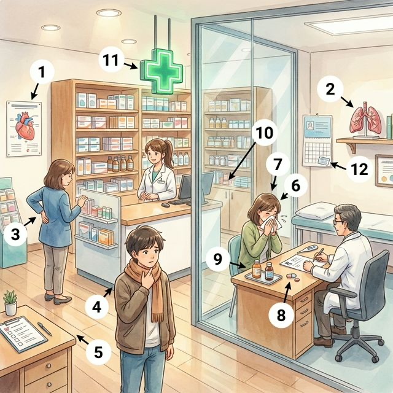
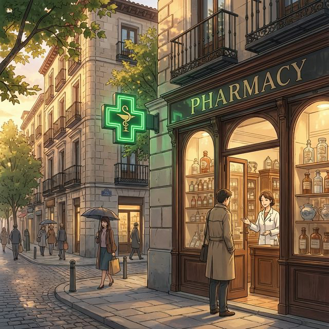
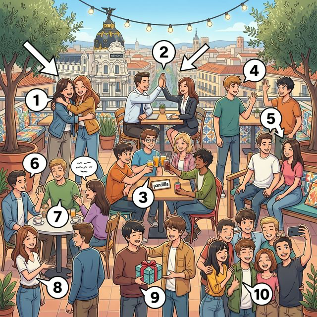
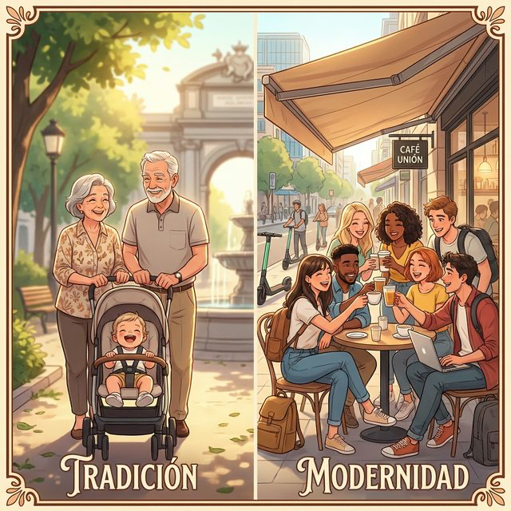

Índice de Contenidos - Nivel A2
Part I. Yo
- Chapter 1: Mi cuerpo y salud
학습 포인트: 세부 장기 명칭, 증상 설명,
doler동사와 간접 목적 대명사 - Chapter 2: ¿Cómo soy?
학습 포인트: 복합적인 심리 상태 및 고급 성격 묘사,
ser/estar의 의미 변화 - Chapter 3: Mi identidad 학습 포인트: 다문화주의, 다양한 배경 표현, 공공 문서 발급 관련 어휘
Part II. Mi Vida
- Chapter 4: Familia y amigos 학습 포인트: 다양한 가족 형태, 복잡한 사회적/대인 관계 문제
- Chapter 5: ¡A comer! 학습 포인트: 요리법 관련 동사 (썰다, 굽다 등), 주방 도구, 긍정 명령법 기초
- Chapter 6: Mi casa 학습 포인트: 심화 가전제품, 가사 분담, 부동산 구하기 관련 표현
Part III. Mi Mundo
- Chapter 7: En la escuela 학습 포인트: 교육 제도, 대학 행정 절차, 학창 시절 회상 (불완전 과거 시제)
- Chapter 8: El trabajo 학습 포인트: 이력서 작성, 면접 준비, 고용 계약 및 고급 비즈니스 어휘
- Chapter 9: Ocio y arte 학습 포인트: 문화 생활, 영화 및 책 감상평, 관계 대명사 활용
- Chapter 10: De compras 학습 포인트: 온라인 쇼핑, 품질 비교, 환불/교환 및 불만 제기 표현
Part IV. Conectados
- Chapter 11: Medios y tecnología 학습 포인트: 소프트웨어, 소셜 미디어, 사이버 보안, 현재 완료 시제 활용
- Chapter 12: Viajes y lugares 학습 포인트: 호텔 시설, 관광지 심층 묘사, 여행 중 문제 해결 및 에피소드
Part V. Nuestro Mundo
- Chapter 13: Rutina y salud 학습 포인트: 가사 노동 심화, 스트레스 관리, 건강한 생활 습관 제안
- Chapter 14: Cultura y celebraciones 학습 포인트: 역사적 시대, 예술 양식 구분, 종교 및 문화 비교
- Chapter 15: Mi futuro y el mundo 학습 포인트: 주요 사회 문제 점검, 국제 협력, 지속 가능한 미래 비전 제시
스페인어 A2 시제 및 명령형 관련 핵심 문법 분석
각 챕터별로 다루고 있는 시제, 명령형 및 주요 문법/표현을 정리한 리스트입니다. 시제와 명령형과 관련된 핵심 문법은 🔴 아이콘과 함께 강조 표시했습니다.
📘 Nivel A2
Chapter 1: Mi Cuerpo (A2)
- 🔹 A. 기본 구조
- 🔹 B. 단수/복수 일치 (Conjugación)
- 🔹 C. 주의사항
Chapter 2: Como Soy (A2)
- 🔹 1. 동사 결합에 따른 의미 변화 (Ser vs. Estar + Adjective)
- 🔹 2. 재귀동사 (Verbos Reflexivos): 기분의 변화
- 🔴 과거 시제 (Imperfecto/Participio) 필수 불규칙 동사
- 🔴 1. 불완전 과거 (Imperfecto) - 딱 3개뿐인 불규칙
- 🔴 2. 과거 분사 (Participio) - 현재 완료 등을 만들 때 쓰이는 불규칙 9선
Chapter 3: Mi Identidad (A2)
- 🔹 1. Ser 동사와 출신(Origen)의 심화 표현
- 🔴 2. 과거의 정체성 표현: Ser 동사 불완료 과거 (Imperfecto)
- 🔴 3. 현재 시제 (Presente) 필수 불규칙 동사
- 🔴 4. 과거 분사 (Participio) 필수 불규칙
Chapter 4: Familia Amigos (A2)
- 🔹 A. 소유형용사 후치형 (Stressed Possessive Adjectives)
- 🔹 B. 상호 재귀동사 (Reciprocal Reflexive Verbs)
Chapter 5: A Comer (A2)
- 🔹 A. Gustar형 동사 (Verbs like "Gustar")
- 🔹 B. 부정어의 사용 (La Negación)
Chapter 6: Mi Casa (A2)
- 🔹 A. 관계대명사 'Donde' (Where)
- 🔹 B. 가사 관련 핵심 동사 구문
Chapter 7: En La Escuela (A2)
- 🔴 A. 현재진행형 (Presente Continuo: Estar + Gerundio)
- 🔹 💡 English Bridge: "be + -ing"
- 🔹 💡 Korean Tip
- 🔹 B. 비교급과 최상급 (Comparativos y Superlativos)
Chapter 8: El Trabajo (A2)
- 🔴 A. 단순과거 (Indefinido) vs 불완료과거 (Imperfecto) (경력 기술 시)
- 🔴 B. 단순과거 (Indefinido)
- 🔹 C. Verbos Regulares (Revisión)
- 🔴 D. Participio (과거분사) - Irregulares
- 🔴 D. Futuro (미래) - 불규칙 동사 (경력 계획)
- 🔴 Mandatory Irregulars (Futuro)
- 🔴 C. 시제 활용 팁
- 🔹 Korean Tip
Chapter 9: Ocio Y Arte (A2)
Chapter 10: De Compras (A2)
- 🔹 A. 비교급 (Comparativos)
- 🔹 B. 최상급 (Superlativos)
Chapter 11: Medios Y Tecnologia (A2)
- 🔹 A. 빈도 부사의 위치
- 🔹 B. 목적대명사의 결합 (Review)
Chapter 12: Viajes Y Lugares (A2)
Chapter 13: Rutina Y Salud (A2)
- 🔹 Doler (아프다) - 역구조 동사
- 🔹 Important
Chapter 14: Cultura Y Celebraciones (A2)
- 🔹 A. Saber (알다) - 1인칭 불규칙
- 🔹 B. Saber vs Conocer 가이드
- 🔹 C. Repaso: Verbos Irregulares (Mandatory)
Chapter 15: Mi Futuro Y El Mundo (A2)
- 🔴 Futuro Simple (단순 미래) - 규칙형
- 🔹 Important! 1인칭 복수(
-emos)를 제외한 모든 어미에 강세(Acento)가 있다는 점을 꼭 기억하세요! - 🔴 B. 명령법 (Imperativo) - 긍정 및 부정
- 🔴 C. Futuro Simple - Irregulares (불규칙형)
- 🔹 C. Verbos Regulares (Revisión)
- 🔴 D. Pluscuamperfecto (과거완료)
Chapter 1: Mi cuerpo y salud (A2)
Cervantes: §1 Identidad: 심화된 신체 특징 묘사, §13 Salud: 건강 관련 문제, 질병 및 생활 습관 표현
1. Opener
학습 목표
- 복잡한 신체 부위와 장기, 그리고 세부적인 건강 상태를 설명할 수 있습니다.
doler(아프다) 동사와 간접 목적 대명사의 결합을 마스터하여 통증을 정확히 표현합니다.- 스페인의 약국 문화와 자가 진단 및 처방에 대한 문화적 에티켓을 익힙니다.
- 병원 예약 및 약국에서의 심화 상담 시나리오를 수행할 수 있습니다.
¿Sabías que...? (알고 계셨나요?)
스페인의 약국(Farmacia)은 단순히 약을 파는 곳을 넘어, 가벼운 증상에 대해 전문적인 조언을 해주는 '준의료기관' 역할을 합니다. 밤늦게나 공휴일에도 당번 약국인 'Farmacia de guardia'가 항상 열려 있어 시민들의 건강을 책임집니다.
2. Vocabulario Esencial: Salud y Medicina
A2 수준의 심화 건강 관련 어휘입니다. 일러스트의 상세 부위를 확인해보세요.

| 번호 | Spanish | English Bridge | Korean Tip |
|---|---|---|---|
| 1 | el corazón | Cordial (→ heart-related) ✅ | 심장 |
| 2 | los pulmones | Pulmonary ✅ | 폐 |
| 3 | la espalda | — | 등, 허리 |
| 4 | la garganta | — | 목구멍, 인후 |
| 5 | el síntoma | Symptom ✅ | 증상 |
| 6 | la gripe | Grippe (archaic English for flu) | 독감 |
| 7 | la fiebre | Fever ✅ | 열 |
| 8 | la receta | Recipe ✅ (→ prescription/formula) | 처방전 |
| 9 | la pastilla | Pastille (→ lozenge/pill) | 알약 |
| 10 | el jarabe | — | 시럽 (약물) |
| 11 | la farmacia | Pharmacy ✅ | 약국 |
| 12 | la cita médica | — | 병원 예약 |
✅ 표시된 단어는 영어와 어원이 같거나 매우 유사한 'Cognates'입니다.
3. Expresiones Útiles
병원과 약국에서 사용하는 세부적인 표현들입니다.
A. 통증 및 증상 상세 설명
- ¿Qué le pasa? (What's wrong? / 어디가 편치 않으신가요?)
- Me duele mucho la espalda. (My back hurts a lot. / 허리가 너무 아파요.)
- Tengo una fiebre muy alta. (I have a very high fever. / 열이 아주 높아요.)
- Tengo alergia al polen. (I'm allergic to pollen. / 꽃가루 알레르기가 있어요.)
B. 약국에서 사용하기
- ¿Tiene algo para la tos? (Do you have something for the cough? / 기침에 좋은 약이 있나요?)
- Quiero este medicamento con receta. (I want this medicine with a prescription. / 처방전이 있는 이 약을 사고 싶어요.)
- ¿Cuántas veces al día debo tomarlo? (How many times a day should I take it? / 하루에 몇 번 먹어야 하나요?)
4. Gramática Esencial: El verbo DOLER (아프다)
doler 동사는 gustar(좋아하다) 동사와 동일한 구조를 가집니다. 즉, '내가 주어'가 아니라 '아픈 부위가 주어'가 됩니다.
A. 기본 구조
[간접 목적 대명사] + duele/duelen + [아픈 신체 부위]
| 간접 목적 대명사 | 설명 |
|---|---|
| me | 나에게 (내 ~가 아프다) |
| te | 너에게 |
| le | 그/그녀/당신에게 |
| nos | 우리에게 |
| os | 너희에게 |
| les | 그들/그녀들/당신들에게 |
B. 단수/복수 일치 (Conjugación)
doler는 '아픈 신체 부위'의 수에 따라 다음과 같이 두 가지만 사용합니다.
| 주어 (아픈 부위) | 동사 변화 | 예시 |
|---|---|---|
| 단수 (la cabeza, el pie) | duele | Me duele la cabeza. |
| 복수 (los ojos, las manos) | duelen | Me duelen los ojos. |
C. 주의사항
- 변화: 아픈 부위가 단수이면 duele, 복수이면 duelen을 사용합니다. 과감히 소유 대명사를 생략하고 정관사를 사용하는 스페인어의 특징에 주목하세요.
- 관사: 스페인어에서는 신체 부위에 소유 형용사(mi, tu...) 대신 정관사(el, la...)를 주로 사용합니다. (이미 대명사 me, te 등으로 주체를 알 수 있기 때문입니다.)
Korean Tip! 한국어로는 "나는 머리가 아파"라고 내가 주어인 것처럼 말하지만, 스페인어에서는 "나에게 머리가 통증을 준다"는 식의 역구조 동사임을 명심하세요. 영어의 "My head hurts"와 구조적으로 더 유사합니다.
5. Cultura Viva: Las Farmacias y la Automedicación en España

En España, las farmacias son instituciones muy respetadas. Los farmacéuticos tienen una formación académica rigurosa y a menudo actúan como el primer punto de contacto para consultas de salud menores. A diferencia de otros países, no se puede comprar medicamentos fuertes sin una receta médica oficial de un profesional de la Seguridad Social o de una clínica privada.
La cultura de la automedicación está controlada. Para problemas comunes como resfriados o dolores leves, el farmacéutico puede recomendar medicamentos de venta libre. Un detalle importante es la Farmacia de Guardia: cada municipio tiene un calendario para asegurar que al menos una farmacia esté abierta las 24 horas. Si estás en España y necesitas medicinas por la noche, solo tienes que buscar en internet o en la puerta de cualquier farmacia el cartel de "Guardia".
[한국어 번역] 스페인에서 약국은 매우 존경받는 기관입니다. 약사들은 엄격한 학술 교육을 받았으며 종종 가벼운 건강 상담의 첫 번째 접점 역할을 합니다. 다른 국가들과 달리, 사회 보장 제도나 사립 클리닉의 공식 처방전 없이는 강력한 약물을 구매할 수 없습니다.
자가 처방 문화는 엄격히 관리됩니다. 감기나 가벼운 통증 같은 일반적인 문제에 대해서는 약사가 일반 의약품(OTC)을 추천할 수 있습니다. 중요한 디테일 중 하나는 **당번 약국(Farmacia de Guardia)**입니다. 모든 지자체는 최소 한 곳의 약국이 24시간 문을 열도록 일정을 관리합니다. 만약 스페인에서 밤에 약이 필요하다면, 인터넷을 검색하거나 약국 문에 붙은 "Guardia(당번)" 공고를 확인하면 됩니다.
6. Práctica
A. Match the word (알맞은 단어를 연결하세요)
| Spanish | English / Korean |
|---|---|
| 1. Tener fiebre → ( ) | a. Pharmacy |
| 2. La farmacia → ( ) | b. Toothache |
| 3. Dolor de muelas → ( ) | c. To have a fever |
| 4. La receta → ( ) | d. Cough syrup |
| 5. Jarabe para la tos → ( ) | e. Prescription |
B. Choose the correct form of DOLER (빈칸에 doler 동사의 알맞은 형태를 쓰세요)
- Me ______________________ la garganta. (가목)
- A Manuel le ______________________ los pies. (복수)
- ¿Te ______________________ el estómago? (단수)
- Nos ______________________ las piernas de tanto caminar. (복수)
- A veces le ______________________ la espalda. (단수)
C. 번역 연습 (스페인어로 번역하세요)
- 내 눈들이 아파요. (............................................................)
- 나는 열이 있어요. (............................................................)
- 처방전이 필요합니다. (............................................................)
- 너는 어디가 아프니? (............................................................)
- 우리는 등이 아파요. (............................................................)
7. Lectura 📖
Una visita inesperada al médico (예상치 못한 병원 방문)
El invierno en Madrid es muy frío y mucha gente tiene la gripe. Ayer, Elena se levantó con mucha fiebre y dolor de garganta. Ella llamó al Centro de Salud para pedir una cita médica. El doctor la examinó y le dijo: "Tienes una infección leve". El doctor le dio una receta para un jarabe y unas pastillas. Elena fue a la farmacia de su barrio y compró los medicamentos. Ahora tiene que descansar en casa por tres días.
Questions:
- ¿Por qué Elena pidió una cita médica? (엘레나는 왜 병원 예약을 했나요?)
- ............................................................
- ¿Qué compró Elena en la farmacia? (엘레나는 약국에서 무엇을 샀나요?)
- ............................................................
[한국어 번역] 마드리드의 겨울은 매우 춥고 많은 사람이 독감에 걸립니다. 어제 엘레나는 높은 열과 목 통증을 느끼며 일어났습니다. 그녀는 보건소에 전화를 걸어 병원 예약을 했습니다. 의사는 그녀를 진찰하고 "가벼운 감염이 있습니다"라고 말했습니다. 의사는 그녀에게 시럽과 알약 처방전을 주었습니다. 엘레나는 동네 약국에 가서 약을 샀습니다. 이제 그녀는 집에서 3일 동안 쉬어야 합니다.
8. Diálogo
En la farmacia (약국에서)
Situación: Sofía tiene un fuerte resfriado y entra en una farmacia en Sevilla para comprar algo que la ayude. Habla con el farmacéutico sobre sus síntomas y pide recomendaciones.
상황: 소피아는 심한 감기에 걸려 이를 치료할 약을 사러 세비야의 한 약국에 들어갑니다. 그녀는 약사에게 자신의 증상을 설명하고 약을 추천받습니다.
| Spanish | Korean |
|---|---|
| Farmacéutico: Hola, buenas tardes. ¿En qué puedo ayudarla? | 약사: 안녕하세요, 좋은 오후입니다. 무엇을 도와드릴까요? |
| Sofía: Hola. Tengo un resfriado muy fuerte. | 소피아: 안녕하세요. 감기가 아주 심하게 걸렸어요. |
| Farmacéutico: ¿Cuáles son sus síntomas? | 약사: 증상이 어떠신가요? |
| Sofía: Me duele la garganta y tengo un poco de fiebre. | 소피아: 목이 아프고 열이 약간 있어요. |
| Farmacéutico: ¿Tiene tos también? | 약사: 기침도 하시나요? |
| Sofía: Sí, tengo mucha tos, sobre todo por la noche. | 소피아: 네, 특히 밤에 기침을 많이 해요. |
| Farmacéutico: Le recomiendo este jarabe para la tos y estas pastillas para el dolor. | 약사: 이 기침 시럽과 통증 완화 알약을 추천해 드립니다. |
| Sofía: ¿Cómo debo tomarlos? | 소피아: 어떻게 복용해야 하나요? |
| Farmacéutico: Tome el jarabe cada ocho horas y una pastilla antes de dormir. | 약사: 시럽은 8시간마다 드시고, 알약은 자기 전에 한 알 드세요. |
| Sofía: Muchas gracias por su ayuda. | 소피아: 도와주셔서 정말 감사합니다. |
9. Repaso
이번 장에서 배운 핵심 내용을 확인해보세요.
- 심장, 폐, 등, 목구멍 등 주요 장기와 신체 부위 어휘를 익혔나요?
-
doler동사의 역구조(me duele/duelen)를 문법적으로 이해했나요? - 병원 예약(
cita médica)과 처방전(receta) 관련 표현을 사용할 수 있나요? - 스페인의 당번 약국(
Farmacia de Guardia) 시스템과 상담 문화를 이해했나요?
10. Cierre
잘하셨습니다! A2 수준으로 넘어오면서 더 복잡한 신체 기관과 상세한 통증 표현법을 배웠습니다. 특히 doler 동사는 스페인어 특유의 역구조 동사 중 하나이므로, gustar와 함께 충분히 연습하는 것이 중요합니다. 건강은 언어 학습 못지않게 중요하니 항상 몸 관리 잘하세요. ¡Salud y mucha suerte! (건강과 행운을 빕니다!)
11. Soluciones
6. Práctica - A. Match the word
- 1-c, 2-a, 3-b, 4-e, 5-d
6. Práctica - B. Choose the correct form
- duele, 7. duelen, 8. duele, 9. duelen, 10. duele
6. Práctica - C. 번역 연습
- Quiero un jarabe para la tos.
- Tenemos una cita médica.
- Ella tiene alergia a los medicamentos.
7. Lectura - Preguntas
- Elena pidió una cita médica porque tenía fiebre y dolor de garganta. (엘레나는 열이 나고 목이 아파서 병원 예약을 했습니다.)
- Elena compró un jarabe y unas pastillas. (엘레나는 시럽과 알약을 샀습니다.)
Chapter 2: ¿Cómo soy? (A2)
Cervantes: §2 Persona: 심화된 성격 묘사, 일시적/영구적 상태의 구분 및 형용사의 의미 변화
1. Opener
Más allá de la superficie (표면 그 너머) A1에서 기본적인 성격과 외모를 배웠다면, A2에서는 더 복잡한 감정 상태와 재귀동사를 활용한 일상적인 심리 변화에 대해 다룹니다. 또한, 같은 형용사라도 Ser와 Estar 중 어느 동사와 결합하느냐에 따라 의미가 어떻게 변하는지 심층적으로 탐구합니다.
학습 목표
- 복합적인 감정 및 심리 상태를 나타내는 고급 형용사 12개 습득
- 재귀동사(Verbos reflexivos)를 활용한 기분과 상태의 변화 표현
- Ser vs Estar 결합에 따른 형용사의 의미 변화(Semantic shifts) 이해
- 스페인 디지털 세대의 자아 표현 방식과 SNS 문화 이해
[!TIP] ¿Sabías que...? 스페인어에서 'Listo'라는 단어는 **'Ser listo'**일 때는 '똑똑하다(Smart)'는 뜻이지만, **'Estar listo'**일 때는 '준비가 되었다(Ready)'는 뜻이 됩니다. 동사 하나로 의미가 완전히 달라지는 스페인어의 묘미를 느껴보세요!
2. Vocabulario Esencial
더 섬세한 감정의 결을 표현하기 위한 어휘들입니다. 학습의 편의를 위해 두 그룹으로 나누어 제공합니다.
A. 감정 표현 1 (Emociones 1)
삽화의 번호(1~6)가 아래 어휘 표와 정확히 대응됩니다.

| 번호 | Spanish | English Bridge | Korean Tip |
|---|---|---|---|
| 1 | confundido / -a | Confused ✅ | 혼란스러운 상태 |
| 2 | orgulloso / -a | Proud (Proud of self) | 자랑스러워하는 |
| 3 | avergonzado / -a | — (Ashamed / Embarrassed) | ⚠️ Embarrassed와 소리 비슷하지만 False Friend |
| 4 | aburrido / -a | Bored | Ser/Estar 의미 변화 주의 |
| 5 | preocupado / -a | Preoccupied → Worried ✅ | 걱정에 사로잡힌 상태 |
| 6 | sorprendido / -a | Surprised ✅ | 놀란 상태 |
B. 감정 표현 2 (Emociones 2)
삽화의 번호(1~6)가 아래 어휘 표와 정확히 대응됩니다.

| 번호 | Spanish | English Bridge | Korean Tip |
|---|---|---|---|
| 1 | enfadado / -a | — (Angry / Mad) | 화난 상태 |
| 2 | celoso / -a | Jealous ✅ | 질투하는 |
| 3 | esperanzado / -a | Hope (Esperanza) → Hopeful | 희망에 가득 찬 |
| 4 | agotado / -a | Exhausted | 에너지가 고갈(exhaust)된 |
| 5 | asustado / -a | — (Scared / Frightened) | 겁먹은 상태 |
| 6 | tranquilo / -a | Tranquil ✅ | 차분하고 평온한 |
✅ 표시된 단어는 영어와 거의 동일하거나 어원이 같아 기억하기 쉬운 어휘입니다. ⚠️ 표시는 주의가 필요한 False Friend입니다.
3. Expresiones Útiles
감정의 변화와 심화된 묘사를 위한 표현들입니다.
A. 감정 상태 표현 (Estar + 형용사)
- Me siento un poco confundido. (I feel a bit confused. / 조금 혼란스러워요.)
- Estoy orgulloso de ti. (I am proud of you. / 네가 자랑스러워.)
- ¿Estás enfadado conmigo? (Are you mad at me? / 나한테 화났니?)
- 💡 English Bridge: "Enfadado" doesn't look like any English word, but pairs with preposition "con" (with) just like English "angry with me"
B. 감정 변화 표현 (재귀동사)
- ¡No te preocupes! (Don't worry! / 걱정하지 마세요!)
- 💡 English Bridge: Compare "preocuparse" (to worry) with English "pre-occupy" — your mind is occupied in advance!
- Me pongo nervioso antes de un examen. (I get nervous before an exam. / 나는 시험 전에 긴장하게 돼.)
C. Ser vs Estar 의미 변화 체험
- Él es muy listo. (He is very smart. / 그는 정말 똑똑해.) — Ser = 성격
- ¿Estás listo para salir? (Are you ready to go out? / 나갈 준비 됐니?) — Estar = 상태
4. Gramática Esencial
1. 동사 결합에 따른 의미 변화 (Ser vs. Estar + Adjective)
English Bridge: In English, context determines meaning naturally. In Spanish, the choice of verb changes meaning explicitly. This is one of the most unique aspects of Spanish!
| 형용사 (Adjective) | Ser (본질/성격) | Estar (상태) |
|---|---|---|
| listo / -a | 똑똑하다 (Smart) | 준비되다 (Ready) |
| malo / -a | 나쁘다 (Bad character) | 아프다 (Sick) / 맛없다 |
| aburrido / -a | 지루한 사람 (Boring) | 지루함을 느끼다 (Bored) |
| verde | 초록색이다 (Green) | 미숙하다 (Not ripe) |
| rico / -a | 부자다 (Rich) | 맛있다 (Delicious) |
2. 재귀동사 (Verbos Reflexivos): 기분의 변화
주어의 행동이 다시 주어 자신에게 돌아오는 재귀동사는 '기분이나 상태의 변화'를 나타낼 때 자주 쓰입니다.
English Bridge: Reflexive verbs are like saying "I myself feel..." — the action reflects back to the subject. English uses "myself/yourself" sparingly, but Spanish uses reflexive pronouns constantly for emotional changes.
재귀대명사: me, te, se, nos, os, se
| 주어 (Subject) | sentirse (느끼다) | ponerse (~이 되다) |
|---|---|---|
| yo | me siento | me pongo |
| tú | te sientes | te pones |
| él/ella/usted | se siente | se pone |
| nosotros/as | nos sentimos | nos ponemos |
| vosotros/as | os sentís | os ponéis |
| ellos/ellas/ustedes | se sienten | se ponen |
💡 Stem change:
sentirsefollows the e→ie pattern (Boot Verb),ponersehas the special yo form with -g- insertion (like tener→tengo). [!IMPORTANT] Korean Tip: '나는 슬퍼(Estoy triste)'는 현재의 상태지만, **'나는 슬퍼져(Me pongo triste)'**는 감정의 변화 과정을 강조합니다. 재귀동사는 이 '변화'의 느낌을 잘 살려줍니다.
과거 시제 (Imperfecto/Participio) 필수 불규칙 동사
초급 단계에서 꼭 알아야 할 과거 시제 핵심 불규칙 동사들입니다.
1. 불완전 과거 (Imperfecto) - 딱 3개뿐인 불규칙
| 주어 | ser | ir | ver |
|---|---|---|---|
| yo | era | iba | veía |
| tú | eras | ibas | veías |
| él/ella/ud. | era | iba | veía |
| nosotros/as | éramos | íbamos | veíamos |
| vosotros/as | erais | ibais | veíais |
| ellos/ellas/uds. | eran | iban | veían |
2. 과거 분사 (Participio) - 현재 완료 등을 만들 때 쓰이는 불규칙 9선
| 동사 원형 | 과거 분사 | 동사 원형 | 과거 분사 |
|---|---|---|---|
| decir (말하다) | dicho | hacer (하다) | hecho |
| ver (보다) | visto | escribir (쓰다) | escrito |
| poner (두다) | puesto | romper (깨다) | roto |
| volver (돌아오다) | vuelto | abrir (열다) | abierto |
| morir (죽다) | muerto | leer (읽다) | leído |
5. Cultura Viva: El "Yo" digital en España 📱
스페인 청년들의 SNS와 자아 표현 문화를 살펴봅니다.
La imagen personal en la era de Instagram
Hoy en día, para los jóvenes españoles (la "Generación Z"), la identidad no solo se construye en la vida real, sino también en el mundo digital. Redes sociales como Instagram y TikTok son espacios fundamentales para mostrar quiénes son y cómo se sienten. En España, existe una fuerte cultura visual; a la gente le gusta compartir fotos de sus viajes, de la comida ("comida instagrameable") y de sus momentos de ocio con amigos.
Sin embargo, esto también genera una presión por mostrar una "vida perfecta". Muchos jóvenes se sienten preocupados o estresados por su imagen pública. A pesar de esto, el carácter español sigue siendo muy expresivo y abierto. Es común ver perfiles con mensajes positivos y directos. La palabra "postureo" es muy famosa en España: se usa para describir cuando alguien hace algo solo para lucirse en las redes sociales, aunque no sea su realidad cotidiana.
[한국어 번역] 오늘날 스페인 청년들(Z세대)에게 정체성은 현실 세계뿐만 아니라 디지털 세계에서도 구축됩니다. 인스타그램이나 틱톡 같은 소셜 미디어는 그들이 누구인지, 그리고 어떻게 느끼는지를 보여주는 핵심적인 공간입니다. 스페인에는 강력한 시각 문화가 존재합니다. 사람들은 여행, 음식("인스타 감성 음식"), 그리고 친구들과의 여가 시간을 공유하는 것을 좋아합니다.
하지만 이는 또한 "완벽한 삶"을 보여줘야 한다는 압박감을 생성하기도 합니다. 많은 청년이 자신의 공적인 이미지에 대해 걱정하거나(preocupados) 스트레스를(estresados) 받기도 합니다. 그럼에도 불구하고, 스페인 사람들의 성격은 여전히 매우 표현력이 풍부하고 개방적입니다. 긍정적이고 직설적인 메시지가 담긴 프로필을 흔히 볼 수 있습니다. 스페인에서 "postureo(포스투레오)"라는 단어는 매우 유명한데, 이는 누군가가 실제 현실이 아님에도 오직 소셜 미디어에 뽐내기 위해 행동하는 것을 묘사할 때 사용됩니다.

6. Práctica
A. ¿Ser o Estar? (문맥에 맞는 동사를 선택하세요)
- Carlos es (listo / preocupado). Siempre saca buenas notas.
- La manzana está (verde / rica). No podemos comerla todavía.
- No quiero ver esa película, es muy (aburrida / confundida).
- El café está (malo / rico) hoy. ¡Me encanta!
- Estoy (listo / verde) para el viaje. Tengo mi maleta.
B. Completa con el verbo reflexivo (재귀동사를 알맞게 변화시키세요)
- Yo (sentirse) ______________________ muy bien hoy.
- Cuando llueve, Lucía (ponerse) ______________________ triste.
- ¿Por qué (tú / sentirse) ______________________ confundido?
- Nosotros (ponerse) ______________________ nerviosos en los exámenes.
- Los niños (asustarse) ______________________ con la tormenta.
C. 번역 연습 (스페인어로 옮겨보세요)
- 나는 우리 가족이 자랑스러워(orgulloso). (............................................................)
- 시험 때문에 걱정하지 마! (............................................................)
- 그는 학교에서 가장 똑똑한 학생이야. (............................................................)
- 너는 오늘 왜 그렇게 화가 났니? (............................................................)
- 우리는 새로운 소식에 깜짝 놀랐어(sorprendidos). (............................................................)
7. Lectura 📖
Un día de muchas emociones
Ayer fue un día muy intenso para Manuel. Por la mañana, se sintió muy orgulloso porque terminó un proyecto importante en su trabajo. Pero al mediodía, se puso preocupado porque no encontraba las llaves de su coche. Después de buscarlas por una hora, estaba agotado. Al final, su novia las encontró y Manuel se sintió tranquilo otra vez. ¡Qué día tan loco!
Preguntas (질문)
- ¿Por qué Manuel se sintió orgulloso por la mañana? (마누엘은 왜 아침에 자랑스러움을 느꼈나요?)
- ¿Por qué se puso preocupado al mediodía? (점심 무렵에 왜 걱정하게 되었나요?)
- ¿Quién encontró las llaves al final? (결국 누가 열쇠를 찾았나요?)
[한국어 번역]
많은 감정이 교차한 하루
어제는 마누엘에게 매우 강렬한 하루였습니다. 아침에 그는 직장에서 중요한 프로젝트를 끝냈기 때문에 매우 자랑스러움을(orgulloso) 느꼈습니다. 하지만 정오쯤, 차 열쇠를 찾을 수 없어서 걱정이(preocupado) 되었습니다. 한 시간 동안 열쇠를 찾은 후, 그는 녹초가(agotado) 되었습니다. 결국, 그의 여자친구가 열쇠를 찾았고 마누엘은 다시 안도감을(tranquilo) 느꼈습니다. 정말 미친 하루였어요!
8. Diálogo
¡No te pongas nervioso! (긴장하지 마!)
Situación: Javier tiene una entrevista de trabajo por primera vez. Su hermana Elena intenta tranquilizarlo porque Javier está muy estresado y preocupado por su imagen.
상황: 하비에르는 처음으로 구직 면접을 앞두고 있습니다. 그의 누나 엘레나는 하비에르가 자신의 이미지 때문에 매우 스트레스를 받고 걱정하고 있는 것을 보고 그를 안심시키려 노력합니다.
| 🇪🇸 Español | 🇰🇷 한국어 |
|---|---|
| Javier: Elena, me pongo muy nervioso. | 하비에르: 엘레나, 나 너무 긴장돼. |
| Elena: ¡Tranquilo, Javier! Eres una persona muy lista. | 엘레나: 진정해, 하비에르! 넌 정말 똑똑한 사람이잖아. |
| Javier: Pero hoy no me siento seguro. Estoy confundido. | 하비에르: 하지만 오늘은 자신감이 안 생겨. 혼란스러워. |
| Elena: Es normal estar asustado la primera vez. | 엘레나: 처음에는 겁나는 게 당연해. |
| Javier: ¿Cómo me veo? ¿Estoy bien con esta camisa? | 하비에르: 나 어때 보여? 이 셔츠 괜찮아? |
| Elena: Estás muy guapo y serio. ¡Perfecto para el trabajo! | 엘레나: 아주 잘 생겨 보이고 진중해 보여. 일하기에 완벽해! |
| Javier: Gracias. Ahora me siento un poco más esperanzado. | 하비에르: 고마워. 이제 조금 더 희망이 생기는 것 같아. |
| Elena: ¡Mucha suerte! Estamos orgullosos de ti. | 엘레나: 행운을 빌어! 우린 네가 자랑스러워. |
9. Repaso
이 장에서 배운 내용을 확인해 보세요:
- 감정과 심리 상태를 나타내는 심화 형용사 12개를 익혔다.
- Ser와 Estar 결합에 따라 뜻이 변하는 형용사(listo, rico, aburrido 등)를 구분한다.
- 재귀동사(sentirse, ponerse)를 사용하여 상태의 변화를 표현할 수 있다.
-
sentirse의 어간 변화(e→ie Boot Verb)와ponerse의 1인칭 불규칙(-g- 삽입)을 이해했다. - 스페인 청년들의 SNS 문화와 'postureo'의 의미를 이해했다.
10. Cierre
¡Excelente! 🎉 이제 여러분은 단순한 외모 묘사를 넘어, 사람의 깊은 내면과 감정의 변화까지 스페인어로 풍부하게 표현할 수 있게 되었습니다.
A2 수준에서 중요한 것은 '뉘앙스'의 차이를 아는 것입니다. 같은 형용사도 Ser(본질)와 Estar(상태) 중 어느 것을 선택하느냐에 따라 완전히 다른 의미가 됩니다. 이 감각은 영어에는 없는 스페인어 고유의 특성이므로, 다양한 예문을 통해 꾸준히 연습하는 것이 중요합니다.
다음 장에서는 우리의 '정체성'과 이를 증명하는 '서류(Identidad/DNI)'에 대해 배우며 실무적인 스페인어 능력을 키워보겠습니다. ¡Ánimo!
11. Soluciones
6. Práctica - A. ¿Ser o Estar?
- listo, 2. verde, 3. aburrida, 4. rico, 5. listo
6. Práctica - B. Completa
- me siento, 7. se pone, 8. te sientes, 9. nos ponemos, 10. se asustan
6. Práctica - C. 번역 연습
- Estoy orgulloso de mi familia., 12. ¡No te preocupes por el examen!, 13. Él es el estudiante más listo de la escuela., 14. ¿Por qué estás tan enfadado hoy?, 15. Estamos sorprendidos por las nuevas noticias.
7. Lectura - Preguntas
- Se sintió orgulloso porque terminó un proyecto importante. (그는 중요한 프로젝트를 끝내서 자랑스러움을 느꼈습니다.)
- Se puso preocupado porque no encontraba las llaves de su coche. (그는 자동차 열쇠를 찾지 못해서 걱정하게 되었습니다.)
- Su novia las encontró. (그의 여자친구가 열쇠를 찾았습니다.)
Chapter 3: Mi identidad (A2)
Cervantes: §1 Identidad: datos personales (Nivel A2) - 이 장에서는 개인의 정체성을 구성하는 기본적인 정보들을 스페인어로 표현하는 방법을 학습합니다. 이름, 국적, 출신지 등 자신을 소개하는 데 필요한 핵심 어휘와 문법을 다룹니다.
1. Opener
Identidades múltiples (다양한 정체성) A1에서 기본적인 이름과 국적을 배웠다면, A2에서는 더 나아가 우리의 배경과 뿌리, 그리고 현대 사회의 다문화적 정체성에 대해 다룹니다. 또한, 출신뿐만 아니라 과거의 배경을 설명하기 위한 'Ser' 동사의 과거형과 'Estar' 동사의 심화된 쓰임을 배웁니다.
학습 목표
- 다문화 및 인종, 배경 관련 고급 어휘 10개 습득
- 과거의 정체성을 표현하는 용법 (Ser - Imperfecto 기초)
- 'Ser' 동사와 'Origen(출처)' 표현의 심화
- 스페인의 다문화 사회와 이주민 문화 이해
[!TIP] ¿Sabías que...? 스페인은 역사적으로 다양한 문화(로마, 아랍, 유대 등)가 융합된 나라이며, 오늘날에는 중남미, 유럽, 아시아 등지에서 온 이민자들과 함께 더욱 다채로운 다문화 사회를 형성하고 있습니다.
2. Vocabulario Esencial
정체성의 다양성을 표현하기 위한 어휘들입니다. 삽화의 번호(①~⑩)가 아래 어휘 표와 정확히 대응됩니다.

| 번호 | Spanish | English Bridge | Korean Tip |
|---|---|---|---|
| 1 | español / -a | Spanish ✅ | 기본 국적 |
| 2 | latinoamericano / -a | Latin American ✅ | 라틴아메리카인의 공식 명칭 |
| 3 | asiático / -a | Asian ✅ | 아시아계 |
| 4 | africano / -a | African ✅ | 아프리카계 |
| 5 | europeo / -a | European ✅ | 유럽계 |
| 6 | el mapa del mundo | World Map | 세상을 보는 창 |
| 7 | las raíces mixtas | Mixed Roots | Raíz(뿌리)에서 유래 |
| 8 | la diversidad | Diversity ✅ | 다양성이란 가치 |
| 9 | el respeto | Respect ✅ | 존중의 아이콘 |
| 10 | la integración | Integration ✅ | 함께 어우러짐 |
✅ 표시된 단어는 영어와 거의 동일하거나 어원이 같아 기억하기 쉬운 어휘입니다.
3. Expresiones Útiles
나와 타인의 배경에 대해 더 깊이 있게 질문하고 답하는 표현들입니다.
A. 배경/뿌리 표현
- Mis padres son de origen peruano. (My parents are of Peruvian origin. / 부모님의 뿌리는 페루예요.)
- Tengo doble nacionalidad. (I have dual nationality. / 저는 이중 국적입니다.)
- 💡 English Bridge: "Doble" = Double ✅, "Nacionalidad" = Nationality ✅ — perfect cognates!
B. 감정/자부심 표현
- Me siento orgulloso de mis raíces. (I feel proud of my roots. / 저는 제 뿌리가 자랑스러워요.)
- España es un país multicultural. (Spain is a multicultural country. / 스페인은 다문화 국가입니다.)
- Él se ha integrado muy bien. (He has integrated very well. / 그는 매우 잘 적응했어요.)
C. 출신 질문하기
- ¿Cuáles son tus orígenes? (What are your origins? / 당신의 뿌리는 무엇인가요?)
4. Gramática Esencial
1. Ser 동사와 출신(Origen)의 심화 표현
단순히 "어디 출신이다"를 넘어, 배경을 설명할 때 사용하는 구조입니다.
English Bridge: English uses "from" for origin — "I am from Seoul." Spanish has three levels of expressing origin, from simple to nuanced:
- Ser de + [Country/City]: Soy de Seúl. (가장 기본 — I am from Seoul.)
- Ser de origen + [Adjective]: Ella es de origen árabe. (그녀는 아랍계이다 — She is of Arab origin.)
- Tener raíces en + [Place]: Tengo raíces en Galicia. (내 뿌리는 갈리시아에 있다 — I have roots in Galicia.)
2. 과거의 정체성 표현: Ser 동사 불완료 과거 (Imperfecto)
과거에 내가 누구였는지, 어떤 사람이었는지 묘사할 때 사용합니다.
English Bridge: English uses "was/were" for past states — "I was shy." Spanish Imperfecto works similarly: it describes ongoing past states, not completed events.
| 주어 (Subject) | ser (Imperfecto) | English |
|---|---|---|
| yo | era | I was / used to be |
| tú | eras | you were |
| él/ella/usted | era | he/she was |
| nosotros/as | éramos | we were |
| vosotros/as | erais | you all were |
| ellos/ellas/ustedes | eran | they were |
💡 Pattern:
serImperfecto is irregular — the stemer-is completely different from Presenteso-/s-. Note that yo and él/ella share the same form: era.
3. 현재 시제 (Presente) 필수 불규칙 동사
정체성을 표현할 때 자주 쓰이는 현재 시제 불규칙 동사들입니다.
| 주어 | saber (알다) | poder (수있다) | tender (경향있다) |
|---|---|---|---|
| yo | sé | puedo | tiendo |
| tú | sabes | puedes | tiendes |
| él/ella/ud. | sabe | puede | tiende |
| nosotros/as | sabemos | podemos | tendemos |
| vosotros/as | sabéis | podéis | tendéis |
| ellos/ellas/uds. | saben | pueden | tienden |
4. 과거 분사 (Participio) 필수 불규칙
현재 완료나 수동적 의미로 쓰이는 필수 과거 분사 불규칙 8선입니다.
| 동사 원형 | 과거 분사 | 동사 원형 | 과거 분사 |
|---|---|---|---|
| hacer (하다) | hecho | poner (두다) | puesto |
| escribir (쓰다) | escrito | decir (말하다) | dicho |
| volver (돌아오다) | vuelto | abrir (열다) | abierto |
| leer (읽다) | leído | romper (깨다) | roto |
[!IMPORTANT] Korean Tip: "나는 어릴 때 부끄러움이 많았어(Cuando era pequeño, era tímido)"처럼 과거의 나를 묘사할 때 'era'를 사용합니다. 현재의 'soy'와 대조하며 연습해 보세요.
5. Cultura Viva: Los "Expats" y la diversidad en España 🌍
스페인의 다문화적 변화와 그 안에서 살아가는 외국인들에 대해 알아봅시다.
España: Un crisol de culturas (스페인: 문화의 용광로)
En los últimos veinte años, España ha cambiado mucho. El país ha pasado de ser un lugar de donde la gente salía para trabajar a ser un destino muy popular para personas de todo el mundo. Hoy en día, ciudades como Madrid, Barcelona, Valencia y Málaga son centros internacionales. Los "expats" (extranjeros que trabajan fuera de su país) eligen España por su calidad de vida, su clima y su gente abierta.
Esto ha creado una sociedad donde la diversidad es la norma. Es muy común encontrar niños con raíces mixtas en las escuelas o barrios donde se hablan muchos idiomas diferentes. La integración es un proceso importante y, aunque a veces es difícil, los españoles valoran mucho el respeto y la convivencia. Muchos latinoamericanos se sienten como en casa por el idioma, mientras que europeos y otros prefieren el estilo de vida mediterráneo.
[한국어 번역] 지난 20년 동안 스페인은 많이 변했습니다. 스페인은 사람들이 일자리를 찾아 떠나던 나라에서 이제는 전 세계 사람들이 모여드는 매우 인기 있는 목적지가 되었습니다. 오늘날 마드리드, 바르셀로나, 발렌시아, 말라가 같은 도시들은 세계적인 중심지가 되었습니다. "Expats(국외 거주자)"들은 삶의 질, 기후, 그리고 개방적인 사람들 때문에 스페인을 선택합니다.
이로 인해 다양성이(diversidad) 일상이 된 사회가 만들어졌습니다. 학교에서 다양한 뿌리를(raíces mixtas) 가진 아이들을 만나거나, 여러 언어가 들리는 동네를 보는 것은 매우 흔한 일입니다. 통합은(integración) 중요한 과정이며 때로는 어렵기도 하지만, 스페인 사람들은 존중과(respeto) 공존을 매우 가치 있게 여깁니다.
6. Práctica
A. ¿Soy o Era? (문맥에 맞게 현재 또는 과거형을 선택하세요)
- Ahora (soy / era) estudiante de medicina en Madrid.
- Cuando (soy / era) pequeño, (soy / era) muy bajo.
- Mi padre (es / era) profesor de historia antes de jubilarse.
- Nosotros (somos / éramos) amigos desde la infancia.
- ¿Tú (eres / eras) el chico que vivía al lado de mi casa?
B. Origen y Nacionalidad (빈칸을 올바르게 완성하세요)
- Mis abuelos son de origen ______________________.
- Tengo ______________________ nacionalidad.
- Carmen es de origen ______________________.
- Me siento ______________________ de ser coreano.
- En este barrio hay mucha ______________________.
C. 번역 연습 (스페인어로 옮겨보세요)
- 나는 어릴 때 매우 수줍음이 많았어(tímido). (............................................................)
- 내 부모님은 멕시코계 배경(origen)을 가지고 계셔. (............................................................)
- 스페인은 정말 다문화적인 나라야. (............................................................)
- 우리는 학교에서 다른 문화권 친구들과 잘 어울려(integrarse). (............................................................)
- 당신의 가족적인 뿌리(raíces)는 어디인가요? (............................................................)
7. Lectura 📖
La historia de Ricardo
Me llamo Ricardo y mi historia es un poco complicada. Nací en Buenos Aires, pero mis abuelos eran de Italia y España. Por eso, me siento orgulloso de mis raíces mixtas. Ahora vivo en Valencia y trabajo como arquitecto. Me he integrado perfectamente en la ciudad porque la gente es muy acogedora. Para mí, la diversidad es una riqueza y creo que el respeto es la base de todo.
Preguntas (질문)
- ¿De dónde eran los abuelos de Ricardo? (리카르도의 조부모님은 어디 분이셨나요?)
- ¿Cómo se siente Ricardo sobre sus raíces? (그는 자신의 뿌리에 대해 어떻게 느끼나요?)
- ¿Por qué se ha integrado bien en Valencia? (왜 발렌시아에 잘 적응했나요?)
[한국어 번역]
리카르도의 이야기
제 이름은 리카르도이고 제 이야기는 조금 복잡합니다. 저는 부에노스아이레스에서 태어났지만, 제 조부모님은 이탈리아와 스페인 분이셨습니다. 그래서 저는 제 혼합된 뿌리가(raíces mixtas) 자랑스럽습니다. 지금 저는 발렌시아에 살며 건축가로 일하고 있습니다. 사람들이 매우 친절하기 때문에 저는 이 도시에서 완벽하게 적응했습니다(integrado). 저에게 다양성은(diversidad) 풍요로움이며, 존중이(respeto) 모든 것의 기초라고 믿습니다.
8. Diálogo
¿De dónde son tus abuelos? (할아버지, 할머니는 어디 분이셔?)
Situación: Mateo y Sara están hablando sobre sus familias en un café. Sara nota que Mateo tiene apellidos que no suenan muy españoles y le pregunta por sus antepasados.
상황: 마테오와 사라는 카페에서 가족 이야기를 나누고 있습니다. 사라는 마테오의 성(apellido)이 스페인 이름처럼 들리지 않는다는 것을 알아차리고 조상들에 대해 묻습니다.
| 🇪🇸 Español | 🇰🇷 한국어 |
|---|---|
| Sara: Mateo, tu apellido es curioso. ¿Cuál es tu origen? | 사라: 마테오, 네 성이 특이해. 배경이 어떻게 되니? |
| Mateo: Tienes razón. Mis antepasados eran alemanes. | 마테오: 맞아. 내 조상들은 독일 분들이셨어. |
| Sara: ¡Qué interesante! ¿Tienes raíces alemanas entonces? | 사라: 정말 흥미롭다! 그럼 독일인의 뿌리가 있는 거네? |
| Mateo: Sí, pero mi madre es de origen argentino. | 마테오: 응, 하지만 우리 어머니는 아르헨티나계셔. |
| Sara: ¡Vaya! Tienes una identidad muy multicultural. | 사라: 와! 정말 다문화적인 정체성을 가지고 있구나. |
| Mateo: Sí, me encanta la diversidad de mi familia. | 마테오: 맞아, 우리 가족의 다양성이 정말 좋아. |
| Sara: Yo también soy de origen mixto. Mi padre es francés. | 사라: 나도 혼혈 배경이 있어. 우리 아버지는 프랑스 분이야. |
| Mateo: ¡Genial! Al final, todos somos ciudadanos del mundo. | 마테오: 멋지다! 결국 우리는 모두 세계 시민이네. |
9. Repaso
이 장에서 배운 내용을 확인해 보세요:
- 다문화 사회와 관련된 어휘(diversidad, integración, respeto 등)를 안다.
- Ser 동사의 불완료 과거(era, eras, era, éramos, erais, eran)를 사용하여 과거의 상태를 묘사할 수 있다.
- 'Ser de origen'과 'Tener raíces en'을 사용하여 배경을 설명한다.
- yo와 él/ella 형태가 같다는 점(era)을 이해했다.
- 스페인 사회의 다문화화와 Expats의 특징을 이해한다.
10. Cierre
¡Fantástico! 🎉 이제 여러분은 단순한 호구조사를 넘어, 한 사람의 깊은 뿌리와 정체성의 다양성까지 스페인어로 심도 있게 이야기할 수 있게 되었습니다.
정체성은 고정된 것이 아니라 과거와 현재가 섞인 '이야기'와 같다는 점을 배웠습니다. ser 동사가 현재형(soy)에서 불완료 과거(era)로 바뀌면 "나는 ~이다"가 "나는 ~였다"로 변한다는 것을 기억하세요.
다음 장에서는 이 정체성을 함께 공유하는 가장 소중한 사람들, '가족과 친구들'에 대해 배우며 풍성한 대화를 나누어 보겠습니다. ¡Hasta pronto!
11. Soluciones
6. Práctica - A. ¿Soy o Era?
- soy
- era, era
- era
- somos
- eras
6. Práctica - B. Origen y Nacionalidad
- andaluz / italiano / español
- doble
- colombiano / mexicano
- orgulloso
- diversidad
6. Práctica - C. 번역 연습
- Cuando era pequeño, era muy tímido.
- Mis padres son de origen mexicano.
- España es un país realmente multicultural.
- Nos integramos bien con amigos de otras culturas en la escuela.
- ¿Dónde están tus raíces familiares?
7. Lectura - Preguntas
- Eran de Italia y España. (이탈리아와 스페인 분이셨습니다.)
- Se siente orgulloso de sus raíces mixtas. (그는 자신의 혼혈 뿌리에 대해 자랑스럽게 생각합니다.)
- Porque la gente es muy acogedora. (사람들이 매우 환영해 주기 때문입니다.)
Chapter 4: Familia y amigos (A2)
Cervantes: §4 Relaciones personales: 사회적 관계의 심화, 우정 및 현대적 가족 형태와 가치관 묘사
1. Opener
Lazos que nos unen (우리를 묶어주는 유대감) A1에서 기본적인 가족 구성원의 명칭을 배웠다면, A2에서는 더 나아가 친구, 동료와의 사회적 유대감과 현대 사회의 다양한 가족 형태에 대해 깊이 있게 다룹니다. 또한 소유를 더 강조하는 소유형용사 후치형과 상호 재귀동사를 배웁니다.
학습 목표
- 사회적 관계 및 우정 관련 심화 어휘 10개 습득
- 소유형용사 후치형(mío, tuyo 등) 및 소유대명사 마스터
- 상호 재귀동사를 활용한 관계 묘사
- 스페인의 현대적 가족 가치관 및 독립 문화 이해
[!TIP] ¿Sabías que...? 스페인 젊은이들의 독립 시기는 다른 유럽 국가들에 비해 상대적으로 늦은 편입니다(평균 30세 전후). 이는 높은 주거 비용과 실업률 문제도 있지만, 가족 간의 매우 끈끈한 유대감과 일요일 식사 문화를 소중히 여기는 정서적 요인도 큽니다.
2. Vocabulario Esencial
현대적인 마드리드의 루프탑 바에서 친구들과 동료들이 어울리는 모습입니다. 삽화의 번호(①~⑩)가 아래 어휘 표와 정확히 대응됩니다.

| 번호 | Spanish | English Bridge | Korean Tip |
|---|---|---|---|
| 1 | el mejor amigo | Major (Main friend) | 단짝 친구 |
| 2 | la colega | Colleague ✅ | 동료 (여성) |
| 3 | la pandilla | — | (자주 어울리는) 친구 무리 |
| 4 | el conocido | Recognized (Known person) | 아는 사람 (지인) |
| 5 | la pareja | Pair ✅ | 커플 / 파트너 |
| 6 | discutir | Discuss ⚠️ (False Friend!) | 토론이 아닌 '말다툼하다' |
| 7 | quedarse | — | (약속을 잡아) 만나다 / 머물다 |
| 8 | presentar | Present ✅ | 소개하다 |
| 9 | felicitar | Felicitate ✅ | 축하하다 |
| 10 | sacar una foto | — | 사진을 찍다 |
✅ 표시된 단어는 영어와 어원이 같거나 매우 유사한 'Cognates'입니다. ⚠️ 표시된 단어는 영어와 스펠링은 비슷하나 의미가 다른 'False Friends'이므로 주의하세요.
3. Expresiones Útiles
사회적 관계와 감정을 더 구체적으로 표현하는 방법입니다.
A. 우정과 유대감 표현
- Nos llevamos muy bien. (We get along very well. / 우리는 사이가 아주 좋아요.)
- Él es un amigo de toda la vida. (He is a lifelong friend. / 그는 평생지기 친구야.)
- 💡 English Bridge: "De toda la vida" = "Of all the life" — a lifelong bond
- Confío plenamente en ti. (I trust you completely. / 나는 너를 전적으로 신뢰해.)
- 💡 English Bridge: "Confiar" → Confide ✅ (to trust in someone)
B. 소유의 강조
- Este libro es mío. (This book is mine. / 이 책은 내 것이야.)
- ¿Es tuya esta maleta? (Is this suitcase yours? / 이 가방 네 것이니?)
- Lo mío es tuyo. (What is mine is yours. / 내 것이 네 거야.)
4. Gramática Esencial
A2 수준의 정교한 표현을 위해 소유사의 후치형과 상호 재귀동사를 배웁니다.
A. 소유형용사 후치형 (Stressed Possessive Adjectives)
명사 뒤에 위치하여 소유를 강조하거나, 명사 없이 '나의 것'이라는 대명사 역할을 합니다.
English Bridge: English uses "mine, yours, his, hers, ours, theirs" — Spanish equivalents must match gender AND number of the noun they describe, which English doesn't require.
| 주어 (Subject) | 남성 단수/복수 | 여성 단수/복수 |
|---|---|---|
| yo | mío / míos | mía / mías |
| tú | tuyo / tuyos | tuya / tuyas |
| él/ella/usted | suyo / suyos | suya / suyas |
| nosotros/as | nuestro / nuestros | nuestra / nuestras |
| vosotros/as | vuestro / vuestros | vuestra / vuestras |
| ellos/ellas/ustedes | suyo / suyos | suya / suyas |
💡 Example: Un amigo mío (A friend of mine) / ¡Dios mío! (My God!)
B. 상호 재귀동사 (Reciprocal Reflexive Verbs)
두 사람 이상이 '서로 ~하다'라는 의미를 나타낼 때 복수 인칭 재귀대명사(nos, os, se)와 함께 사용합니다.
English Bridge: English uses "each other" or "one another" — Spanish uses reflexive pronouns (nos, os, se) to express the same idea more concisely.
| 동사 (Verb) | 의미 (Meaning) | 예문 (Example) |
|---|---|---|
| quererse | 서로 사랑하다 (love each other) | Se quieren mucho. |
| conocerse | 서로 알다 (know each other) | Nos conocemos desde niños. |
| ayudarse | 서로 돕다 (help each other) | Ellos se ayudan siempre. |
| escribirse | 서로 연락하다 (write to each other) | Os escribís a menudo. |
5. Cultura Viva: Tradición vs. Modernidad 🏠
스페인의 가족 가치관은 급격한 현대화를 겪으면서도 고유의 색깔을 유지하고 있습니다.
España ha experimentado grandes cambios sociales en las últimas décadas. Aunque la familia tradicional sigue siendo muy valorada, hoy existen diversos modelos familiares: parejas de hecho, familias monoparentales o familias reconstituidas. La ley del matrimonio igualitario de 2005 fue un hito en la modernización del país.
Sin embargo, el respeto a los mayores sigue siendo fundamental. Es común ver a abuelos cuidando de sus nietos por la tarde, lo que crea un vínculo intergeneracional muy fuerte. Al mismo tiempo, los jóvenes españoles son muy sociables y consideran a sus amigos como su "familia elegida". La vida se desarrolla mucho en la calle, compartiendo tiempo con los colegas en las terrazas.
[한국어 번역] 스페인은 지난 수십 년 동안 큰 사회적 변화를 겪었습니다. 전통적인 가족은 여전히 높게 평가받지만, 오늘날에는 사실혼 커플, 한부모 가족 또는 재결합 가족 등 다양한 가족 모델이 존재합니다. 2005년의 동성결혼법은 국가 현대화의 이정표가 되었습니다.
그럼에도 불구하고 어르신들에 대한 존경은 여전히 핵심적입니다. 오후에 손주들을 돌보는 조부모의 모습을 흔히 볼 수 있는데, 이는 매우 강력한 세대 간 유대감을 형성합니다. 동시에 스페인 청년들은 매우 사교적이며 친구들을 자신의 "선택한 가족"으로 여깁니다.

6. Práctica
A. Match the word (알맞은 단어를 연결하세요)
| Spanish | English / Korean |
|---|---|
| 1. El mejor amigo | a. To argue (False Friend) |
| 2. La pareja | b. To congratulate |
| 3. Discutir | c. Best friend |
| 4. Felicitar | d. Partner / Couple |
| 5. Quedarse | e. To meet up |
B. Fill in the blanks with the correct long-form possessive (알맞은 소유형용사 후치형을 쓰세요)
- Este coche es (mine - masc. sing.) ______________________
- La culpa no es (yours - fem. sing.) ______________________
- Esas llaves son (hers - fem. plural) ______________________
- Un primo (of ours - masc. sing.) vive en Chile. ______________________
- ¿Es (yours - formal sing.) este paraguas? ______________________
C. 번역 연습 (상호 재귀동사를 사용하여 번역하세요)
- 우리는 서로 아주 잘 알아요. (............................................................)
- 디에고와 엘레나는 서로 사랑해요. (............................................................)
- 너희들은 서로 자주 편지를 쓰니? (............................................................)
- 좋은 친구들은 서로 도와주어야 합니다. (............................................................)
- 그들은 매일 서로 전화해요. (............................................................)
7. Lectura 📖
Mi familia elegida (나의 선택한 가족)
En España decimos que "los amigos son la familia que se elige". Yo tengo un grupo de amigos desde la universidad, nos llamamos 'la pandilla'. Somos cinco personas de diferentes nacionalidades. Aunque todos tenemos trabajos estresantes, nos vemos todos los viernes para cenar. Nos ayudamos en los momentos difíciles y celebramos juntos los éxitos. Mi madre siempre dice: "Hija, esos amigos tuyos son como tus hermanos". Y tiene razón. En esta sociedad moderna, el apoyo de los amigos es vital, pero nunca olvido mis raíces y el amor de mis padres.
Preguntas (질문)
- ¿Qué es 'la pandilla'? ('라 판디야'는 무엇인가요?)
- ¿Qué dice la madre de la autora sobre sus amigos? (필자의 어머니는 친구들에 대해 뭐라고 하시나요?)
[한국어 번역]
나의 선택한 가족
스페인에서는 "친구는 본인이 선택한 가족이다"라고 말합니다. 저는 대학 때부터 '라 판디야(la pandilla)'라고 부르는 친구 무리가 있습니다. 우리는 서로 국적이 다른 5명입니다. 우리 모두 스트레스 받는 직업을 가졌지만, 매주 금요일 저녁 식사를 위해 만납니다. 우리는 힘든 순간에 서로 돕고 성공을 함께 축하합니다. 어머니는 항상 말씀하세요. "딸아, 네 그 친구들은 마치 네 형제들 같구나." 어머니 말씀이 맞습니다.
8. Diálogo
Hablando de raíces y amigos (뿌리와 친구들에 대한 대화)
Situación: Javier y Carmen están tomando un café en una terraza y conversan sobre sus planes para las vacaciones y la importancia de sus círculos sociales.
상황: 하비에르와 카르멘은 테라스에서 커피를 마시며 휴가 계획과 사회적 인맥의 중요성에 대해 대화를 나눕니다.
| 🇪🇸 Español | 🇰🇷 한국어 |
|---|---|
| Javier: Carmen, ¿qué planes tienes para este verano? | 하비에르: 카르멘, 이번 여름에 무슨 계획이 있니? |
| Carmen: Voy a visitar a un primo mío que vive en México. | 카르멘: 멕시코에 사는 내 사촌 한 명을 방문할 거야. |
| Javier: ¡Qué bien! ¿Vas sola o con tu pareja? | 하비에르: 좋겠다! 혼자 가니, 아니면 파트너랑 가니? |
| Carmen: Voy sola. Mi pareja tiene que trabajar. | 카르멘: 혼자 가. 내 파트너는 일을 해야 하거든. |
| Javier: Entiendo. Yo me quedo aquí con mi pandilla. | 하비에르: 그렇구나. 난 내 친구들이랑 여기 머물 거야. |
| Carmen: Siempre te ves con ellos, ¿verdad? | 카르멘: 넌 항상 그 친구들과 만나더라, 그렇지? |
| Javier: Sí, nos conocemos desde hace diez años. | 하비에르: 응, 우리는 서로 안 지 10년이나 됐어. |
| Carmen: Es importante tener amigos en los que confiar. | 카르멘: 신뢰할 수 있는 친구들을 갖는 건 중요해. |
| Javier: Tienes razón. Para mí, son como una familia. | 하비에르: 맞아. 나에게 그들은 가족 같아. |
| Carmen: Pues, ¡disfruta mucho de tu tiempo con ellos! | 카르멘: 그럼, 그들과 즐거운 시간 많이 보내! |
9. Repaso
이 장에서 배운 내용을 확인해 보세요:
- 단짝 친구, 동료, 친구 무리 등 사회적 관계 어휘를 익혔다.
- 소유형용사 후치형(mío, tuyo, suyo)을 강조 표현에 사용할 수 있다.
- 후치형이 성과 수에 따라 변한다는 점을 이해했다 (mío/mía/míos/mías).
- 상호 재귀동사(conocerse, ayudarse 등)로 "서로 ~하다"를 표현할 수 있다.
- 스페인의 현대적 가족 형태와 세대 간 유대감을 이해했다.
10. Cierre
¡Enhorabuena! 🎉 A2의 이번 장을 통해 여러분은 단순한 가족 소개를 넘어, 더 깊고 복잡한 사회적 유대감을 스페인어로 표현하는 법을 배웠습니다.
'Mío'와 'Tuyo' 같은 강조 표현은 여러분의 스페인어를 훨씬 더 원어민스럽게 만들어 줄 것입니다. 또한 "Los amigos son la familia que se elige"(친구는 선택한 가족이다)라는 스페인의 가치관이 보여주듯, 사회적 유대와 가족의 사랑 모두를 소중히 여기는 문화를 이해하는 것도 언어 학습의 큰 재미입니다.
다음 장에서는 우리의 오감을 자극하는 '음식' 이야기로 돌아오겠습니다. ¡Sigue así!
11. Soluciones
6. Práctica - A. Match the word
- 1-c, 2-d, 3-a, 4-b, 5-e
6. Práctica - B. Fill in the blanks
- mío
- tuya
- suyas
- nuestro
- suyo
6. Práctica - C. 번역 연습
- Nos conocemos muy bien.
- Diego y Elena se quieren.
- ¿Os escribís a menudo?
- Los buenos amigos deben ayudarse.
- Se llaman todos los días.
7. Lectura - Preguntas
- Un grupo de amigos muy unidos desde la universidad. (대학 때부터 알고 지낸 친한 친구 무리를 의미합니다.)
- Dice que son como sus hermanos. (마치 필자의 형제들 같다고 하십니다.)
Chapter 5: ¡A comer! (A2)
Cervantes: §5 Alimentación: 심화된 식재료 표현, 요리법 및 건강한 식습관과 중남미 미식 문화
1. Opener
Más que comida (음식 그 이상의 가치) A1에서 레스토랑 주문과 기초 어휘를 익혔다면, A2에서는 더 확장된 식재료의 세계와 요리하는 과정(동사), 그리고 건강한 식단에 대해 깊이 있게 다룹니다. 특히 스페인 본토를 넘어 중남미(América Latina)의 미식 문화와 대표적인 레시피를 통해 언어의 지평을 넓혀봅니다.
학습 목표
- 요리 관련 동사(썰다, 굽다, 끓이다 등) 및 주방 도구 어휘 10개 습득
- 'gustar'류 동사 및 부정 표현(nadie, nada, nunca 등)의 마스터
- 식단 관리 및 건강한 생활 습관에 대한 토론 역량 강화
- 멕시코, 페루 등 중남미 대표 요리와 식문화 이해
[!TIP] ¿Sabías que...? 스페인어권 국가마다 같은 음식을 부르는 이름이 다른 경우가 많습니다. 예를 들어 '옥수수'는 스페인에서 maíz라고 하지만, 멕시코나 중남미 일부 지역에서는 elote나 choclo라고 부르기도 합니다.
2. Vocabulario Esencial
현대적인 주방에서 열리는 스페인 요리 클래스 현장입니다. 삽화의 번호(①~⑩)가 아래 어휘 표와 정확히 대응됩니다.

| 번호 | Spanish | English Bridge | Korean Tip |
|---|---|---|---|
| 1 | cortar | Cut (Shorten → Cortar) | (칼로) 썰다, 자르다 |
| 2 | freír | Fry ✅ | (기름에) 튀기다, 볶다 |
| 3 | batir | Battery (Beating mechanism) | (달걀 등을) 휘젓다, 치다 |
| 4 | probar | Probe / Prove ✅ (Test) | 맛보다, 시험해보다 |
| 5 | pelar | Peel ✅ | (껍질을) 벗기다 |
| 6 | asar | — | (불에) 굽다, 로스트하다 |
| 7 | hervir | — | 끓이다 (boil) |
| 8 | mezclar | Mix ✅ | 섞다, 혼합하다 |
| 9 | servir | Serve ✅ | 차려 내다, 서빙하다 |
| 10 | lavar los platos | Lavatory / Lave (Wash) ✅ | 설거지하다 |
✅ 표시된 단어는 영어와 어원을 공유하는 'Cognates'입니다.
3. Expresiones Útiles
요리법을 설명하거나 식습관에 대해 의견을 나눌 때 사용하는 표현입니다.
A. 요리법 설명하기 (Describing Recipes)
- Primero, tienes que cortar la cebolla. (First, you have to cut the onion. / 먼저, 양파를 썰어야 해요.)
- Añade un poco de sal y pimienta. (Add a bit of salt and pepper. / 소금과 후추를 약간 넣으세요.)
- 💡 English Bridge: "Añadir" doesn't have an exact English match, but the structure "Add a bit" = "Añade un poco" is easy to remember.
- Fríe las patatas hasta que estén doradas. (Fry the potatoes until they are golden. / 감자가 노릇해질 때까지 볶으세요.)
- ¡Sírvelo muy caliente! (Serve it very hot! / 아주 뜨거울 때 차려 내세요!)
B. 식습관 및 금기 사항 (Dietary Habits and Restrictions)
- Soy vegetariano/a. (I am vegetarian. / 저는 채식주의자예요.)
- No como nada de carne. (I don't eat any meat at all. / 저는 고기를 전혀 먹지 않아요.)
- 💡 English Bridge: Double negative! "No... nada" = "Not... nothing" — in Spanish, double negatives reinforce each other.
- Tengo alergia al marisco. (I have an allergy to seafood. / 저는 해산물 알레르기가 있어요.)
4. Gramática Esencial
A2의 핵심 문법인 'gustar' 동사의 심화 활용과 부정어의 위치 및 중복 사용을 배웁니다.
A. Gustar형 동사 (Verbs like "Gustar")
주어가 사람이 아니라 '좋아하는 대상'이 되는 특수 동사들입니다.
English Bridge: English says "I like chocolate" (I = subject). Spanish says "Chocolate pleases me" (Chocolate = subject). This is the reverse construction — the thing you like is the grammatical subject!
| 역행 구조 (Reverse) | 예문 (Example) | English Mapping |
|---|---|---|
| Me gusta | Me gusta el chocolate. | Chocolate pleases me |
| Te encanta | Te encanta cocinar. | Cooking enchants you ✅ |
| Le duele | Le duele el estómago. | The stomach hurts him/her |
| Nos interesa | Nos interesa la cultura. | Culture interests us ✅ |
| Os molestan | Os molestan los ruidos. | Noises molest you all ⚠️ |
| Les faltan | Les faltan diez euros. | Ten euros are lacking to them |
💡 Key Rule: 대상이 단수이면 gusta, 복수이면 gustan. 동사 변화는 항상 좋아하는 '물건'에 맞춥니다. ⚠️ "Molestar" = to bother/annoy (NOT the English meaning of "molest") — False Friend!
B. 부정어의 사용 (La Negación)
스페인어는 부정어를 강조하기 위해 '이중 부정'을 자주 사용합니다.
English Bridge: English says "I don't eat anything" (single negative). Spanish says "No como nada" (double negative = NOT nothing). In Spanish, double negatives make the negation stronger, not positive!
- Nada (nothing), Nadie (nobody), Nunca/Jamás (never)
- 구조 1: Nunca como carne. (I never eat meat.)
- 구조 2: No como carne nunca. (I don't eat meat ever — 더 일반적)
5. Cultura Viva: Secretos de la Abuela en México 🌮
멕시코와 중남미의 미식 문화는 가족의 역사와 전통을 간직하고 있습니다.
La gastronomía de América Latina es Patrimonio de la Humanidad. En México, la cocina es un espacio sagrado donde se transmiten tradiciones milenarias. El mole, por ejemplo, es una salsa compleja que puede tener más de 20 ingredientes, incluyendo chocolate y chiles. Las recetas no suelen estar escritas, sino que se aprenden "de oído" y con la práctica, pasando de las abuelas a los nietos.
En países como Perú, el cebiche (pescado crudo marinado en limón) es un símbolo nacional. La diversidad de climas en Sudamérica permite una variedad increíble de ingredientes: miles de tipos de patatas, maíz de colores, frutas exóticas como la lúcuma o el azaí. Para los latinos, invitar a alguien a comer a casa es mostrarle su corazón y su hospitalidad.
[한국어 번역] 중남미의 미식은 인류 무형문화유산입니다. 멕시코에서 주방은 천년의 전통이 전수되는 신성한 공간입니다. 예를 들어 **몰레(mole)**는 초콜릿과 고추를 포함하여 20가지 이상의 재료가 들어가는 복잡한 소스입니다. 레시피는 대개 글로 적혀 있지 않고, 할머니에게서 손주에게로 직접 보고 들으며 실습을 통해 배웁니다.
페루와 같은 나라에서는 **세비체(cebiche, 레몬에 절인 생선회)**가 국가적 상징입니다. 남아메리카의 다양한 기후 덕분에 수천 종류의 감자, 형형색색의 옥수수, 루쿠마나 아사이 같은 이색적인 과일 등 다양한 식재료가 존재합니다.

6. Práctica
A. Match the word (알맞은 단어를 연결하세요)
| Spanish | English / Korean |
|---|---|
| 1. Cortar | a. To boil |
| 2. Pelar | b. To taste / try |
| 3. Hervir | c. To fry |
| 4. Probar | d. To cut |
| 5. Freír | e. To peel |
B. Choose the correct form of 'gustar' (알맞은 형태를 고르세요)
- A mí (me gusta / me gustan) las frutas exóticas.
- A nosotros (nos encanta / nos encantan) el ceviche peruano.
- ¿A ti (te interesa / te interesan) aprender a cocinar mole?
- A mis padres (les molesta / les molestan) el ruido en el restaurante.
- A ella (le falta / le faltan) un poco de sal en la sopa.
C. 번역 연습 (부정어를 사용하여 스페인어로 번역하세요)
- 나는 고기를 전혀 먹지 않아요. (No... nada) (............................................................)
- 레스토랑에 아무도 없어요. (............................................................)
- 나는 절대로 설탕을 넣지 않아요. (............................................................)
- 우리는 이 요리에 대해 아무것도 몰라요. (............................................................)
- 다비드는 누구와도 이야기하지 않아요. (............................................................)
7. Lectura 📖
La Dieta Mediterránea (지중해 식단)
La dieta mediterránea es famosa en todo el mundo por ser muy saludable. No es solo un tipo de comida, sino un estilo de vida. Los ingredientes principales son el aceite de oliva, los cereales, las frutas, las verduras y las legumbres. También se come pescado y frutos secos. La carne roja se come con moderación, solo una o dos veces al mes. Lo más importante de esta dieta es que los productos son frescos y de temporada. Además, el ambiente relajado durante la comida ayuda a tener una buena digestión.
Preguntas (질문)
- ¿Cuáles son tres ingredientes principales de la dieta mediterránea? (지중해 식단의 주요 식재료 3가지는?)
- ¿Con qué frecuencia se come carne roja? (붉은 고기는 얼마나 자주 먹나요?)
[한국어 번역]
지중해 식단
지중해 식단은 매우 건강한 것으로 전 세계적으로 유명합니다. 이것은 단순히 음식의 종류가 아니라 하나의 삶의 방식입니다. 주요 식재료는 올리브 오일, 곡물, 과일, 채소 그리고 콩류입니다. 또한 생선과 견과류도 먹습니다. 붉은 고기는 절제해서 먹으며, 한 달에 한두 번 정도만 섭취합니다. 이 식단에서 가장 중요한 점은 제품들이 신선하고 제철 식재료라는 것입니다.
8. Diálogo
Cocinando un plato especial (특별한 요리 만들기)
Situación: Mateo está enseñando a su amiga Lucía a preparar una receta tradicional de su abuela.
상황: 마테오가 친구 루시아에게 자신의 할머니로부터 전해 내려오는 전통 레시피를 만드는 법을 가르쳐주고 있습니다.
| 🇪🇸 Español | 🇰🇷 한국어 |
|---|---|
| Mateo: Lucía, hoy vamos a cocinar mole poblano. ¿Estás lista? | 마테오: 루시아, 오늘 우리 몰레 포블라노를 만들 거야. 준비됐니? |
| Lucía: ¡Sí! Me encanta la comida mexicana, pero no sé nada de la receta. | 루시아: 응! 멕시코 음식을 정말 좋아하지만 레시피에 대해서는 아무것도 몰라. |
| Mateo: No te preocupes. Primero, pela y corta estas cebollas. | 마테오: 걱정 마. 먼저, 이 양파들의 껍질을 벗기고 썰어줘. |
| Lucía: ¿Así está bien? ¿Ahora qué hago? | 루시아: 이렇게 하면 돼? 이제 뭘 할까? |
| Mateo: Ahora hay que freír los chiles con mucho cuidado. | 마테오: 이제 고추들을 아주 조심해서 볶아야 해. |
| Lucía: Huele de maravilla. ¿Puedo probar la salsa? | 루시아: 냄새가 환상적이야. 소스 맛을 봐도 될까? |
| Mateo: Todavía no. Faltan algunos ingredientes, como el chocolate. | 마테오: 아직 안 돼. 초콜릿 같은 몇몇 재료가 더 들어가야 해. |
| Lucía: ¿Chocolate en una salsa? ¡Qué curioso! | 루시아: 소스에 초콜릿이? 정말 신기하다! |
| Mateo: Sí, le da un sabor muy especial. A nadie le deja indiferente. | 마테오: 응, 아주 특별한 맛을 내주거든. 누구도 무관심하게 만들지 않지. |
| Lucía: ¡Qué ganas tengo de comerlo! Gracias por enseñarme. | 루시아: 정말 빨리 먹고 싶다! 가르쳐줘서 고마워. |
9. Repaso
이 장에서 배운 핵심 내용을 체크해 보세요:
- 썰다, 굽다, 끓이다 등 10개 이상의 요리 관련 동사를 익혔다.
- 'Gustar' 동사와 유사 동사들(interesar, encantar, doler)을 정확히 활용한다.
- 역행 구조(대상이 주어)의 원리를 이해했다.
- 'No... nada', 'Nunca' 등 이중 부정 표현을 익혔다.
- 중남미의 미식 문화(mole, cebiche)와 지중해 식단의 장점을 이해했다.
10. Cierre
¡Excelente trabajo! 🎉 이번 장을 통해 여러분은 단순히 음식을 주문하는 수준을 넘어, 요리 과정을 설명하고 자신의 건강한 식습관을 논할 수 있는 수준으로 도약했습니다.
'Gustar' 동사의 역행 구조는 영어에는 없는 스페인어 고유의 특성이므로, "Me gusta = It pleases me"라고 기억하면 쉽습니다. 또한 스페인어의 이중 부정은 영어와 달리 부정을 강화한다는 점을 꼭 기억하세요!
다음 장에서는 우리가 살고 있는 소중한 공간, '집(Mi Casa)'의 구석구석을 스페인어로 채워보겠습니다. ¡Hasta muy pronto!
11. Soluciones
6. Práctica - A. Match the word
- 1-d, 2-e, 3-a, 4-b, 5-c
6. Práctica - B. Choose the correct form of 'gustar'
- me gustan
- nos encanta
- te interesa
- les molesta
- le falta
6. Práctica - C. 번역 연습
- No como nada de carne.
- No hay nadie en el restaurante.
- No pongo azúcar nunca. / Nunca pongo azúcar.
- No sabemos nada de este plato.
- David no habla con nadie.
7. Lectura - Preguntas
- Aceite de oliva, cereales, frutas, etc. (올리브 오일, 곡물, 과일, 채소, 콩류 중 3가지)
- Una o dos veces al mes. (한 달에 한두 번 정도만 절제하여 섭취합니다.)
Chapter 6: Mi casa (A2)
Cervantes: §10 Vivienda: 주거 생활 심화, 가전 제품 및 가사 활동과 부동산 관련 고도화 표현
1. Opener
Vida moderna y hogar (현대적 삶과 가정) A1에서 집의 구조와 기초 가구를 배웠다면, A2에서는 현대 생활에 필수적인 가전제품(Electrodomésticos)과 매일 일어나는 가사 활동(Tareas domésticas)을 구체적인 동사로 익힙니다. 또한 스페인어로 집을 구하거나 이사할 때 필요한 실무적인 표현들을 다룹니다.
학습 목표
- 심화 가전제품 및 가사 도구 어휘 10개 습득
- 가사 활동 관련 동사(빨래하다, 청소하다, 다리미질하다 등) 익히기
- 관계대명사 'donde'를 활용한 장소 묘사 고도화
- 스페인 부동산(임대/매매) 광고 이해 및 관련 용어 습득
[!TIP] ¿Sabías que...? 스페인에서 집을 구할 때 'Exterior'라는 표현이 매우 중요합니다. 이는 방이 거리 쪽으로 창문이 나 있어 채광이 좋다는 뜻입니다. 반대로 'Interior'는 건물 안쪽 파티오(Patio) 쪽으로 창문이 있어 더 조용하지만 햇빛이 적을 수 있습니다.
2. Vocabulario Esencial
최신 시설을 갖춘 스마트 홈의 주방과 다용도실 풍경입니다. 삽화의 번호(①~⑩)가 아래 어휘 표와 정확히 대응됩니다.

| 번호 | Spanish | English Bridge | Korean Tip |
|---|---|---|---|
| 1 | la lavadora | Lave (to wash) ✅ | 세탁기 |
| 2 | el lavavajillas | Lave + Vessels (dishes) | 식기세척기 |
| 3 | el microondas | Micro-waves ✅ | 전자레인지 |
| 4 | el horno | — | 오븐 |
| 5 | la nevera / el frigorífico | Frigorific (cooling) ✅ | 냉장고 |
| 6 | la aspiradora | Aspirate (to suck air) ✅ | 청소기 |
| 7 | el aire acondicionado | Air conditioned ✅ | 에어컨 |
| 8 | la plancha | — | 다리미 |
| 9 | la cafetera | Coffee maker ✅ | 커피 머신 |
| 10 | el mando a distancia | Command at Distance | 리모컨 |
✅ 표시된 단어는 영어와 어원을 공유하는 'Cognates'입니다.
3. Expresiones Útiles
가사 분담이나 부동산 관련 상담 시 사용하는 유용한 문장들입니다.
A. 가사 활동 및 분담 (Household Chores)
- ¿Quién va a fregar los platos hoy? (Who is going to wash the dishes today? / 오늘은 누가 설거지할 거야?)
- Me toca poner la lavadora. (It's my turn to put on the laundry. / 내가 세탁기 돌릴 차례야.)
- 💡 English Bridge: "Me toca" = "It's my turn to..." — "tocar" literally means "to touch."
- Tenemos que hacer la cama cada mañana. (We have to make the bed every morning. / 우리는 매일 아침 침대를 정리해야 해.)
- Odio planchar la ropa. (I hate ironing clothes. / 나는 옷 다리는 게 정말 싫어.)
B. 부동산 및 임대 문의 (Real Estate and Renting)
- Busco un piso compartido con otros estudiantes. (I'm looking for a shared flat with other students. / 쉐어 아파트를 찾고 있어요.)
- ¿Cuánto cuesta el alquiler al mes? (How much is the rent per month? / 한 달 월세가 얼마인가요?)
- Los gastos de luz y agua están incluidos. (Electricity and water expenses are included. / 전기와 수도료가 포함되어 있습니다.)
4. Gramática Esencial
이번 장에서는 장소를 수식하는 관계대명사 'donde'와 가사 관련 중요 관용구들을 정리합니다.
A. 관계대명사 'Donde' (Where)
특정 장소를 선행사로 받아 그 장소에 대한 부가 정보를 줄 때 사용합니다.
English Bridge: "Donde" = "Where" — it works exactly like English relative clauses with "where." "The place where I live" = "El lugar donde vivo."
- 기본 구조: 장소 명사 + donde + 문장
- 예문 1: Este es el barrio donde vivo. (This is the neighborhood where I live.)
- 예문 2: La cocina es el lugar donde preparamos la cena. (The kitchen is the place where we prepare dinner.)
💡 Tip: 전치사와 함께 쓰면 더 정교합니다. el sofá en el que descanso 대신 el sofá donde descanso 사용 가능!
B. 가사 관련 핵심 동사 구문
English Bridge: Spanish uses "hacer" (to make/do) and "poner" (to put) for many household idioms. Compare: English says "make the bed" — Spanish also says "hacer la cama" ✅ (same logic!).
| 동사 (Verb) | 구문 (Idiom) | English Mapping | Korean |
|---|---|---|---|
| Hacer (to make/do) | hacer la cama | make the bed ✅ | 침대를 정리하다 |
| hacer la compra | do the shopping | 장을 보다 | |
| hacer la maleta | pack the suitcase | 짐을 싸다 | |
| Poner (to put/turn on) | poner la mesa | set the table | 상을 차리다 |
| poner la lavadora | put on the washer | 세탁기를 돌리다 | |
| poner el aire acondicionado | turn on the AC | 에어컨을 켜다 | |
| Limpiar (to clean) | limpiar el polvo | dust (clean the dust) | 먼지를 털다 |
5. Cultura Viva: El Desafío de Alquilar en España 🏗️
스페인 대도시에서 집을 구하는 것은 젊은이들에게 큰 도전이자 문화입니다.
Encontrar un piso en ciudades como Madrid, Barcelona o Valencia no es fácil. Debido a los precios altos, muchos jóvenes y estudiantes prefieren compartir piso. Buscan una habitación en un piso grande y comparten los gastos y las zonas comunes (cocina, salón). Es una oportunidad excelente para conocer gente de todo el mundo y practicar el idioma.
Existen portales inmobiliarios muy famosos, como Idealista o Fotocasa, donde puedes filtrar por precio, número de habitaciones o si aceptan mascotas. Una tradición muy española es la "comunidad de vecinos", donde todos los que viven en el edificio se reúnen una vez al año para decidir sobre las reformas y el mantenimiento del bloque.
[한국어 번역] 마드리드, 바르셀로나 같은 도시에서 아파트를 찾는 것은 쉽지 않습니다. 높은 가격 때문에 많은 젊은이들과 학생들은 **피소 공유(compartir piso)**를 선호합니다. 그들은 큰 아파트에서 방 하나를 구하고 비용과 공용 공간을 공유합니다. Idealista나 Fotocasa 같은 부동산 사이트에서 조건별로 필터링할 수 있습니다.
매우 스페인적인 전통 중 하나는 '이웃 반상회(comunidad de vecinos)'인데, 같은 건물에 사는 모든 사람들이 모여 건물 관리에 대해 결정합니다.

6. Práctica
A. Match the appliances with their functions (가전제품과 기능을 연결하세요)
| Electrodoméstico | Función |
|---|---|
| 1. El microondas | a. Para enfriar la comida |
| 2. La lavadora | b. Para calentar platos rápido |
| 3. La aspiradora | c. Para lavar la ropa |
| 4. La nevera | d. Para hacer café |
| 5. La cafetera | e. Para limpiar el suelo |
B. Complete with 'donde' and the correct verb form
- Esta es la habitación ______ (yo/dormir).
- Busco un supermercado ______ (vender/ellos) productos coreanos.
- El bar ______ (nosotros/ir) siempre está cerca.
- ¿Conoces el restaurante ______ (trabajar/tu hermano)?
- El pueblo ______ (vivir/mis abuelos) es muy bonito.
C. 번역 연습 (스페인어로 번역하세요)
- 나는 매일 아침 침대를 정리해야 해요. (............................................................)
- 내 차례야, 내가 식기세척기 돌릴게. (Me toca...) (............................................................)
- 여기가 내 친구가 일하는 사무실이야. (donde 활용) (............................................................)
- 월세에 수도료가 포함되어 있나요? (............................................................)
- 어제 나는 하루 종일 청소기로 청소하고 옷을 다렸어. (............................................................)
7. Lectura 📖
Mi primer piso compartido (나의 첫 쉐어 하우스)
Cuando llegué a Barcelona para estudiar, decidí compartir un piso con dos chicos de Italia y una chica de Alemania. El piso está en un edificio antiguo, pero tiene ascensor y una terraza maravillosa con vistas a la ciudad. Mi habitación es pequeña, pero es una habitación exterior con mucha luz. En casa, tenemos un calendario de tareas domésticas: yo paso la aspiradora los sábados y mis compañeros limpian la cocina. Lo que más me gusta es la sobremesa en el salón después de cenar, donde hablamos de nuestras culturas y compartimos risas.
Preguntas (질문)
- ¿Cuáles son dos ventajas del piso? (아파트의 장점 두 가지는?)
- ¿Qué tarea doméstica hace el narrador? (글쓴이는 어떤 가사를 담당하나요?)
[한국어 번역]
나의 첫 쉐어 하우스
공부를 위해 바르셀로나에 도착했을 때, 저는 이탈리아 친구 두 명과 독일 친구 한 명과 아파트를 공유하기로 결정했습니다. 아파트는 오래된 건물에 있지만 엘리베이터가 있고 도시 전망이 보이는 멋진 테라스가 있습니다. 제 방은 작지만, 햇빛이 잘 드는 거리 쪽(exterior) 방이라 마음에 들어요. 제가 가장 좋아하는 것은 저녁 식사 후 거실에서 나누는 소브레메사(sobremesa)인데, 그곳(donde)에서 우리는 서로의 문화에 대해 이야기하고 웃음을 나눕니다.
8. Diálogo
Problemas en casa (집안의 문제들)
Situación: Sofía y su compañero de piso, Pablo, están discutiendo sobre el mantenimiento de la casa.
상황: 소피아와 그녀의 룸메이트 파블로가 집안 유지 관리에 대해 의논하고 있습니다.
| 🇪🇸 Español | 🇰🇷 한국어 |
|---|---|
| Sofía: Pablo, otra vez no has puesto el lavavajillas. | 소피아: 파블로, 또 식기세척기를 안 돌렸네. |
| Pablo: Lo siento, es que el mando a distancia no funcionaba y estaba distraído. | 파블로: 미안해, 리모컨이 작동을 안 해서 정신이 없었어. |
| Sofía: ¡No es excusa! La cocina está muy sucia. Me toca limpiar a mí siempre. | 소피아: 핑계 대지 마! 주방이 너무 지저분해. 항상 내가 청소하게 되잖아. |
| Pablo: Tienes razón. Mañana yo paso la aspiradora por toda la casa. | 파블로: 네 말이 맞아. 내일은 내가 온 집안을 청소기로 돌릴게. |
| Sofía: Y también hay un problema más. La lavadora hace un ruido extraño. | 소피아: 그리고 문제가 하나 더 있어. 세탁기에서 이상한 소리가 나. |
| Pablo: ¿De verdad? Voy a llamar al casero para que envíe a un técnico. | 파블로: 정말? 집주인한테 전화해서 기술자를 보내달라고 할게. |
| Sofía: Gracias. Es importante que todo funcione bien en el piso. | 소피아: 고마워. 아파트 안의 모든 게 잘 작동하는 게 중요하니까. |
9. Repaso
이 장에서 배운 핵심 내용을 체크해 보세요:
- 세탁기, 식기세척기, 리모컨 등 10개 이상의 가전제품 어휘를 익혔다.
- 'Hacer la cama', 'Poner la lavadora' 등 가사 관련 관용구를 구사할 수 있다.
- 관계대명사 'donde'를 활용해 장소를 수식할 수 있다.
- 'Exterior', 'Gastos incluidos' 등 부동산 관련 용어의 뜻을 이해했다.
10. Cierre
¡Excelente! 🎉 이번 장을 통해 여러분은 현대적인 주거 생활을 스페인어로 누릴 수 있는 준비를 마쳤습니다.
집안일을 분담하고, 고장 난 가전제품에 대해 이야기하며, 멋진 아파트를 찾는 과정은 스페인어권 현지 삶에 깊숙이 들어가는 첫걸음입니다. "Mi casa es tu casa" (나의 집이 당신의 집입니다) — 이 스페인식 환대를 기억하며, 여러분의 공간을 스페인어 단어들로 채워보세요!
다음 장에서는 우리의 지적 호기심을 채워줄 '학교와 교육(En la escuela)'에 대해 공부하겠습니다. ¡Nos vemos pronto!
11. Soluciones
6. Práctica - A. Match the appliances
- 1-b, 2-c, 3-e, 4-a, 5-d
6. Práctica - B. Complete with 'donde'
- donde duermo
- donde venden
- donde vamos
- donde trabaja
- donde viven
6. Práctica - C. 번역 연습
- Tengo que hacer la cama cada mañana.
- Me toca (a mí), yo pongo el lavavajillas.
- Esta es la oficina donde trabaja mi amigo.
- ¿Están incluidos los gastos de agua en el alquiler?
- Ayer pasé la aspiradora y planché la ropa todo el día.
7. Lectura - Preguntas
- Tiene ascensor y una terraza con buenas vistas. (엘리베이터가 있고 전망이 좋은 테라스가 있습니다.)
- Pasar la aspiradora los sábados. (토요일마다 청소기로 청소하는 것을 담당합니다.)
Chapter 7: En la escuela (A2)
Cervantes: §6 Educación: 대학 생활, 학문 분야 심화 어휘 및 현재진행형과 비교급 표현
1. Opener
La vida universitaria (대학 생활의 낭만과 현실)
A1에서 학교의 기초적인 모습을 배웠다면, A2에서는 더 성숙한 주제인 '대학 생활'에 집중합니다. 수강 신청, 장학금, 성적 관리 등 대학생의 일상을 다루는 심화 어휘를 익히고, 지금 이 순간 일어나고 있는 일을 생생하게 전달하는 현재진행형(estar + -ndo)을 마스터합니다. 또한 서로 다른 것을 비교하고 최상을 표현하는 비교급과 최상급을 배워 더 풍부한 묘사를 가능하게 합니다. 유럽의 거대한 학생 교류 프로그램인 'Erasmus' 문화도 함께 살펴봅시다.
학습 목표
- 대학 행정, 학문 분야 및 성적 관련 심화 어휘 습득
- 현재진행형(estar + gerundio)의 규칙 및 불규칙 변화 완벽 숙지
- 비교급(más/menos... que)과 최상급 표현 정복
- 유럽 대학의 'Erasmus' 프로그램과 학생 문화 이해
[!TIP] ¿Sabías que...? 스페인의 살라망카 대학교(Universidad de Salamanca)는 1218년에 설립된 전 세계에서 가장 오래된 대학교 중 하나입니다. 대학 건물 전면의 화려한 조각 중에서 '해골 위의 개구리'를 찾으면 시험에 합격한다는 전설이 유명하니, 나중에 꼭 한번 방문해 보세요!
2. Vocabulario Esencial: Vida Universitaria
활기 넘치는 스페인 대학 캠퍼스의 광장입니다. 학업과 행정, 휴식 공간과 관련된 심화 어휘들을 확인해 보세요.

| # | Spanish | English Bridge | Korean Tip |
|---|---|---|---|
| 1 | la biblioteca | Library ✅ | 도서관 |
| 2 | la facultad | Faculty ✅ | 학부 (단과 대학 건물) |
| 3 | el carné de estudiante | — | 학생증 |
| 4 | la beca | — | 장학금 (증서) |
| 5 | el horario | Hour / Schedule | 시간표 |
| 6 | la asignatura | — | 과목 (전공/교양) |
| 7 | la nota | Note ✅ (Grade) | 성적 (점수) |
| 8 | la graduación | Graduation ✅ | 졸업 (식) |
| 9 | el pasillo | Passage | 복도 |
| 10 | la cafetería | Cafeteria ✅ | 카페테리아 (학생 식당) |
✅ 표시된 단어는 영어와 어원의 뿌리가 같은 'Cognates'입니다.
3. Expresiones Útiles
대학 생활에서 행정 업무를 보거나 학업에 대해 논할 때 유용한 표현입니다.
A. 수강 신청 및 학업 (Academic Life)
- ¿Qué asignatura es 가장 어려운? (Which subject is the most difficult? / 어떤 과목이 가장 어렵니?)
- Estoy preparando un trabajo final. (I'm preparing a final project. / 나는 기말 과제를 준비하고 있어.)
- He sacado 좋은 점수 en el examen. (I've got a good grade on the exam. / 시험에서 좋은 점수를 받았어.)
- Tengo que consultar mi horario. (I have to check my timetable. / 내 시간표를 확인해야 해.)
B. 대학 행정 및 장학금 (Administration)
- Quiero solicitar una beca. (I want to apply for a scholarship. / 장학금을 신청하고 싶어요.)
- El plazo de matrícula termina mañana. (The enrollment deadline ends tomorrow. / 등록 기간이 내일 끝납니다.)
- He perdido mi carné de estudiante. (I've lost my student ID card. / 학생증을 잃어버렸어요.)
- La facultad de derecho está cerca. (The Law faculty is nearby. / 법학부는 근처에 있어요.)
4. Gramática Esencial
이번 장에서는 생생한 동작을 나타내는 진행형과 대상을 비교하는 정교한 문법을 배웁니다.
A. 현재진행형 (Presente Continuo: Estar + Gerundio)
지금 이 순간 일어나고 있는 동작을 나타낼 때 사용합니다. 영어의 'be + -ing'와 구조가 매우 비슷하여 영어 상급자인 여러분이 가장 쉽게 익힐 수 있는 시제 중 하나입니다.
💡 English Bridge: "be + -ing"
- 스페인어 진행형은 Estar 동사(be) + Gerundio(-ing) 형태로 만듭니다.
- Tip: 영어에서는 진행형으로 미래를 나타내기도 하지만(I'm leaving tomorrow), 스페인어에서는 반드시 **'지금 하고 있는 일'**에만 사용합니다!
| 동사 형태 (-ar / -er / -ir) | 규칙 어미 (Ending) | 예시 (Example) |
|---|---|---|
| -AR | -ando | Hablar → Hablando |
| -ER / -IR | -iendo | Comer → Comiendo / Vivir → Viviendo |
필수 불규칙 동사 (Mandatory Irregular Verbs - Presente)
A2 단계에서 반드시 마스터해야 하는 현재 시제 불규칙 동사입니다. (Presente: ser, estar, ir, tener, saber, poder)
| Subject | tener (to have) | saber (to know) | poder (to be able to) |
|---|---|---|---|
| yo | tengo | sé | puedo |
| tú | tienes | sabes | puedes |
| él/ella/ud. | tiene | sabe | puede |
| nosotros/as | tenemos | sabemos | podemos |
| vosotros/as | tenéis | sabéis | podéis |
| ellos/ellas/uds. | tienen | saben | pueden |
필수 불규칙 현재분사 (Mandatory Irregular Gerunds - Presente Continuo)
다음 동사들은 Gerundio 형태가 불규칙하므로 주의해야 합니다. 특히 모음 변화가 일어나는 경우(e→i, o→u)와 y가 삽입되는 경우를 잘 봐두세요. (Estar, Ir, Leer, Repetir, Decir, Venir, Dormir, Morir)
| 유형 (Type) | 동사 원형 (Infinitive) | 진행형 어미 (Gerundio) |
|---|---|---|
| Estar | estar | estando |
| Ir | ir | yendo |
| e → i 변화 | decir (to say) | diciendo |
| repetir (to repeat) | repitiendo | |
| venir (to come) | viniendo | |
| o → u 변화 | dormir (to sleep) | durmiendo |
| morir (to die) | muriendo | |
| y 삽입 / 기타 | leer (to read) | leyendo |
💡 Korean Tip
현재진행형(Presente Continuo)은 'Estar' 동사를 주어에 맞춰 변화시킨 후, 그 뒤에 Gerundio를 붙입니다. (예: Estoy comiendo, Están viviendo). Estar 변화를 잊지 마세요!
B. 비교급과 최상급 (Comparativos y Superlativos)
사물이나 사람의 상태를 비교할 때 사용합니다.
- 우등/열등 비교: más / menos + 형용사 + que
- Este libro은 más caro que 그 책. (이 책은 그 책보다 더 비싸다.)
- 동등 비교: tan + 형용사 + como
- Ella은 tan inteligente como 너. (그녀는 너만큼 똑똑하다.)
- 불규칙 비교:
- bueno → mejor (더 좋은) / malo → peor (더 나쁜)
- grande → mayor (더 큰/나이가 많은) / pequeño → menor (더 작은/나이가 적은)
5. Cultura Viva: El Espíritu Erasmus
유럽 대학생들의 가장 큰 꿈, 에라스무스(Erasmus) 프로그램을 아시나요?

El programa Erasmus es una de las experiencias más importantes para los estudiantes universitarios en Europa. Permite a miles de jóvenes estudiar durante un semestre o un año completo en una universidad de otro país europeo. España es, desde hace años, el destino más popular para los estudiantes Erasmus de todo el continente.
¿Por qué eligen España? Los estudiantes vienen atraídos por el clima, la cultura, la vida nocturna y, por supuesto, para aprender español, que es la segunda lengua más hablada del mundo. Durante su estancia, los "Erasmus" no solo asisten a clase, sino que viajan, conocen gente de diversas nacionalidades y aprenden a ser más independientes. Es una mezcla de aprendizaje académico y vital que crea ciudadanos europeos más abiertos y tolerantes. ¡Para muchos, es el mejor año de su vida!
[한국어 번역] 에라스무스(Erasmus) 프로그램은 유럽 대학생들에게 가장 중요한 경험 중 하나입니다. 이 프로그램은 수천 명의 젊은이들이 다른 유럽 국가의 대학에서 한 학기 또는 일 년 내내 공부할 수 있게 해줍니다. 스페인은 수년 동안 전 대륙의 에라스무스 학생들에게 가장 인기 있는 목적지였습니다.
왜 스페인을 선택할까요? 학생들은 기후, 문화, 밤 문화 그리고 물론 세계에서 두 번째로 많이 사용되는 언어인 스페인어를 배우기 위해 이끌려 옵니다. 머무는 동안 "에라스무스 학생들"은 수업에 참여할 뿐만 아니라 여행을 다니고, 다양한 국적의 사람들을 만나며 더 독립적이 되는 법을 배웁니다. 이것은 더 개방적이고 관용적인 유럽 시민을 만드는 학술적 지식과 삶의 지혜가 섞인 경험입니다. 많은 이들에게 이 시기는 인생 최고의 해로 기억됩니다!
6. Práctica
A. Form the gerund (현재진행형을 위한 가느런디오 형태를 쓰세요)
- Leer → ....................
- Trabajar → ....................
- Dormir → ....................
- Escribir → ....................
- Pedir → ....................
B. Fill in the blanks with comparisons (알맞은 비교급 표현을 완성하세요)
- El examen de hoy es (more difficult than) .................... el de ayer.
- Mi hermano es (not as tall as) .................... yo.
- Esta asignatura es (better than) .................... la otra.
- El carné de estudiante es (less important than) .................... el pasaporte.
- Juan es (the best) .................... estudiante de la facultad.
C. 번역 연습 (주어진 문법을 활용해 번역하세요)
- 지금 나는 장학금을 신청하고 있어. (진행형 solicitar) (............................................................)
- 도서관은 학생 식당보다 더 조용해요. (비교급) (............................................................)
- 너는 지금 무엇을 읽고 있니? (............................................................)
- 스페인어는 영어만큼 재미있어요. (동등 비교) (............................................................)
- 졸업식은 우리 대학교에서 가장 중요한 행사예요. (최상급) (............................................................)
7. Lectura 📖
Mi experiencia Erasmus en Madrid (나의 마드리드 에라스무스 경험)
Hola, soy Marco y soy un estudiante italiano. Este año estoy viviendo en Madrid con una beca Erasmus. Actualmente, estoy estudiando Ciencias Políticas en la Universidad Complutense. Para mí, la vida en España es mejor que en Italia porque la gente es más abierta. Ahora mismo, estoy preparando un trabajo sobre la política europea con amigos de Francia와 독일. La biblioteca de mi facultad es más grande que la 도서관 de 내 고향, 하지만 가끔은 아주 시끄러워요. Lo que mejor valoro de esta experiencia es que estoy aprendiendo mucho sobre el mundo y 내 스페인어 실력도 날마다 좋아지고 있어요. ¡Es una aventura increíble!
Questions
- ¿Qué estudia Marco ahora? (마르코는 지금 무엇을 전공하고 있나요?)
- ............................................................
- ¿Cuál es una ventaja de vivir en España según Marco? (마르코가 생각하는 스페인 생활의 장점은 무엇인가요?)
- ............................................................
[한국어 번역] 안녕하세요, 저는 마르코이고 이탈리아 학생입니다. 올해 저는 에라스무스 장학금을 받고 마드리드에서 살고 있습니다. 현재 저는 콤플루텐세 대학교에서 정치학을 공부하고 있습니다. 저에게 스페인에서의 삶은 사람들이 더 개방적이기 때문에 이탈리아보다 더 좋습니다. 지금 이 순간, 저는 프랑스와 독일 친구들과 함께 유럽 정치에 관한 보고서를 준비하고 있습니다. 우리 학부 도서관은 제 고향 도서관보다 더 크지만, 가끔은 아주 시끄럽습니다. 제가 이 경험에서 가장 높게 평가하는 것은 세상에 대해 많이 배우고 있다는 점과 제 스페인어 실력도 날마다 좋아지고 있다는 점입니다. 정말 놀라운 모험이에요!
8. Diálogo
Cambiando el horario (시간표 변경하기)
Situación: Elena y Javier están hablando sobre sus asignaturas y el nuevo horario del semestre. 상황: 엘레나와 하비에르가 그들의 과목과 이번 학기 새 시간표에 대해 이야기하고 있습니다.
| 🇪🇸 Español | 🇰🇷 한국어 |
|---|---|
| Elena: Hola Javier, ¿qué estás haciendo? Te veo muy concentrado. | 엘레나: 안녕 하비에르, 뭐 하고 있어? 아주 집중하고 있네. |
| Javier: Estoy mirando mi nuevo horario. Tengo una asignatura muy temprano. | 하비에르: 내 새 시간표를 보고 있어. 아주 이른 아침 수업이 하나 있거든. |
| Elena: ¿Es más difícil que la del semestre pasado? | 엘레나: 지난 학기 과목보다 더 어렵니? |
| Javier: Sí, es la peor. Además, la facultad de economía está más lejos que esta. | 하비에르: 응, 최악이야. 게다가 경제학부는 여기보다 더 멀어. |
| Elena: Yo estoy solicitando un cambio de grupo ahora mismo. | 엘레나: 나는 지금 바로 반 변경을 신청하고 있어. |
| Javier: ¿Ah sí? ¿Por qué? | 하비에르: 아 그래? 왜? |
| Elena: Porque el otro profesor es mejor y explica más claro. | 엘레나: 왜냐하면 다른 교수님이 더 좋고 더 명확하게 설명해주시거든. |
| Javier: ¡Buena idea! Yo también voy a ver si puedo. | 하비에르: 좋은 생각이다! 나도 할 수 있는지 한번 봐야겠어. |
9. Repaso
이 장에서 배운 핵심 내용을 체크해 보세요:
- 장학금, 수강 신청, 시간표 등 대학 생활 어휘 10개 이상을 익혔나요?
- 현재진행형(Estar + -ndo)의 규칙 및 불규칙 변화를 정확히 구사할 수 있나요?
- '더 ~한(más... que)', '최고의(el mejor)' 등 비교 및 최상급을 활용할 수 있나요?
- 유럽의 학생 교류 프로그램인 에라스무스에 대해 이해했나요?
10. Cierre
¡Fantástico! 이번 장을 통해 여러분은 자신의 학업 생활과 현재 진행 중인 일들을 더욱 생생하게 묘사할 수 있게 되었습니다. 비교급과 진행형은 대화를 훨씬 더 역동적이고 구체적으로 만들어 줍니다. 여러분이 지금 하고 있는 이 '스페인어 공부'도 하나의 멋진 에라스무스 여정이라고 생각하며 정진해 보세요. 다음 장에서는 우리가 살아가면서 결코 빠질 수 없는 요소인 '일상의 루틴과 시간 관리(La rutina)'에 대해 배워보겠습니다. ¡Ánimo y adelante!
11. Soluciones
6. Práctica - A. Form the gerund
- leyendo, 2. trabajando, 3. durmiendo, 4. escribiendo, 5. pidiendo
6. Práctica - B. Fill in the blanks with comparisons
- más difícil que, 2. tan alto como, 3. mejor que, 4. menos importante que, 5. el mejor
6. Práctica - C. 번역 연습
- Ahora estoy solicitando una beca.
- La biblioteca es más tranquila que la cafetería.
- ¿Qué estás leyendo ahora?
- El español es tan divertido como el inglés.
- La graduación es la ceremonia más importante de nuestra universidad.
7. Lectura - Preguntas
- Ciencias Políticas. (정치학)
- La gente es más abierta. (사람들이 더 개방적이라는 점)
Chapter 8: El trabajo (A2)
Cervantes: §7 Trabajo: 실전 비즈니스 어휘, 이력서 및 면접 표현
1. Opener
Mi futuro profesional (나의 전문적인 미래)
A2 단계에서의 '일'은 단순한 직업 명칭을 넘어, 자신의 경력을 관리하고 새로운 기회를 찾는 과정에 집중합니다. 어떻게 하면 나를 효과적으로 소개하고, 면접에서 당당하게 질문에 답할 수 있을까요? 이번 장에서는 이력서(CV) 작성에 필요한 어휘와 면접에서 쓰이는 실전 표현들을 배웁니다. 또한 과거의 업무 경험을 설명하기 위해 단순과거와 불완료과거를 적절히 섞어 사용하는 법을 익힙니다. 여러분의 꿈이 현실이 되는 과정을 스페인어로 그려봅시다.
학습 목표
이력서, 면접, 고용 계약 등 고급 비즈니스 어휘 15개 이상 습득
과거 업무 경험 설명을 위한 시제(단순과거/불완료과거) 활용법 복습
구인 광고 이해 및 면접 질문에 대한 답변 전략 수립
스페인의 채용 프로세스와 링크드인 등 전문 네트워크 활용 이해
Interview: Entrevista de trabajo
[!TIP] ¿Sabías que...? 스페인에서 구직 활동 시 'Enchufismo'(인맥을 통한 채용)라는 단어를 종종 듣게 됩니다. 이는 단순한 낙하산 인사가 아니라, 신뢰가 중요한 사회적 배경에서 추천을 통해 검증된 인재를 선호하는 문화를 반영합니다. 링크드인 프로필 관리와 더불어 개인적인 네트워킹이 매우 중요한 이유이기도 합니다.
💡 Korean Tip
스페인어로 전공을 말할 때는 'estudiar' 동사를 주로 사용한다는 점을 명심하세요!
2. Vocabulario Esencial: El Proceso de Selección
성공적인 취업을 위한 채용 과정의 핵심 요소들입니다. 이미지 속의 면접 장면과 함께 어휘를 익혀보세요.

| # | Spanish | English Bridge | Korean Tip |
|---|---|---|---|
| 1 | la entrevista | Interview ✅ | 면접 |
| 2 | el currículum / el CV | Curriculum ✅ | 이력서 |
| 3 | el candidato / la candidata | Candidate ✅ | 지원자 / 후보자 |
| 4 | el contrato | Contract ✅ | 계약(서) |
| 5 | el sueldo / el salario | Salary ✅ | 급여 / 월급 |
| 6 | la experiencia | Experience ✅ | 경력 / 경험 |
| 7 | la empresa / la compañía | Company ✅ | 회사 / 기업 |
| 8 | el puesto de trabajo | Post (job post) | 직책 / 자리 |
| 9 | la formación | Formation (training) | 학력 / 교육 이수 |
| 10 | el ascenso | Ascent (climbing up) | 승진 |
✅ 표시된 단어는 영어와 어원의 뿌리가 같은 'Cognates'입니다.
3. Expresiones Útiles
면접관의 질문에 답하거나 자신의 경력을 설명할 때 유용한 표현들입니다.
A. 면접관의 질문 (Preguntas del entrevistador)
- ¿Por qué quiere trabajar con nosotros? (Why do you want to work with us? / 왜 우리 회사와 일하고 싶으신가요?)
- Hábleme de su experiencia laboral. (Tell me about your work experience. / 본인의 업무 경력에 대해 말씀해 주세요.)
- ¿Cuáles son sus mayores fortalezas? (What are your greatest strengths? / 본인의 가장 큰 강점은 무엇인가요?)
B. 자신의 경력 설명하기 (Describir la trayectoria)
- Trabajé tres años en una multinacional. (I worked for three years in a multinational. / 저는 다국적 기업에서 3년 동안 일했습니다.)
- Tengo mucha experiencia en ventas. (I have a lot of experience in sales. / 저는 영업 분야에 많은 경험이 있습니다.)
- Soy una persona responsable y creativa. (I am a responsible and creative person. / 저는 책임감 있고 창의적인 사람입니다.)
- Busco un puesto con más responsabilidad. (I am looking for a position with more responsibility. / 더 많은 책임감이 있는 직책을 찾고 있습니다.)
4. Gramática Esencial
과거의 업무 경험을 입체적으로 표현하기 위해 시제를 조화롭게 사용하는 법을 익혀봅시다.
A. 단순과거 (Indefinido) vs 불완료과거 (Imperfecto) (경력 기술 시)
과거의 업무 경력을 설명하는 데 필수적인 시제들입니다.
B. 단순과거 (Indefinido)
이미 끝난 과거의 행동이나 사건을 나타냅니다.
| 주어 | Estar (To be) | Poder (Can) | Ser/Ir |
|---|---|---|---|
| Yo | estuve | pude | fui |
| Tú | estuviste | pudiste | fuiste |
| Él/Ella/Ud. | estuvo | pudo | fue |
| Nosotros/as | estuvimos | pudimos | fuimos |
| Vosotros/as | estuvisteis | pudisteis | fuisteis |
| Ellos/Ellas/Uds. | estuvieron | pudieron | fueron |
- 기타 주요 불규칙: hacer (hice), tener (tuve), poner (puse), querer (quise), saber (supe), venir (vine), decir (dije), dar (di), haber (hubo), ser/ir (fui).
C. Verbos Regulares (Revisión)
스페인어 동사의 가장 기본이 되는 규칙 변화 동사들입니다:
- Hablar (말하다): Yo hablo español.
- Comer (먹다): Yo como paella.
- Vivir (살다): Yo vivo en Seúl.
D. Participio (과거분사) - Irregulares (Repaso)
현재완료 등을 만들 때 필수적인 불규칙 과거분사들입니다.
- hacer (하다) → hecho
- poner (놓다) → puesto
- escribir (쓰다) → escrito
- decir (말하다) → dicho
- volver (돌아가다) → vuelto
- abrir (열다) → abierto
- leer (읽다) → leído
- romper (깨다) → roto
D. Futuro (미래) - 불규칙 동사 (경력 계획)
면접에서 향후 계획을 말할 때 필요한 미래 시제의 불규칙 동사들입니다.
Mandatory Irregulars (Futuro)
decir, hacer, poder, querer, saber, salir, tener, venir, poner, haber
| 동사 (Verb) | 어근 (Stem) | 예문 (Example) |
|---|---|---|
| salir | saldr- | Mañana saldré más temprano. |
| decir | dir- | Te diré la respuesta pronto. |
| hacer | har- | Lo haré con gusto. |
C. 시제 활용 팁
이력서의 '경력 사항'에는 보통 단순과거를, 면접에서 당시의 분위기나 일상적인 업무 루틴을 설명할 때는 불완료과거를 주로 사용합니다.
- 단순과거 (Indefinido): 특정 기간 동안 완료된 사건을 말할 때 씁니다.
- 예: Trabajé en Sony de 2018 a 2021. (2018년부터 2021년까지 소니에서 일했다.)
- 불완료과거 (Imperfecto): 과거에 반복되던 습관이나 당시의 상태를 묘사할 때 씁니다.
- 예: En mi antiguo trabajo, hablaba mucho con clientes extranjeros. (전 직장에서 저는 외국 고객들과 대화를 많이 하곤 했습니다.)
이력서의 '경력 사항'에는 보통 단순과거를, 면접에서 당시의 분위기나 일상적인 업무 루틴을 설명할 때는 불완료과거를 주로 사용합니다.
Korean Tip
"나는 ~를 전공했다"라고 할 때 영어로는 "I majored in..."이라고 하지만, 스페인어에서는 estudiar 동사를 써서 "Estudié [전공명]" 또는 "Soy licenciado en [전공명]" 스타일로 표현합니다.
5. Cultura Viva: El Mercado Laboral en España
스페인의 채용 시장과 기업 문화의 특징을 알아봅시다.

En los últimos años, el mercado laboral español ha experimentado grandes cambios hacia la digitalización. Plataformas como LinkedIn son esenciales para encontrar empleo en las grandes ciudades. Sin embargo, el contacto personal (networking) sigue siendo muy influyente en España; a menudo, las recomendaciones personales abren puertas que los anuncios públicos no pueden.
Un aspecto importante es el horario intensivo durante el verano, donde muchas empresas permiten trabajar de 8:00 a 15:00 para disfrutar de las tardes calurosas. Además, las relaciones entre jefe y empleado tienden a ser más horizontales y cercanas que en otros países de Europa del Norte, fomentando un ambiente de trabajo más social y comunicativo.
[한국어 번역] 최근 몇 년 동안 스페인 노동 시장은 디지털화와 함께 큰 변화를 겪었습니다. 링크드인(LinkedIn)과 같은 플랫폼은 대도시에서 일자리를 찾는 데 필수적입니다. 하지만 스페인에서는 여전히 개인적인 인맥(네트워킹)이 매우 영향력이 큽니다. 종종 개인적인 추천이 공개된 공고가 할 수 없는 기회의 문을 열어주기도 합니다.
중요한 특징 중 하나는 여름 동안의 **집중 근무제(horario intensivo)**인데, 많은 기업들이 더운 오후를 즐길 수 있도록 오전 8시부터 오후 3시까지만 근무하는 것을 허용합니다. 또한, 상사와 직원 사이의 관계는 북유럽 국가들에 비해 더 수평적이고 친근한 경향이 있어, 더 사교적이고 소통이 활발한 업무 분위기를 조성합니다.
6. Práctica
A. CV Vocabulary Checklist (이력서 어휘 체크리스트 - 알맞은 의미를 연결하세요)
| Spanish | Korean |
|---|---|
| 1. Datos personales | a. 경력 사항 |
| 2. Experiencia laboral | b. 인적 사항 |
| 3. Formación académica | c. 언어 능력 |
| 4. Idiomas | d. 기타 기술 |
| 5. Otros datos de interés | e. 학력 사항 |
B. Fill in the blanks with the correct past tense (알맞은 과거 시제를 사용하세요)
- El año pasado, (..........) un curso de marketing. (hacer - Indefinido)
- Cuando yo (..........) joven, quería ser piloto. (ser - Imperfecto)
- (..........) dos años en Barcelona como diseñador. (vivir - Indefinido)
- Mi jefe siempre (..........) muy temprano a la oficina. (llegar - Imperfecto)
- Ayer (..........) una entrevista muy difícil. (tener - Indefinido)
C. 번역 연습 (면접 상황에 맞는 문장을 만드세요)
- 저는 다국적 기업에서 소통하는 법을 배웠습니다. (aprender - Indefinido) (............................................................)
- 매일 저는 아침 미팅에 참석하곤 했습니다. (asistir - Imperfecto) (............................................................)
- 새로운 도전을 찾고 있기 때문에 지원했습니다. (porque busco nuevos retos) (............................................................)
- 저는 영어와 스페인어를 할 줄 압니다. (saber) (............................................................)
- 어제 면접 후에 계약서에 서명했습니다. (firmar el contrato) (............................................................)
7. Lectura 📖
Cómo prepararse para una entrevista (면접 준비 방법)
Para tener éxito en una entrevista en España, la preparación es clave. Primero, debes investigar la empresa y entender sus valores. Es importante vestir de forma adecuada según el puesto de trabajo. Durante la entrevista, sé puntual y mantén el contacto visual. Cuando hables de tu experiencia, sé específico: explica qué hiciste y qué resultados lograste. No olvides hacer preguntas al final, como "¿Cuál es el siguiente paso en el proceso?". Recuerda que la actitud positiva y la confianza son tan importantes como tu formación académica. ¡Mucha suerte!
Questions
- ¿Qué es lo primero que hay que hacer para tener éxito en una entrevista? (면접에서 성공하기 위해 가장 먼저 해야 할 일은 무엇인가요?)
- ............................................................
- ¿Qué consejo se da sobre la actitud durante la conversación? (대화 중 태도에 대해 어떤 조언을 하고 있나요?)
- ............................................................
[한국어 번역] 스페인에서 면접에 성공하기 위해서는 준비가 핵심입니다. 첫째, 기업을 조사하고 그들의 가치를 이해해야 합니다. 직책에 맞게 적절한 옷차림을 하는 것이 중요합니다. 면접 동안 시간을 엄수하고 시선을 맞추세요. 본인의 경력에 대해 말할 때 구체적으로 하세요. 무엇을 했고 어떤 결과를 얻었는지 설명하세요. 마지막에 "채용 과정의 다음 단계는 무엇인가요?"와 같은 질문을 하는 것을 잊지 마세요. 긍정적인 태도와 자신감은 여러분의 학력만큼이나 중요하다는 것을 기억하세요. 행운을 빕니다!
8. Diálogo
La Entrevista de Selección (채용 면접)
Situación: El Sr. Martínez entrevista a Sofía para un puesto de Coordinadora de Proyectos. 상황: 마르티네스 씨가 프로젝트 코디네이터 직책을 위해 소피아를 면접합니다.
| 🇪🇸 Español | 🇰🇷 한국어 |
|---|---|
| Sr. Martínez: Buenos días, Sofía. Cuéntame, ¿por qué te interesa este puesto? | 마르티네스: 좋은 아침입니다, 소피아. 왜 이 자리에 관심이 있는지 말씀해 보시겠어요? |
| Sofía: Buenos días. Me interesa porque su empresa es líder en innovación y quiero aplicar mi experiencia. | 소피아: 안녕하세요. 귀사가 혁신의 리더이고 제 경험을 적용하고 싶기 때문입니다. |
| Sr. Martínez: Veo en tu CV que tu especialidad es el marketing. ¿Qué aprendiste? | 마르티네스: 이력서를 보니 귀하의 전공이 마케팅이군요. 무엇을 배웠나요? |
| Sofía: Sí, en mi último trabajo aprendí a gestionar equipos y a trabajar bajo presión. | 소피아: 네, 전 직장에서 팀 관리와 압박 속에서 일하는 법을 배웠습니다. |
| Sr. Martínez: ¿Qué horarios prefieres? | 마르티네스: 어떤 근무 시간대를 선호하시나요? |
| Sofía: Soy flexible, pero prefiero el horario intensivo si es posible. | 소피아: 유연합니다만, 가능하다면 집중 근무제를 선호합니다. |
| Sr. Martínez: Muy bien. Te llamaremos la próxima semana. | 마르티네스: 좋습니다. 다음 주에 연락드리겠습니다. |
9. Repaso
이번 장의 핵심 내용을 복습해 보세요.
- 이력서와 면접에 필요한 고급 어휘 10개 이상을 익혔나요?
- 단순과거와 불완료과거를 업무 경력 설명에 맞게 사용할 수 있나요?
- 면접관의 질문에 답하는 기본적인 패턴을 연습했나요?
- 스페인의 집중 근무제(horario intensivo)와 네트워킹 문화를 이해했나요?
10. Cierre
¡Enhorabuena! 비즈니스 스페인어의 세계에 발을 내디딘 것을 축하합니다. 단순히 일하는 것을 넘어 자신의 가치를 증명하고 소통하는 법을 배우는 것은 매우 큰 자산입니다. 이번 장에서 배운 표현들이 여러분의 커리어에 날개가 되기를 바랍니다. 다음 장에서는 우리가 살고 있는 지구와 사회적 책임에 대해 다루는 '지구촌과 경제(A2)' 섹션으로 이어가겠습니다. 성장은 계속됩니다! ¡Adelante!
11. Soluciones
6. Práctica - A. CV Vocabulary Checklist
- 1-b, 2-a, 3-e, 4-c, 5-d
6. Práctica - B. Fill in the blanks with the correct past tense
- hice, 2. era, 3. Viví, 4. llegaba, 5. tuve
6. Práctica - C. 번역 연습
- Aprendí a comunicarme en una multinacional., 2. Cada día asistía a una reunión matutina., 3. He solicitado el puesto porque busco nuevos retos. (또는 me presento...), 4. Sé hablar inglés y español., 5. Ayer firmé el contrato después de la entrevista.
7. Lectura - Preguntas
- Investigar la empresa y entender sus valores. (기업 조사 및 가치 이해)
- Mantener actitud positiva, confianza y contacto visual. (긍정적인 태도와 자신감을 유지하고 시선을 맞추기)
Chapter 9: Ocio y arte (A2)
Cervantes: §8 Ocio: 여가 활동 심화 및 §18 예술적 활동: 영화, 음악, 미술 실전
1. Opener
El arte de vivir (삶의 예술)
A2 단계에서는 단순한 취미를 넘어, 예술적 취향을 공유하고 미래의 여가 계획을 구체적으로 세우는 법을 배웁니다. 어떤 영화를 좋아하는지, 가장 인상 깊었던 예술가는 누구인지 깊이 있는 대화를 나눌 준비가 되셨나요? 이번 장에서는 영화, 음악, 시각 예술 관련 고급 어휘를 익히고, 미래를 나타내는 'Futuro Simple'과 'Si(만약)'를 활용한 가정문을 배웁니다. 스페인어라는 도구를 통해 여러분의 문화적 지평을 한 단계 더 넓혀봅시다.
학습 목표
- 영화, 음악, 연극 등 예술 장르 및 비평 관련 어휘 15개 이상 습득
- 단순 미래 시제(Futuro Simple)의 규칙/불규칙 변화 및 활용
- 'Si(만약)'를 활용한 1종 가정문(가능성 있는 미래) 구성
- 스페인의 현대 영화 산업과 세계적인 예술가들의 지문 이해
[!TIP] ¿Sabías que...? 스페인은 세계적인 영화 거장인 페드로 알모도바르(Pedro Almodóvar)의 나라입니다. 그의 영화들은 스페인 특유의 강렬한 색감과 인간 관계에 대한 통찰로 유명하죠. 스페인 친구들과 영화 이야기를 할 때 "Me encanta la estética de Almodóvar(알모도바르의 미학을 정말 좋아해)"라고 말해보세요. 대화가 훨씬 풍성해질 것입니다.
2. Vocabulario Esencial: Cine, Música y Arte
감각적인 예술의 세계로 초대합니다. 번호와 매칭되는 단어를 확인하며 분야별 핵심 어휘들을 익혀보세요.

| # | Spanish | English Bridge | Korean Tip |
|---|---|---|---|
| 1 | la película | — | 영화 |
| 2 | el director / la directora | Director ✅ | 감독 |
| 3 | el concierto | Concert ✅ | 콘서트 / 연주회 |
| 4 | la exposición | Exposition ✅ | 전시회 |
| 5 | el actor / la actriz | Actor / Actress ✅ | 배우 (남/여) |
| 6 | la entrada | Entry (ticket to enter) | 입장권 / 티켓 |
| 7 | el guion | — | 시나리오 / 대본 |
| 8 | el escenario | Scenery (related) | 무대 |
| 9 | la pintura | Painting (near cognate) | 그림 / 회화 |
| 10 | el espectáculo | Spectacle ✅ | 공연 / 볼거리 |
✅ 표시된 단어는 영어와 어원의 뿌리가 같은 'Cognates'입니다.
3. Expresiones Útiles
예술적 취향을 표현하고 계획을 세울 때 유용한 실전 패턴입니다.
A. 영화 및 공연 비평하기
- ¿Qué te ha parecido la película? (What did you think of the movie? / 영화 어땠어?)
- La actuación fue increíble. (The acting was incredible. / 연기가 정말 대단했어.)
- Prefiero el cine independiente. (I prefer independent cinema. / 나는 독립 영화를 선호해.)
- Me ha conmovido mucho. (It moved me a lot. / 정말 감동적이었어.)
B. 미래 계획과 가정 (Futuro y Condición)
- Iré al concierto si tengo dinero. (I will go to the concert if I have money. / 돈이 있으면 콘서트에 갈 거야.)
- ¿Qué harás este verano? (What will you do this summer? / 이번 여름에 뭐 할 거니?)
- Será una experiencia única. (It will be a unique experience. / 유일무이한 경험이 될 거야.)
- Si vienes, nos divertiremos. (If you come, we will have fun. / 네가 오면 우리는 즐거운 시간을 보낼 거야.)
4. Gramática Esencial
확신이 있는 미래와 가능성 있는 가정을 표현하는 법을 심층적으로 다뤄봅시다.
A. 단순 미래 (Futuro Simple)
미래 시제는 동사 원형 뒤에 어미를 붙이는 방식으로, -ar, -er, -ir 동사의 어미가 모두 동일합니다.
| Subject | Hablar / Comer / Vivir | Ending |
|---|---|---|
| yo | hablaré | -é |
| tú | hablarás | -ás |
| él/ella/ud. | hablará | -á |
| nosotros/as | hablaremos | -emos |
| vosotros/as | hablaréis | -éis |
| ellos/ellas/uds. | hablarán | -án |
필수 불규칙 동사 (Mandatory Irregular Verbs - Futuro)
미래 시제에서 불규칙한 어간(Stem)을 가지는 필수 동사들입니다. 어미 변화는 규칙 동사와 동일하게 적용됩니다.
| Infinitivo | Stem (Future) | yo (Example) |
|---|---|---|
| poder (to be able to) | podr- | podré |
| salir (to go out) | saldr- | saldré |
| poner (to put) | pondr- | pondré |
| haber (to have/exist) | habr- | habré |
| decir (to say) | dir- | diré |
| hacer (to do/make) | har- | haré |
| tener (to have) | tendr- | tendré |
| querer (to want) | querr- | querré |
| saber (to know) | sabr- | sabré |
B. Si + 현재, 미래 (현실적 가정)
'만약 ~하면, ~할 것이다'라는 조건문을 만드는 가장 기초적인 방법입니다.
- Si llueve, no iré al parque. (만약 비가 오면, 공원에 가지 않을 것이다.)
- Si estudias mucho, sabrás la respuesta. (공부를 열심히 하면 정답을 알게 될 것이다.)
5. Cultura Viva: El Cine y la Música en la España de Hoy
현대 스페인의 예술적 성취와 매력을 알아봅시다.

España no solo vive de su glorioso pasado (Goya, Velázquez, Picasso), sino que también tiene una industria cultural muy potente hoy en día. El cine español es reconocido internacionalmente por su originalidad. Los Premios Goya son el evento más importante del año, comparables a los Oscar de Hollywood. Directores como Pedro Almodóvar y actores como Penélope Cruz o Javier Bardem son embajadores del arte español en el mundo.
En cuanto a la música, España ofrece una mezcla fascinante de tradición y modernidad. Mientras que el flamenco sigue siendo una seña de identidad única (especialmente en Andalucía), artistas contemporáneos como Rosalía han llevado estos sonidos tradicionales a la música pop global. Los festivales de música de verano, como el Primavera Sound en Barcelona, colocan a España en el centro del mapa musical internacional.
[한국어 번역] 스페인은 단순히 과거의 영광(고야, 벨라스케스, 피카소)에만 머무르지 않고, 오늘날 매우 강력한 문화 산업을 보유하고 있습니다. 스페인 영화는 독창성으로 국제적인 인정을 받고 있습니다. **고야상(Premios Goya)**은 할리우드의 오스카에 비견되는 스페인 최대의 연례 영화 행사입니다. 페드로 알모도바르와 같은 감독들과 페넬로페 크루즈, 하비에르 바르뎀 같은 배우들은 전 세계 스페인 예술의 홍사대사들입니다.
음악 측면에서 스페인은 전통과 현대의 매혹적인 조화를 보여줍니다. 플라멩코가 여전히 독특한 정체성의 상징(특히 안달루시아에서)으로 남아있는 한편, 로살리아 같은 현대 아티스트들은 이러한 전통 사운드를 글로벌 팝 음악으로 이끌어냈습니다. 바르셀로나의 **프리마베라 사운드(Primavera Sound)**와 같은 여름 음악 축제들은 스페인을 국제 음악 지도의 중심에 놓았습니다.
6. Práctica
A. Match the art form with the description (예술 장르와 설명을 연결하세요)
| Spanish | Description |
|---|---|
| 1. El cine | a. Ver actores en un escenario físico. |
| 2. La pintura | b. Escuchar canciones y melodías. |
| 3. La música | c. Ver imágenes en una pantalla grande. |
| 4. El teatro | d. Exposición de cuadros en un museo. |
| 5. La literatura | e. Leer libros y novelas. |
B. 미래 시제 연습 (괄호 안의 동사를 미래형으로 변형하세요)
- Mañana, nosotros (..........) al Prado. (ir)
- El director (..........) una película nueva el próximo año. (hacer)
- Si tengo tiempo, (..........) un libro. (leer)
- Mis amigos (..........) a la fiesta a las diez. (venir)
- ¿Qué (..........) tú en tus vacaciones? (hacer)
C. 번역 연습 (미래 시제와 Si 가정문을 활용하세요)
- 만약 네가 원한다면, 나는 너와 함께 갈 거야. (si quieres, iré contigo) (............................................................)
- 우리는 주말에 티켓을 살 것입니다. (comprar las entradas) (............................................................)
- 내일은 날씨가 좋을 것입니다. (hacer buen tiempo) (............................................................)
- 그녀가 오면, 나는 아주 행복할 것이다. (estar muy feliz) (............................................................)
- 그들은 미술관에서 그림을 감상할 것입니다. (mirar los cuadros) (............................................................)
7. Lectura 📖
La Noche en Blanco de Madrid (마드리드의 백야 축제)
La "Noche en Blanco" es una iniciativa cultural que ocurre en muchas capitales europeas, y en Madrid es un evento espectacular. Durante una noche de otoño, los museos, bibliotecas y teatros abren sus puertas de forma gratuita. Los madrileños y turistas salen a la calle para disfrutar de conciertos al aire libre y exposiciones de arte moderno sobre las paredes de los edificios históricos. "Si vives esta experiencia, nunca la olvidarás", dicen los participantes. El próximo año, el ayuntamiento organizará más actividades para los jóvenes. Iré con mis amigos y, si tenemos energía, caminaremos por la castellana hasta el amanecer.
Questions
- 'Noche en Blanco'의 장점 중 하나는 무엇인가요? (What is one advantage of this event?)
- ............................................................
- ¿Con quién y qué planea hacer el autor el próximo año? (필자는 내년에 누구와 무엇을 할 계획인가요?)
- ............................................................
[한국어 번역] '백야 축제(Noche en Blanco)'는 많은 유럽 수도들에서 일어나는 문화적 이니셔티브이며, 마드리드에서는 장관을 이루는 행사입니다. 가을의 어느 하룻밤 동안, 박물관, 도서관, 극장들이 문을 무료로 개방합니다. 마드리드 시민들과 관광객들은 야외 콘서트를 즐기고 역사적인 건물 벽면에 투사되는 현대 미술 전시를 보기 위해 거리로 나옵니다. 참가자들은 "만약 이 경험을 하신다면, 절대 잊지 못할 것입니다"라고 말합니다. 내년에 시청은 젊은이들을 위한 더 많은 활동을 조직할 것입니다. 저는 친구들과 함께 갈 것이고, 에너지가 있다면 새벽까지 카스테야나 거리를 걸을 것입니다.
8. Diálogo
En el estreno de cine (영화 시사회에서)
Situación: Ana y David acaban de ver el estreno de una película de Almodóvar en la Gran Vía. 상황: 아나와 다비드가 그란 비아에서 알모도바르 영화의 시사회를 막 보고 나왔습니다.
| 🇪🇸 Español | 🇰🇷 한국어 |
|---|---|
| Ana: ¡Qué fuerte! La película ha sido increíble, ¿no crees? | 아나: 대단해! 영화가 정말 믿기지 않을 정도였어, 그렇지 않니? |
| David: Sí, me ha gustado mucho el guion. Los actores estuvieron estupendos. | 다비드: 응, 시나리오가 아주 마음에 들었어. 배우들도 훌륭했고. |
| Ana: Si gana el Goya, el director hará una gran fiesta. | 아나: 만약 고야상을 받으면, 감독님이 큰 파티를 열 거야. |
| David: Seguro. ¿Irás tú a la exposición de arte moderno mañana? | 다비드: 확실해. 너 내일 현대 미술 전시회에 갈 거니? |
| Ana: No podré, tendré que trabajar. Pero si terminas pronto, llámame. | 아나: 못 갈 거야, 일해야 하거든. 하지만 네가 일찍 끝나면 나한테 전화해. |
| David: De acuerdo. Te llamaré y cenaremos juntos. | 다비드: 알았어. 전화할게 그리고 같이 저녁 먹자. |
9. Repaso
이번 장의 핵심 내용을 복습해 보세요.
- 영화, 음악, 예술 관련 고급 어휘 10개 이상을 익혔나요?
- 단순 미래(Futuro Simple)의 규칙 및 주요 불규칙 변화를 할 수 있나요?
- 'Si'를 활용한 가능성 있는 미래의 조건문을 구성할 수 있나요?
- 스페인의 고야상과 현대 예술적 위상을 이해했나요?
10. Cierre
¡Excelente trabajo! 예술은 언어의 장벽을 넘는 가장 강력한 소통 수단입니다. 이번 장에서 배운 미래 시제와 예술 어휘를 통해 여러분은 자신의 꿈과 취향을 더욱 구체적이고 세련되게 표현할 수 있게 되었습니다. 단순히 문법을 익히는 것을 넘어, 스페인 문화의 깊이 있는 열정을 느끼셨기를 바랍니다. 다음 장에서는 우리의 일상과 밀접한 '현명한 소비와 유행(A2)' 섹션으로 이어가겠습니다. ¡Viva el arte!
11. Soluciones
6. Práctica - A. Match the art form with the description
- 1-c, 2-d, 3-b, 4-a, 5-e
6. Práctica - B. 미래 시제 연습
- iremos, 2. hará, 3. leeré, 4. vendrán, 5. harás
6. Práctica - C. 번역 연습
- Si quieres, iré contigo., 2. Compraremos las entradas el fin de semana., 3. Mañana hará buen tiempo., 4. Si ella viene, estaré muy feliz., 5. Ellos mirarán los cuadros en el museo (또는 disfrutarán de...).
7. Lectura - Preguntas
- Entrada gratuita. (무료 개방)
- Caminar con amigos hasta el amanecer. (친구들과 함께 밤새도록 걷기)
Chapter 10: De compras (A2)
Cervantes: §12 쇼핑, 상점 및 시설 심화: 의류, 색상, 가격 및 실전 구매 시나리오
1. Opener
Consumo inteligente (현명한 소비)
A2 단계에서의 쇼핑은 단순히 물건을 사는 행위를 넘어, 자신의 스타일을 정의하고 가치를 비교하며 문제를 해결하는 과정입니다. 마음에 드는 옷의 정확한 색상을 표현하고, 가격을 협상하거나, 온라인 쇼핑 중 발생한 문제를 해결할 수 있을까요? 이번 장에서는 더 풍부한 색채 형용사와 가격 관련 표현, 그리고 현대적인 온라인 쇼핑 어휘를 배웁니다. 또한 형용사의 비교급과 최상급을 통해 물건들을 비교하고 최선의 선택을 하는 법을 익혀봅시다.
학습 목표
- 색상, 원단, 디자인 및 온라인 쇼핑 관련 고급 어휘 15개 이상 습득
- 형용사의 비교급(Comparative)과 최상급(Superlative) 활용법
- '잘 맞다(quedar bien)', '교환하다(cambiar)' 등 실전 쇼핑 동사 심화
- 스페인의 온라인 쇼핑 트렌드와 소비자 권리 이해
[!TIP] ¿Sabías que...? 스페인에서 옷을 입어보려고 할 때 "피팅룸 어디 있나요?"는 "¿Dónde están los probadores?"라고 묻습니다. 옷이 잘 맞을 때는 "Me queda bien", 너무 크거나 작을 때는 "Me queda grande/pequeño"라고 표현하면 완벽합니다.
2. Vocabulario Esencial: Colores, Tallas y Precios
여러분의 스타일을 더욱 화려하게 만들어줄 색상과 쇼핑 필수 요소들입니다. 이미지 속 부티크의 풍경과 함께 어휘를 익혀보세요.

| # | Spanish | English Bridge | Korean Tip |
|---|---|---|---|
| 1 | rojo / roja | — | 빨간색 |
| 2 | azul | Azure ✅ (near) | 파란색 |
| 3 | verde | Verdant (greenery) | 초록색 |
| 4 | amarillo / amarilla | — | 노란색 |
| 5 | negro / negra | Negro (Spanish/Latin root) | 검은색 |
| 6 | blanco / blanca | Blank (white space) | 흰색 |
| 7 | la talla | — | 치수 / 사이즈 |
| 8 | el precio | Price ✅ | 가격 |
| 9 | el descuento | Discount ✅ | 할인 |
| 10 | el recibo / el tique | Receipt / Ticket ✅ | 영수증 |
✅ 표시된 단어는 영어와 어원의 뿌리가 같은 'Cognates'입니다.
3. Expresiones Útiles
고급 쇼핑 시나리오에서 자주 사용하는 핵심 패턴입니다.
A. 교환 및 환불 (Cambios y Devoluciones)
- Quiero cambiar este vestido por otra talla. (I want to change this dress for another size. / 이 원피스를 다른 사이즈로 교환하고 싶어요.)
- ¿Es posible devolver el dinero? (Is it possible to return the money? / 환불이 가능한가요?)
- Tengo el recibo aquí. (I have the receipt here. / 여기 영수증이 있어요.)
- Tiene un defecto. (It has a defect. / 결함이 있어요.)
B. 온라인 쇼핑 (Compras en línea)
- He comprado esto por internet. (I bought this online. / 이걸 인터넷으로 샀어요.)
- ¿Cuándo llegará mi pedido? (When will my order arrive? / 제 주문이 언제 도착할까요?)
- Los gastos de envío son gratuitos. (Shipping costs are free. / 배송비가 무료입니다.)
- He olvidado mi contraseña. (I have forgotten my password. / 비밀번호를 잊어버렸어요.)
4. Gramática Esencial
물건의 가치를 비교하고 최고의 선택을 표현하는 법을 배워봅시다.
A. 비교급 (Comparativos)
두 대상을 비교할 때 사용합니다.
- 우등 비교: más + 형용사 + que (more ... than)
- Esta camisa es más barata que esa. (이 셔츠가 저것보다 더 싸다.)
- 열등 비교: menos + 형용사 + que (less ... than)
- Estos zapatos son menos cómodos que esos. (이 구두는 저것들보다 덜 편하다.)
- 동등 비교: tan + 형용사 + como (as ... as)
- El bolso azul es tan bonito como el negro. (파란 가방은 검은 것만큼 예쁘다.)
B. 최상급 (Superlativos)
여러 대상 중 최고를 나타낼 때 사용합니다. 정관사(el, la, los, las)를 함께 씁니다.
- 정관사 + más/menos + 형용사
- Es el vestido más caro de la tienda. (가게에서 가장 비싼 원피스입니다.)
- 절대 최상급 (-ísimo/a): '매우 ~하다'는 의미를 강조합니다.
- ¡Es buenísimo! (정말 최고예요! / 아주 좋아요!)
5. Cultura Viva: E-commerce y Consumo en España
스페인의 현대적인 온라인 소비 문화를 알아봅시다.

España se ha adaptado rápidamente a la era digital. Aunque ir de compras por los centros comerciales como El Corte Inglés sigue siendo una tradición familiar, el comercio electrónico o e-commerce ha crecido exponencialmente en los últimos años. Gigantes internacionales y plataformas locales son muy populares entre los jóvenes (la generación Z y los millennials).
La logística en España es muy eficiente, con entregas en 24 horas en la mayoría de las ciudades grandes. Además, los españoles valoran mucho la seguridad en los pagos y la facilidad para devolver los productos. En fechas como el Black Friday, que ya es un evento global, las ventas en línea baten récords. Sin embargo, el contacto personal sigue siendo importante, y muchas marcas usan el modelo "híbrido": comprar en línea y recoger en la tienda física (click & collect).
[한국어 번역] 스페인은 디지털 시대로 빠르게 적응했습니다. 엘 코르테 잉글레스 같은 쇼핑몰에 가는 것이 여전히 가족 전통으로 남아있지만, 전자상거래(e-commerce)는 최근 몇 년간 기하급수적으로 성장했습니다. 국제적인 거대 기업들과 현지 플랫폼들은 젊은 층(Z세대와 밀레니얼 세대) 사이에서 매우 인기가 높습니다.
스페인의 물류는 매우 효율적이어서 대부분의 대도시에서는 24시간 내 배송이 이루어집니다. 또한 스페인 사람들은 결제 보안과 제품 반품의 용이성을 매우 중요하게 생각합니다. 이제는 글로벌 행사가 된 블랙 프라이데이 같은 날에는 온라인 매출이 기록을 경신하곤 합니다. 하지만 여전히 개인적인 접촉을 중요하게 여기기에, 많은 브랜드들이 온라인으로 구매하고 매장에서 수령하는 '하이브리드' 모델(click & collect)을 사용합니다.
6. Práctica
A. Choose the correct comparative (알맞은 비교급을 선택하세요)
| Spanish | Comparison |
|---|---|
| 1. El algodón es (..........) que la seda. | a. más caro |
| 2. Esta falda es (..........) que esa. | b. tan bonita |
| 3. El azul es (..........) que el verde para ti. | c. menos caro |
| 4. El precio es (..........) como ayer. | d. mejor |
| 5. Este pedido es (..........) rápido de todos. | e. el más |
B. 형용사 변형 및 최상급 (괄호 안의 형용사를 이용해 문장을 완성하세요)
- Este pastel está (..........). (bueno - 절대최상급)
- La talla L es (..........) que la M. (grande - 비교급)
- Es la película (..........) del año. (interesante - 최상급)
- Mis zapatos son (..........). (caro - 복수형)
- La chaqueta es (..........) cómoda. (muy - 부사 활용)
C. 번역 연습 (비교급과 온라인 쇼핑 표현을 활용하세요)
- 이 셔츠는 저것보다 더 예쁩니다. (............................................................)
- 가장 저렴한 핸드백은 무엇인가요? (............................................................)
- 제 주문이 아직 도착하지 않았어요. (mi pedido / todavía) (............................................................)
- 배송비는 얼마인가요? (gastos de envío) (............................................................)
- 저는 이것을 다른 색상으로 교환하고 싶습니다. (por otro color) (............................................................)
7. Lectura 📖
Mi experiencia con las compras online (나의 온라인 쇼핑 경험)
Hace dos semanas, compré una chaqueta de ante (스웨이드) en una tienda online muy conocida. El diseño era espectacular y el precio era muy competitivo, incluso con los gastos de envío. Sin embargo, cuando llegó el pedido el viernes pasado, la talla era demasiado pequeña para mí. Inmediatamente, entré en la página web para solicitar un cambio. El proceso fue facilísimo. Al día siguiente, un mensajero vino a mi casa para recoger la chaqueta vieja y me entregó una nueva de la talla correcta. ¡El servicio fue excelente! Ahora, la chaqueta me queda perfectamente y el color es incluso más bonito que en las fotos. Recomiendo esta tienda a todos mis amigos.
Questions
- ¿Qué problema tenía la chaqueta que pidió el protagonista? (주인공이 주문한 자켓에 어떤 문제가 있었나요?)
- ............................................................
- ¿Cómo fue el proceso de devolución o cambio? (반품/교환 프로세스가 어떠했나요?)
- ............................................................
[한국어 번역] 2주 전, 저는 유명한 온라인 상점에서 스웨이드 재킷을 하나 샀습니다. 디자인은 환상적이었고 가격은 배송비를 포함해도 매우 경쟁력이 있었죠. 하지만 지난주 금요일에 주문한 물건이 도착했을 때, 사이즈가 저에게 너무 작았습니다. 즉시 웹사이트에 들어가 교환을 요청했습니다. 과정은 정말 쉬웠어요. 다음 날, 택배 기사가 집으로 와서 기존 재킷을 수거하고 제가 원하는 사이즈의 새 재킷을 전달해주었습니다. 서비스가 정말 훌륭했습니다! 이제 재킷은 저에게 완벽하게 잘 맞고, 색상은 사진보다 훨씬 더 예쁩니다. 제 모든 친구들에게 이 상점을 추천합니다.
8. Diálogo
¿Me queda bien? (나한테 잘 어울려?)
Situación: Lucía está en una tienda de ropa con su amigo Carlos y se prueba algunas cosas. 상황: 루시아가 친구 카를로스와 옷가게에서 몇 가지 옷을 입어보고 있습니다.
| 🇪🇸 Español | 🇰🇷 한국어 |
|---|---|
| Lucía: Carlos, ¿qué te parece este vestido rojo? | 루시아: 카르로스, 이 빨간 원피스 어때? |
| Carlos: Te queda muy bien, pero creo que el azul es más elegante. | 카르로스: 너한테 정말 잘 어울려, 하지만 파란색이 더 우아한 것 같아. |
| Lucía: ¿Tú crees? Voy a probarme el azul entonces. (...) ¿Y ahora? | 루시아: 그렇게 생각해? 그럼 파란색을 한번 입어볼게. (...) 지금은 어때? |
| Carlos: ¡Increíble! Es el vestido más bonito que te he visto. | 카르로스: 와! 내가 본 네 모습 중에 제일 예쁜 원피스야. |
| Lucía: ¡Gracias! Además, tiene un 30% de descuento. ¡Es baratísimo! | 루시아: 고마워! 게다가 30% 할인 중이야. 정말 싸! |
| Carlos: Pues no te lo pienses más. ¡Lévatelo! | 카르로스: 그럼 더 고민하지 마. 얼른 사! |
| Lucía: Vale. Voy a pagar en la caja. ¿Aceptan tarjeta? | 루시아: 좋아. 계산대에서 계산할게. 카드 받나? |
9. Repaso
이번 장의 핵심 내용을 복습해 보세요.
- 색상 어휘와 옷 관련 고급 단어 10개 이상을 이해하나요?
- 비교급(más/menos/tan)과 최상급을 상황에 맞게 쓸 수 있나요?
- 교환, 환불 및 온라인 쇼핑과 관련된 실전 표현을 익혔나요?
- 스페인의 온/오프라인 쇼핑 트렌드와 특징을 이해했나요?
10. Cierre
¡Excelente! 이번 장을 통해 여러분은 스페인어로 자신의 스타일을 선택하고, 가치를 비교하며, 합리적인 소비를 하는 법을 배웠습니다. 형용사의 다양한 변화와 비교 표현들은 여러분의 스페인어를 더욱 풍부하고 논리적으로 만들어줄 것입니다. 쇼핑이라는 일상의 주제가 예술적인 표현으로 승화되는 것을 느끼셨나요? 다음 장에서는 소중한 사람들과 소통하는 '미디어, IT 및 현대 사회의 소통(A2)' 섹션으로 넘어가겠습니다. ¡Disfruta de tu nuevo estilo!
11. Soluciones
6. Práctica - A. Choose the correct comparative
- 1-c, 2-d, 3-a, 4-b, 5-e
6. Práctica - B. 형용사 변형 및 최상급
- buenísimo, 2. más grande, 3. más interesante, 4. caros, 5. muy
6. Práctica - C. 번역 연습
- Esta camisa es más bonita que esa., 2. ¿Cuál es el bolso (또는 el bolso de mano) más barato?, 3. Mi pedido todavía no ha llegado., 4. ¿Cuánto cuestan los gastos de envío?, 5. Quiero cambiar esto por otro color.
7. Lectura - Preguntas
- La talla era demasiado pequeña. (사이즈가 너무 작았음)
- Facilísimo y eficiente. (매우 쉽고 효율적이었음)
Chapter 11: Medios y tecnología (A2)
Cervantes: §9 미디어 심화: 소셜 미디어, 팟캐스트 및 §16 과학 및 기술: 실전 IT 어휘
1. Opener
La era digital (디지털 시대)
A2 단계에서는 기술을 단순히 사용하는 것을 넘어, 디지털 환경에서의 소통 방식과 그 기술이 우리 삶에 미치는 영향에 대해 이야기합니다. 소셜 미디어의 장단점을 논하거나, 스마트폰 앱을 이용해 문제를 해결하고, 최신 기술 트렌드에 대해 자신의 의견을 표현할 수 있을까요? 이번 장에서는 전화 통화 에티켓, 빈도 부사(frecuencia)를 활용한 디지털 습관 표현, 그리고 전차상거래와 보안 관련 고급 IT 어휘를 배웁니다. 스페인어로 여러분의 디지털 라이프를 더욱 스마트하게 표현해 봅시다.
학습 목표
- 소프트웨어, 앱, 소셜 미디어 및 하이테크 관련 고급 어휘 15개 이상 습득
- 전화 통화 필수 관용구 및 비즈니스 에티켓
- 빈도 부사(siempre, a menudo, a veces, nunca)를 활용한 습관 기술
- 스페인의 팟캐스트 문화와 디지털 콘텐츠 소비 트렌드 이해
[!TIP] ¿Sabías que...? 스페인어로 '애플리케이션'은 'Aplicación'이라고 하지만, 일상적으로는 영어처럼 'App'이라고 부르는 경우가 아주 많습니다. 또한 소셜 미디어는 'Redes sociales'라고 하며, 인스타그램(Instagram)이나 틱톡(TikTok)은 스페인 젊은이들의 일상에서 빼놓을 수 없는 소통 창구입니다.
2. Vocabulario Esencial: El Mundo de la IT
우리의 삶을 바꾸고 있는 최신 기술과 디지털 환경입니다. 이미지 속의 스마트한 연구 공간과 함께 어휘를 익혀보세요.

| # | Spanish | English Bridge | Korean Tip |
|---|---|---|---|
| 1 | la aplicación / la app | Application / App ✅ | 앱 |
| 2 | el software | Software ✅ (Perfect Cognate) | 소프트웨어 |
| 3 | la red social | Social Network ✅ | 소셜 미디어 / SNS |
| 4 | la contraseña | — | 비밀번호 |
| 5 | el enlace | Link (to bind/lace) | 링크 / 연결 |
| 6 | la nube | — | 클라우드 (원래 의미: 구름) |
| 7 | el archivo | Archive ✅ | 파일 / 기록물 |
| 8 | descargar | Discharge / Download (near) | 다운로드하다 |
| 9 | actualizar | Actualize / Update (near) | 업데이트하다 |
| 10 | la inteligencia artificial | Artificial Intelligence ✅ | 인공지능 (AI) |
✅ 표시된 단어는 영어와 어원의 뿌리가 같은 'Cognates'입니다.
3. Expresiones Útiles
전화 통화와 디지털 기기 사용 시 꼭 필요한 실전 패턴입니다.
A. 전화 통화 표현 (Por Teléfono)
- ¿Diga? (Hello? / 여보세요? - 전화를 받을 때)
- ¿De parte de quién? (Who is calling? / 누구신가요?)
- Un momento, por favor. (One moment, please. / 잠시만 기다려주세요.)
- Se ha cortado la comunicación. (The communication was cut off. / 전화가 끊겼어요.)
- Te llamo luego. (I'll call you later. / 나중에 다시 전화할게.)
B. 빈도와 습관 (Frecuencia)
- Siempre reviso mis correos. (I always check my emails. / 저는 항상 이메일을 확인합니다.)
- A menudo escucho 팟캐스트. (I often listen to podcasts. / 종종 팟캐스트를 들어요.)
- A veces navego por internet sin rumbo. (Sometimes I surf the web aimlessly. / 가끔 목적 없이 인터넷 서핑을 해요.)
- Nunca comparto mi contraseña. (I never share my password. / 제 비밀번호는 절대 공유하지 않아요.)
4. Gramática Esencial
디지털 생활의 반복되는 패턴을 표현하는 법과 전화 통화의 특징을 알아봅시다.
A. 빈도 부사의 위치
동사의 위치에 따라 강조점이 달라질 수 있지만, 표준적인 위치는 다음과 같습니다.
- Siempre / Nunca: 주로 동사 앞 (Siempre uso el móvil. / Nunca uso el móvil.)
- A menudo / A veces: 문장의 앞, 뒤, 동사 뒤 모두 가능 (A veces escucho música. / Escucho música a veces.)
B. 목적대명사의 결합 (Review)
전기 장치나 앱을 다룰 때 목적대명사는 필수적입니다.
- ¿Has actualizado la app? → Sí, la he actualizado. (응, 업데이트했어.)
- No puedo descargar el archivo. → No puedo descargarlo. (그 파일을 다운로드할 수 없어.)
5. Cultura Viva: El Auge de los Podcasts y YouTube en España
스페인의 새로운 미디어 트렌드를 살펴봅시다.

España se ha convertido en uno de los mayores consumidores de podcasts en el mundo hispanohablante. Temas como la tecnología, la historia, el humor y el desarrollo personal son extremadamente populares. Plataformas como iVoox o Spotify permiten a los creadores españoles llegar a audiencias locales e internacionales.
Además, los YouTubers y Streamers españoles (como Ibai Llanos o AuronPlay) son figuras de gran influencia cultural, superando a menudo a la televisión tradicional en audiencia joven. Estos creadores han revolucionado la forma en que los españoles consumen entretenimiento e información. La cultura digital en España es dinámica, participativa y está en constante evolución, reflejando una sociedad que valora la creatividad y la conexión instantánea.
[한국어 번역] 스페인은 스페인어권 세계에서 가장 큰 팟캐스트 소비국 중 하나가 되었습니다. 기술, 역사, 유머, 자기계발 같은 주제들이 매우 인기가 높습니다. iVoox나 Spotify와 같은 플랫폼들은 스페인 크리에이터들이 국내외 청중들에게 다가갈 수 있게 해줍니다.
또한, 이바이 야노스(Ibai Llanos)나 아우론플레이(AuronPlay) 같은 스페인 유튜버와 스트리머들은 젊은 층 시청자 수에서 종종 전통적인 TV를 능가할 정도로 큰 문화적 영향력을 가진 인물들입니다. 이 크리에이터들은 스페인 사람들이 엔터테인먼트와 정보를 소비하는 방식을 혁신적으로 변화시켰습니다. 스페인의 디지털 문화는 역동적이고 참여적이며 끊임없이 진화하고 있으며, 창의성과 즉각적인 연결을 소중히 여기는 사회적 분위기를 반영합니다.
6. Práctica
A. Choose the correct frequency adverb (알맞은 빈도 부사를 선택하세요)
| Situation | Frequency Adverb |
|---|---|
| 1. Every single day (매일 매 순간) | a. Muchas veces |
| 2. Not even once (한 번도 없음) | b. A veces |
| 3. Regularly (정기적으로, 자주) | c. Siempre |
| 4. Occasionally (가끔씩) | d. Nunca |
| 5. Many times (여러 번) | e. A menudo |
B. 전화 통화 표현 연습 (다음 상황에 맞는 표현을 연결하세요)
- 전화를 받을 때 (Opening) | a. Un momento, por favor.
- 상대방이 누구인지 물을 때 | b. ¿Diga? (또는 ¿Dígame?)
- 잠시 기다려 달라고 할 때 | c. Se ha cortado la comunicación.
- 전화가 끊겼음을 알릴 때 | d. ¿De parte de quién?
- 나중에 다시 전화하겠다고 할 때 | e. Te llamo más tarde.
C. 번역 연습 (디지털 기술 및 빈도 표현을 활용하세요)
- 나는 매일 앱을 업데이트해. (............................................................)
- 너는 비밀번호를 자주 바꾸니? (cambiar) (............................................................)
- 그는 절대 소셜 미디어를 사용하지 않아. (............................................................)
- 우리는 인터넷에서 그 파일(남성)을 다운로드할 거야. (............................................................)
- 제 컴퓨터가 가끔 작동하지 않아요. (............................................................)
7. Lectura 📖
Mi vida en las redes (나의 소셜 미디어 생활)
Me llamo Marta y soy diseñadora gráfica. Mi trabajo está muy conectado con la tecnología. Siempre uso el ordenador y la nube para guardar mis archivos. A menudo comparto mis diseños en Instagram para recibir comentarios de otros artistas. Mi red social favorita es Twitter (X) porque allí me informo de las noticias de tecnología. A veces, escucho un podcast sobre inteligencia artificial mientras trabajo. "Si no te actualizas, te quedas atrás", es mi lema. Sin embargo, intento desconectar los fines de semana. Nunca reviso el móvil después de las diez de la noche porque quiero descansar bien. La tecnología es una herramienta increíble, pero lo más importante es cómo la usamos para conectar con las personas.
Questions
- Marta는 본인의 파일을 어디에 저장하나요? (Where does Marta save her files?)
- ............................................................
- Marta의 좌우명(lema)은 무엇인가요? (What is Marta's motto?)
- ............................................................
[한국어 번역] 제 이름은 마르타이고 그래픽 디자이너입니다. 제 업무는 기술과 매우 밀접하게 연결되어 있습니다. 저는 파일들을 저장하기 위해 항상 컴퓨터와 클라우드를 사용합니다. 종종 다른 아티스트들의 피드백을 받기 위해 제 디자인들을 인스타그램에 공유합니다. 제가 가장 좋아하는 소셜 미디어는 트위터(X)인데, 그곳에서 기술 뉴스 정보를 얻기 때문입니다. 가끔은 일을 하면서 인공지능에 관한 팟캐스트를 들어요. "업데이트하지 않으면 뒤처진다"는 것이 제 좌우명입니다. 하지만 주말에는 연결을 끊으려 노력합니다. 밤 10시 이후에는 잘 쉬고 싶어서 절대 휴대폰을 확인하지 않아요. 기술은 놀라운 도구이지만, 가장 중요한 것은 우리가 그것을 사람들과 연결하는 데 어떻게 사용하느냐 하는 것입니다.
8. Diálogo
Un problema técnico (기술적인 문제)
Situación: Pedro llama al servicio técnico porque no puede entrar en su cuenta de internet. 상황: 파블로가 인터넷 계정에 접속할 수 없어 기술 서비스 센터에 전화합니다.
| 🇪🇸 Español | 🇰🇷 한국어 |
|---|---|
| Operador: ¿Dígame? Soporte técnico, ¿en qué puedo ayudarle? | 상담원: 여보세요? 기술 지원팀입니다, 무엇을 도와드릴까요? |
| Pedro: Hola, llamo porque no puedo entrar en mi cuenta. | 페드로: 안녕하세요, 제 계정에 로그인할 수 없어서 전화드렸어요. |
| Operador: ¿Ha olvidado su contraseña? | 상담원: 비밀번호를 잊어버리셨나요? |
| Pedro: No, la sé perfectamente, pero el enlace no funciona. | 페드로: 아니요, 정확히 알고 있는데 링크가 작동하지 않아요. |
| Operador: Entiendo. Vamos a intentar actualizar la página. | 상담원: 이해했습니다. 페이지를 새로고침(업데이트)해봅시다. |
| Pedro: Ya lo he hecho, pero sigue igual. | 페드로: 이미 해봤는데, 여전해요. |
| Operador: Un momento, por favor. Voy a revisar el servidor. | 상담원: 잠시만 기다려주세요. 서버를 확인해 보겠습니다. |
9. Repaso
이번 장의 핵심 내용을 복습해 보세요.
- IT 및 디지털 관련 고급 어휘 10개 이상을 이해하나요?
- 빈도 부사의 종류와 문장 내 위치를 정확히 알 수 있나요?
- 전화 통화 시 필요한 필수 관용구들을 익혔나요?
- 스페인의 팟캐스트와 스트리밍 문화에 대해 이해했나요?
10. Cierre
¡Excelente trabajo! 이번 장을 통해 여러분은 현대 사회의 언어인 '기술'에 대해 스페인어로 소통하는 법을 배웠습니다. 디지털 기기 사용 습관부터 전화 에티켓까지, 여러분의 스페인어는 이제 더욱 현실적이고 스마트해졌습니다. 기술은 단순한 도구이지만, 그것을 스페인어로 다루는 여러분의 모습은 이미 글로벌 경쟁력을 갖춘 인재입니다. 다음 장에서는 우리의 세상을 더욱 넓혀줄 '여행, 대중교통 및 위치 찾기(A2)' 섹션으로 넘어가겠습니다. ¡Sigue innovando con el español!
11. Soluciones
6. Práctica - A. Choose the correct frequency adverb
- 1-c, 2-d, 3-e, 4-b, 5-a
6. Práctica - B. 전화 통화 표현 연습
- 1-b, 2-d, 3-a, 4-c, 5-e
6. Práctica - C. 번역 연습
- Actualizo la app (또는 las apps) todos los días., 2. ¿Cambias tu contraseña a menudo?, 3. Él nunca usa las redes sociales., 4. Vamos a descargarlo (또는 Lo vamos a descargar) de internet., 5. Mi ordenador a veces no funciona.
7. Lectura - Preguntas
- En la nube. (클라우드)
- Si no te actualizas, te quedas atrás. (업데이트하지 않으면 뒤처진다)
Chapter 12: Viajes y lugares (A2)
Cervantes: §10 여행 및 숙박 심화: 호텔 예약, 불만 사항 및 §12 지리 및 장소: 자연 경관 및 도시 구조
1. Opener
Explorando nuevos horizontes (새로운 지평을 탐험하다)
A2 단계에서의 여행은 단순히 이동하는 것을 넘어, 현지인과 소통하고 문제를 해결하며 잊지 못할 추억을 만드는 과정입니다. 호텔 체크인 시 요구사항을 정확히 말하거나, 여행 중 발생한 사소한 문제(reclamaciones)를 해결하고, 지난 여행의 감동을 생생하게 묘사할 수 있을까요? 이번 장에서는 숙박 관련 핵심 어휘, 완료 과거(Pretérito Perfecto)를 활용한 경험 공유, 그리고 스페인의 상징적인 여행지인 '산티아고 순례길'에 대해 배웁니다. 여러분의 스페인 여행이 한층 더 깊어질 준비가 되셨나요?
학습 목표
- 호텔 시설, 관광지 및 자연 경관 관련 고급 어휘 15개 이상 습득
- 완료 과거(Haber + 과거분사)를 이용한 여행 경험 묻고 답하기
- 호텔 예약, 체크인 및 서비스 요청 실전 표현
- 산티아고 순례길(Camino de Santiago)의 역사와 문화적 가치 이해
[!TIP] ¿Sabías que...? 스페인에서 호텔 등급은 'Estrellas(별)'로 표시됩니다. 하지만 독특하게도 'Parador(파라도르)'라는 숙박 시설이 있는데, 이는 고성(Castillo), 수도원(Monasterio) 등 역사적인 건물을 개조해 만든 국영 호텔입니다. 스페인의 역사를 몸소 느끼며 잠들 수 있는 최고의 장소죠!
2. Vocabulario Esencial: El Turismo y la Naturaleza
여행을 더욱 풍요롭게 해주는 장소와 시설들입니다. 다양한 풍경이 어우러진 이미지를 보며 어휘를 익혀보세요.

| # | Spanish | English Bridge | Korean Tip |
|---|---|---|---|
| 1 | la recepción | Reception ✅ | 리셉션 / 접수처 |
| 2 | la reserva | Reserve / Reservation ✅ | 예약 |
| 3 | la habitación doble | Double (room) ✅ | 2인실 / 더블룸 |
| 4 | el aire acondicionado | Air Conditioning ✅ | 에어컨 |
| 5 | el monumento | Monument ✅ | 기념물 / 유적 |
| 6 | la catedral | Cathedral ✅ | 대성당 |
| 7 | la playa | — | 해변 |
| 8 | la montaña | Mountain ✅ | 산 |
| 9 | el paisaje | Passage | 풍경 / 경치 |
| 10 | el turismo cultural | Cultural Tourism ✅ | 문화 관광 |
✅ 표시된 단어는 영어와 어원의 뿌리가 같은 'Cognates'입니다.
3. Expresiones Útiles
호텔과 관광지에서 자신의 의사를 정확히 표현하는 패턴입니다.
A. 호텔에서 (En el Hotel)
- Tengo una reserva a nombre de Kim. (I have a reservation under the name Kim. / 김이라는 이름으로 예약했습니다.)
- ¿Está incluido el desayuno? (Is breakfast included? / 조식이 포함되어 있나요?)
- Quiero una habitación con vistas al mar. (I want a room with sea views. / 바다 전망의 방을 원합니다.)
- No funciona el grifo de la ducha. (The shower tap is not working. / 샤워기 수도꼭지가 고장 났어요.)
B. 여행 경험 말하기 (Experiencias)
- ¿Has visitado alguna vez Madrid? (Have you ever visited Madrid? / 마드리드에 가본 적이 있나요?)
- Sí, he estado allí dos veces. (Yes, I have been there twice. / 네, 거기 두 번 가봤어요.)
- Nunca he viajado en crucero. (I have never traveled on a cruise. / 크루즈 여행은 한 번도 안 해봤어요.)
- Lo que más me ha gustado es la comida. (What I liked most is the food. / 가장 좋았던 것은 음식이에요.)
4. Gramática Esencial
과거의 경험을 현재와 연결해 말하는 완료 과거를 공략해 봅시다.
완료 과거 (Pretérito Perfecto)
현재와 가까운 과거 혹은 시점이 정해지지 않은 경험을 말할 때 씁니다. (영어의 Present Perfect와 유사)
구조: Haber 동사의 현재형 + 과거분사(-ado / -ido)
| Subject | Haber | Participio (viajar / comer) |
|---|---|---|
| yo | he | viajado / comido |
| tú | has | viajado / comido |
| él/ella/ud. | ha | viajado / comido |
| nosotros/as | hemos | viajado / comido |
| vosotros/as | habéis | viajado / comido |
| ellos/ellas/uds. | han | viajado / comido |
Irregulares (과거분사 불규칙): 여행 중 자주 쓰는 불규칙 과거분사들입니다.
- hacer → hecho (하다/만들다) - He hecho la reserva.
- decir → dicho (말하다) - Me han dicho que es bonito.
- poner → puesto (놓다/입다) - Me he puesto el abrigo.
- escribir → escrito (쓰다) - He escrito una postal.
- abrir → abierto (열다) - ¿Has abierto la maleta?
- volver → vuelto (돌아오다) - Ya he vuelto del viaje.
- leer → leído (읽다) - He leído la guía.
- romper → roto (부서지다) - Se ha roto la cámara.
부사와의 결합:
- Ya: 이미 (Ya he hecho la maleta.)
- Todavía no: 아직 ~않다 (Todavía no he visitado la Alhambra.)
- Alguna vez: 언젠가/한 번이라도 (¿Has comido paella alguna vez?)
5. Cultura Viva: El Camino de Santiago - Más que un Viaje
스페인을 가장 깊게 만나는 방법, 순례길을 알아봅시다.

El Camino de Santiago es una de las rutas de peregrinación más antiguas y famosas de Europa. Miles de personas de todo el mundo recorren a pie o en bicicleta cientos de kilómetros para llegar a la Catedral de Santiago de Compostela, donde se dice que está la tumba del apóstol Santiago.
No es solo un viaje religioso; para muchos es una experiencia de introspección, deporte y cultura. El símbolo más conocido es la concha de vieira y la flecha amarilla가 길을 안내합니다. A lo largo del camino, los peregrinos duermen en albergues (hostels) y comparten sus historias. Es el lugar perfecto para practicar español con gente de todas partes mientras disfrutas de los paisajes verdes del norte de España (Galicia). ¡Buen camino!
[한국어 번역] 산티아고 순례길은 유럽에서 가장 오래되고 유명한 순례길 중 하나입니다. 전 세계에서 온 수만 명의 사람들이 사도 야고보의 무덤이 있다고 전해지는 산티아고 데 콤포스텔라 대성당에 도착하기 위해 수백 킬로미터를 걷거나 자전거를 탑니다.
이곳은 단순히 종교적인 여행만이 아닙니다. 많은 이들에게 자기 성찰, 스포츠, 그리고 문화적 경험의 장입니다. 가장 잘 알려진 상징은 조개껍데기와 길을 안내하는 노란 화살표입니다. 길을 따라 순례자들은 알베르게(호스텔)에서 잠을 자며 서로의 이야기를 공유합니다. 스페인 북부(갈리시아)의 초록빛 풍경을 즐기며 곳곳에서 온 사람들과 스페인어를 연습하기에 완벽한 장소입니다. "부엔 까미노!" (좋은 길 되세요!)
6. Práctica
A. Select the appropriate hotel facility (알맞은 호텔 시설을 선택하세요)
| Description | Facility |
|---|---|
| 1. Where one checks in | c. La recepción |
| 2. A room for one person | d. La habitación individual |
| 3. To cool the room | a. El aire acondicionado |
| 4. Where one does exercise | b. El gimnasio |
| 5. To save one's money/passport | e. La caja fuerte |
B. 완료 과거 변형 연습 (괄호 안의 동사를 완료 과거 형태로 바꾸세요)
- Yo (..........) a España este año. (viajar)
- ¿Tú (..........) el pasaporte? (perder)
- Nosotros (..........) en un parador. (dormir)
- Ella (..........) muchas fotos bonitas. (hacer - 불규칙: hecho)
- ¿Vosotros (..........) alguna vez a Galicia? (ir)
C. 번역 연습 (완료 과거 및 여행 표현을 활용하세요)
- 저는 이미 호텔 예약을 했습니다. (............................................................)
- 너는 산티아고 대성당을 본 적이 있니? (............................................................)
- 우리는 아직 그 박물관에 가보지 않았어. (............................................................)
- 조식이 포함되어 있나요? (............................................................)
- 가장 좋았던 것은 해변의 풍경이야. (............................................................)
7. Lectura 📖
Una experiencia inolvidable (잊을 수 없는 경험)
¡Hola! Soy Diego. Este año he hecho algo increíble: he recorrido parte del Camino de Santiago. He empezado en León y he caminado durante diez días. ¡Ha sido duro pero maravilloso! He conocido a personas de Alemania, Brasil y Japón. Hemos hablado mucho en español y en inglés. Lo que más me ha gustado ha sido el paisaje verde de Galicia y la comida de los pueblos. Nunca he comido un pulpo (문어) tan rico. Ya he llegado a la Catedral de Santiago y me siento muy feliz. He tomado muchas fotos y voy a compartirlas en mis redes sociales. Todavía no he planeado mi próximo viaje, pero seguro que voy a volver a España pronto.
Questions
- Diego는 며칠 동안 걸었나요? (How many days did Diego walk?)
- ............................................................
- Diego가 가장 좋아했던 것은 무엇인가요? (What did Diego like most?)
- ............................................................
[한국어 번역] 안녕하세요! 저는 디에고입니다. 올해 저는 대단한 일을 했어요. 산티아고 순례길의 일부를 완주했습니다. 레온에서 시작해서 10일 동안 걸었습니다. 힘들었지만 경이로웠어요! 독일, 브라질, 일본에서 온 사람들을 만났습니다. 우리는 스페인어와 영어로 이야기를 많이 나눴어요. 가장 좋았던 것은 갈리시아의 초록색 풍경과 마을의 음식이었습니다. 그렇게 맛있는 문어는 처음 먹어봤어요. 저는 이미 산티아고 대성당에 도착했고 정말 행복합니다. 사진을 많이 찍어서 제 소셜 미디어에 공유할 예정이에요. 아직 다음 여행 계획은 세우지 않았지만, 조만간 꼭 스페인에 다시 돌아올 거예요.
8. Diálogo
Un problema en la habitación (방 안의 문제)
Situación: Lucía llama a recepción porque tiene problemas con su habitación en el hotel. 상황: 루시아가 호텔 방의 문제 때문에 리셉션에 전화합니다.
| 🇪🇸 Español | 🇰🇷 한국어 |
|---|---|
| Recepcionista: ¿Diga? Recepción, buenas tardes. | 리셉션 직원: 여보세요? 리셉션입니다, 안녕하세요. |
| Lucía: Hola, llamo de la habitación 305. Tengo un problema. | 루시아: 안녕하세요, 305호인데요. 문제가 좀 있습니다. |
| Recepcionista: Dígame, ¿qué ocurre? | 리셉션 직원: 말씀하세요, 무슨 일인가요? |
| Lucía: El aire acondicionado no funciona y hace mucho calor. | 루시아: 에어컨이 작동하지 않아서 너무 더워요. |
| Recepcionista: Lo siento mucho. ¿Ha probado a encenderlo con el mando? | 리셉션 직원: 죄송합니다. 리모컨으로 켜보셨나요? |
| Lucía: Sí, lo he hecho, pero no pasa nada. | 루시아: 네, 해봤는데 아무 반응이 없어요. |
| Recepcionista: Entiendo. Envío a un técnico ahora mismo. | 리셉션 직원: 알겠습니다. 지금 바로 기술자를 보내드릴게요. |
Participio (과거분사) - Irregulares (Revisión)
- hacer (하다) → hecho
- poner (놓다) → puesto
- escribir (쓰다) → escrito
- decir (말하다) → dicho
- volver (돌아가다) → vuelto
- abrir (열다) → abierto
- leer (읽다) → leído
- romper (깨다) → roto
Verbos Regulares (Revisión)
- Hablar (말하다): Yo hablo español.
- Comer (먹다): Yo como paella.
- Vivir (살다): Yo vivo en Seúl.
9. Repaso
이번 장의 핵심 내용을 복습해 보세요.
- 여행 심화 및 숙박 관련 어휘 10개 이상을 알고 있나요?
- 완료 과거(Pretérito Perfecto)의 변화와 용법을 이해했나요?
- 호텔 예약 및 서비스 요청 시 필요한 표현들을 익혔나요?
- 산티아고 순례길이 갖는 문화적 의미를 이해했나요?
10. Cierre
¡Enhorabuena! 이번 장을 통해 여러분은 스페인어로 자신의 경험을 공유하고 실제 여행 상황에서 문제를 해결하는 능력을 갖추게 되었습니다. 완료 과거를 사용하면서 여러분의 이야기는 더욱 풍성해졌고, 호텔 에티켓을 통해 더욱 매너 있는 여행자가 되었습니다. 언어는 목적지가 아니라 그 과정 자체가 즐거운 여행입니다. 다음 장에서는 우리의 하루를 더욱 생동감 있게 만들어 줄 '일과, 가사와 건강(A2)' 섹션으로 이어가겠습니다. ¡Buen camino en tu aprendizaje!
11. Soluciones
6. Práctica - A. Select the appropriate hotel facility
- 1-c, 2-d, 3-a, 4-b, 5-e
6. Práctica - B. 완료 과거 변형 연습
- he viajado, 2. has perdido, 3. hemos dormido, 4. ha hecho, 5. habéis ido
6. Práctica - C. 번역 연습
- Ya he hecho la reserva del hotel., 2. ¿Has visto la Catedral de Santiago alguna vez?, 3. Todavía no hemos ido a ese museo., 4. ¿Está incluido el desayuno?, 5. Lo que más me ha gustado es el paisaje de la playa.
7. Lectura - Preguntas
- Diez días. (10일)
- El paisaje verde de Galicia y la comida de los pueblos. (갈리시아의 초록색 풍경과 마을의 음식)
Chapter 13: Rutina y salud (A2)
Cervantes: §11 일상생활 심화: 가사 노동 및 §15 신체 및 건강 심화: 질병 증상 및 약국
1. Opener
Equilibrio y bienestar (균형과 웰빙)
A2 단계에서는 매일의 루틴을 넘어, 우리가 머무는 공간을 관리하고(집안일) 신체적, 정신적 건강을 돌보는 방법에 대해 더 깊이 있게 다룹니다. 집안일을 분담하거나, 몸의 어디가 어떻게 아픈지 구체적으로 설명하고, 건강한 생활 습관에 대해 조언할 수 있을까요? 이번 장에서는 가사 노동 관련 어휘, 신체 부위 및 증상 표현, 그리고 세계적으로 인정받는 '지중해 식단'의 건강 비결을 배웁니다. 더 건강하고 활기찬 스페인어 생활을 시작해 봅시다.
학습 목표
- 가사 노동(Tareas domésticas), 신체 부위 심화 및 질병 증상 어휘 15개 이상 습득
- 'Doler(~가 아프다)' 동사의 특수 구조와 활용법
- 건강한 생활 습관에 대한 제안과 조언 표현 (Debería, Hay que 등)
- 지중해 식단(Dieta mediterránea)과 스페인의 건강한 삶의 방식 이해
[!TIP] ¿Sabías que...? 스페인어로 "내 머리가 아파"를 직역하면 "Mi cabeza me duele"가 될 것 같지만, 실제로는 "Me duele la cabeza"라고 말합니다. 주어와 동사의 순서가 바뀌는 'Doler' 동사만의 독특한 매력을 이번 장에서 확실히 익혀보세요!
2. Vocabulario Esencial: La Salud y el Hogar
건강한 삶을 유지하기 위한 활동과 관리입니다. 평화로운 웰빙의 이미지를 확인하며 어휘를 익혀보세요.

| # | Spanish | English Bridge | Korean Tip |
|---|---|---|---|
| 1 | las tareas domésticas | Domestic Tasks ✅ | 집안일 / 가사 |
| 2 | limpiar la casa | — | 집을 청소하다 |
| 3 | planchar la ropa | — | 옷을 다리다 |
| 4 | hacer la compra | — | 장을 보다 |
| 5 | la garganta | Gargle (related) | 목 (구멍) |
| 6 | el estómago | Stomach ✅ | 배 / 위 |
| 7 | la espalda | — | 등 / 허리 |
| 8 | la farmacia | Pharmacy ✅ (Perfect Cognate) | 약국 |
| 9 | la receta | Recipe / Receipt (related) | 처방전 (또는 요리법) |
| 10 | la dieta mediterránea | Mediterranean Diet ✅ | 지중해 식단 |
✅ 표시된 단어는 영어와 어원의 뿌리가 같은 'Cognates'입니다.
3. Expresiones Útiles
몸의 상태를 설명하고 도움을 요청할 때 유용한 패턴입니다.
A. 증상 설명하기 (Síntomas)
- Me duele mucho la espalda. (My back hurts a lot. / 허리가 너무 아파요.)
- Tengo fiebre y tos. (I have a fever and a cough. / 열이 나고 기침을 해요.)
- Estoy resfriado / resfriada. (I have a cold. / 감기에 걸렸어요.)
- Me siento mareado / mareada. (I feel dizzy. / 어지러워요.)
B. 제안과 조언 (Consejos)
- Tienes que descansar más. (You have to rest more. / 더 쉬어야 해요.)
- Deberías ir al médico. (You should go to the doctor. / 병원에 가보는 게 좋겠어요.)
- Es importante comer sano. (It is important to eat healthy. / 건강하게 먹는 것이 중요합니다.)
- Hay que beber mucha agua. (One must drink a lot of water. / 물을 많이 마셔야 해요.)
4. Gramática Esencial
통증을 표현하는 'Doler' 동사의 구조는 'Gustar' 동사와 매우 비슷합니다.
Doler (아프다) - 역구조 동사
주어는 '아픈 부위'가 되며, '나에게'에 해당하는 대명사를 동사 앞에 씁니다.
| 주어 (Subject) | Doler (부위에 따라 달라짐) | 예시 |
|---|---|---|
| A mí | me duele / duelen | Me duele el pie. / Me duelen los ojos. |
| A ti | te duele / duelen | ¿Te duele algo? |
| A él/ella/Ud. | le duele / duelen | Le duele la cabeza. |
| A nosotros/as | nos duele / duelen | Nos duele el estómago. |
| A ellos/as/Uds. | les duele / duelen | Les duelen las piernas. |
Important
아픈 부위가 하나면 duele(단수), 여러 곳이거나 복수 명사면 duelen(복수)를 씁니다.
5. Cultura Viva: La Dieta Mediterránea - El Secreto de la Longevidad
스페인 사람들이 건강하게 오래 사는 비결은 무엇일까요?

La dieta mediterránea es considerada una de las más saludables del mundo y es Patrimonio Cultural Inmaterial de la Humanidad. Se basa en el consumo de productos frescos y locales. El ingrediente estrella es el aceite de oliva (oro líquido), que se usa para cocinar y aliñar ensaladas.
Además, los españoles consumen mucha fruta, verdura, legumbres, pescado y frutos secos. La carne roja se consume con moderación. Pero la salud no es solo comida; también es socialización. Comer con amigos y familia, disfrutar de la comida sin prisas (la sobremesa) y caminar mucho son pilares del estilo de vida español. Este equilibrio entre dieta, ejercicio moderado y relaciones sociales hace que España sea uno de los países con mayor esperanza de vida del mundo.
[한국어 번역] 지중해 식단은 세계에서 가장 건강한 식단 중 하나로 여겨지며 유네스코 인류 무형문화유산으로 등재되어 있습니다. 신선하고 지역적인 식재료 소비를 바탕으로 하죠. 주인공은 바로 '액체 금'이라 불리는 올리브 오일인데, 요리할 때나 샐러드 드레싱으로 항상 사용됩니다.
또한 스페인 사람들은 많은 과일, 채소, 콩류, 생선, 견과류를 섭취합니다. 붉은 고기는 적당히 먹고요. 하지만 건강은 단순히 음식만이 아닙니다. 사회적 관계도 중요하죠. 친구나 가족과 함께 식사하고, 서두르지 않고 식후 대화(소브레메사)를 즐기며, 많이 걷는 것이 스페인 라이프스타일의 기둥입니다. 식단, 적당한 운동, 그리고 사회적 관계 사이의 이러한 균형이 스페인을 세계 최고의 기대 수명을 가진 나라 중 하나로 만드는 비결입니다.
6. Práctica
A. Match the symptom with the body part (증상과 신체 부위를 연결하세요)
| Symptom | Body Part |
|---|---|
| 1. Me duele (아프다) | a. La garganta (목구몽) |
| 2. Tengo tos (기침나다) | b. La cabeza (머리) |
| 3. Tengo fiebre (열나다) | c. Todo el cuerpo (전신) |
| 4. No puedo caminar | d. El estómago (배) |
| 5. Tengo náuseas | e. Los pies (발) |
B. Doler 동사 변형 연습 (알맞은 대명사와 duele/duelen을 쓰세요)
- (나에게) (..........) la pierna.
- (너에게) ¿(..........) los oídos?
- (그녀에게) (..........) la espalda.
- (우리에게) (..........) las muelas (치아).
- (그들에게) (..........) el brazo.
C. 번역 연습 (의무 및 조언 표현을 활용하세요)
- 너는 약국에 가야 해. (Deber 활용) (............................................................)
- 물을 많이 마시는 것이 중요합니다. (............................................................)
- 저는 감기에 걸려서 열이 나요. (............................................................)
- 당신은 채소를 더 많이 먹어야 합니다. (Tener que 활용) (............................................................)
- 어제부터 머리가 계속 아파요. (............................................................)
7. Lectura 📖
Consejos para una vida sana (건강한 삶을 위한 조언)
Mucha gente me pregunta: "¿Cómo puedo estar sano?". Mi respuesta siempre es la misma: "Escucha a tu cuerpo". Yo, por ejemplo, siempre trato de dormir ocho horas para no estar cansado. Por la mañana, hago un poco de ejercicio. Pero lo más importante es la alimentación. Sigo la dieta mediterránea: uso mucho aceite de oliva y como pescado tres veces a la semana. Cuando me duele la garganta, bebo té con miel y limón. Si tengo fiebre, voy al médico enseguida. También es fundamental el bienestar mental: paso tiempo con mis amigos y trato de no estresarme con las tareas domésticas. ¡La salud empieza en la cocina y termina en el corazón!
Questions
- ¿Por qué hace ejercicio el protagonista por la mañana? (주인공은 왜 아침에 운동을 하나요?)
- ............................................................
- ¿Qué bebe el protagonista cuando le duele la garganta? (주인공은 목이 아플 때 무엇을 마시나요?)
- ............................................................
[한국어 번역] 많은 사람이 저에게 묻습니다. "어떻게 하면 건강할 수 있나요?". 제 대답은 항상 같습니다. "몸의 소리에 귀 기울이세요." 저를 예로 들면, 피곤하지 않기 위해 항상 8시간을 자려고 노력합니다. 아침에는 약간의 운동을 하죠. 하지만 가장 중요한 것은 식습관입니다. 저는 지중해 식단을 따릅니다. 올리브 오일을 많이 사용하고 일주일에 세 번 생선을 먹습니다. 목이 아플 때는 꿀과 레몬을 넣은 차를 마셔요. 열이 나면 바로 병원에 갑니다. 정신적인 웰빙도 필수적입니다. 친구들과 시간을 보내고 집안일로 스트레스받지 않으려 노력합니다. 건강은 주방에서 시작해서 심장에서 완성됩니다!
8. Diálogo
En la farmacia (약국에서)
Situación: Juan va a la farmacia porque se siente mal y tiene gripe. 상황: 후안이 몸이 안 좋고 독기 기운이 있어 약국에 갑니다.
| 🇪🇸 Español | 🇰🇷 한국어 |
|---|---|
| Farmacéutico: Buenos días, ¿en qué puedo ayudarle? | 약사: 안녕하세요, 무엇을 도와드릴까요? |
| Juan: Buenos días. Me siento muy mal. Tengo fiebre y me duele todo el cuerpo. | 후안: 안녕하세요. 몸이 너무 안 좋아요. 열이 나고 온몸이 아파요. |
| Farmacéutico: Entiendo. ¿Tiene tos o dolor de garganta? | 약사: 그렇군요. 기침이나 목 통증도 있으신가요? |
| Juan: Sí, me duele mucho la garganta al tragar. | 후안: 네, 침 삼킬 때 목이 너무 아파요. |
| Farmacéutico: Parece una gripe. Debería tomar este jarabe y descansar. | 약사: 독감(감기) 같네요. 이 시럽을 드시고 쉬셔야 해요. |
| Juan: Gracias. ¿Cuántas veces al día lo tomo? | 후안: 감사합니다. 하루에 몇 번 먹나요? |
| Farmacéutico: Tres veces al día, después de las comidas. | 약사: 하루 세 번, 식후에 드세요. |
9. Repaso
이번 장의 핵심 내용을 복습해 보세요.
- 집안일 및 건강 관련 고급 어휘 10개 이상을 이해하나요?
- 'Doler' 동사의 독특한 구조와 대명사 사용법을 익혔나요?
- 다른 사람에게 건강 조언(제안)을 스페인어로 할 수 있나요?
- 지중해 식단의 특징과 스페인 습관의 장점을 이해했나요?
10. Cierre
¡Muy bien! 오늘 여러분은 자신의 몸과 마음, 그리고 주거 환경을 돌보는 법을 스페인어로 배웠습니다. 'Doler' 동사를 통해 자신의 상태를 정확히 말할 수 있게 되었고, 건강한 식단과 라이프스타일에 대해 이야기할 수 있게 되었습니다. 건강은 모든 배움의 기초입니다. 다음 장에서는 우리의 삶을 더욱 즐겁게 만들어 줄 '축제, 전통 및 여가 활동 심화(A2)' 섹션으로 이어가겠습니다. ¡Mucha salud para todos!
11. Soluciones
6. Práctica - A. Match the symptom with the body part
- 1-b, 2-a, 3-c, 4-e, 5-d
6. Práctica - B. Doler 동사 변형 연습
- me duele, 2. te duelen, 3. le duele, 4. nos duelen, 5. les duele
6. Práctica - C. 번역 연습
- Debes (또는 Deberías) ir a la farmacia., 2. Es importante beber mucha agua., 3. Estoy resfriado/a y tengo fiebre., 4. Usted tiene que comer más verduras., 5. Me duele la cabeza desde ayer.
7. Lectura - Preguntas
- Para no estar cansado. (피곤하지 않기 위해)
- Té con miel y limón. (꿀과 레몬을 넣은 차)
Chapter 14: Cultura y celebraciones (A2)
Cervantes: §13 여가활동 심화: 전통 예술 및 §14 축제와 전통 심화: 종교 및 역사적 배경
1. Opener
Raíces y pasiones (뿌리와 열정)
스페인 문화의 깊이는 수천 년의 역사와 다양한 민족의 흔적이 섞여 만들어진 층위에 있습니다. 단순히 축제를 즐기는 것을 넘어, 그 이면에 담긴 역사적 복잡성과 종교적 경건함, 그리고 예술적 승화 과정을 이해할 수 있을까요? 이번 장에서는 유네스코 인류 무형문화유산인 '플라멩코'의 깊이 있는 어휘, 스페인의 중요한 종교 행사인 '세마나 산타(Semana Santa)', 그리고 지식이나 기술을 나타내는 'saber' 동사를 배움으로써 스페인의 영혼에 한 걸음 더 다가갑니다.
학습 목표
- 예술 양식, 역사적 시대 및 종교 관련 심화 어휘 15개 이상 습득
- 'Saber(알다)' 동사의 활용 (지식, 기술, 정보)
- 'Saber'와 'Conocer'의 명확한 차이점 구분 및 실전 사용
- 스페인의 가톨릭 유산과 세마나 산타(Semana Santa)의 문화적 의미 이해
[!TIP] ¿Sabías que...? 스페인어에서 '알다'는 'Saber'와 'Conocer'로 나뉩니다. 지식이나 정보를 알 때는 'Saber', 사람이나 장소를 경험적으로 알 때는 'Conocer'를 쓰죠. "나는 플라멩코가 무엇인지 알아(Saber)"와 "나는 플라멩코를 직접 경험해봐서 잘 알아(Conocer)"의 미묘한 차이를 이번 장에서 해결해 봅시다!
2. Vocabulario Esencial: Arte y Patrimonio
스페인의 역사와 예술적 성취를 보여주는 요소들입니다. 고풍스러운 박물관과 유적의 이미지를 보며 어휘를 익혀보세요.

| # | Spanish | English Bridge | Korean Tip |
|---|---|---|---|
| 1 | el patrimonio | Patrimony / Heritage ✅ | 유산 / 자산 |
| 2 | el flamenco | Flamenco ✅ (Perfect Cognate) | 플라멩코 |
| 3 | la escultura | Sculpture ✅ | 조각 |
| 4 | la arquitectura | Architecture ✅ | 건축 |
| 5 | la literatura | Literature ✅ | 문학 |
| 6 | la historia | History ✅ | 역사 |
| 7 | el castillo | Castle ✅ | 성 |
| 8 | la catedral | Cathedral ✅ | 대성당 |
| 9 | la pintura | Painting ✅ | 회화 / 그림 |
| 10 | el museo de arte | Art Museum ✅ | 미술관 |
✅ 표시된 단어는 영어와 어원의 뿌리가 같은 'Cognates'입니다.
3. Expresiones Útiles
문화적 지식과 능력을 표현하고 역사에 대해 이야기할 때 사용하는 패턴입니다.
A. 지식과 능력 (Saber vs Conocer)
- Sé bailar flamenco un poco. (I know how to dance flamenco a little. / 플라멩코를 조금 출 줄 알아요.)
- ¿Sabes a qué hora empieza la procesión? (Do you know what time the procession starts? / 행렬이 몇 시에 시작하는지 아니?)
- No sé mucho de historia de España. (I don't know much about Spanish history. / 스페인 역사에 대해서는 잘 몰라요.)
- Quiero conocer más tradiciones. (I want to know/experience more traditions. / 더 많은 전통을 경험하고 싶어요.)
B. 종교 및 역사적 배경 (Semana Santa)
- Es una tradición muy antigua. (It is a very ancient tradition. / 이것은 매우 오래된 전통입니다.)
- La Semana Santa es muy emocionante. (Holy Week is very moving/emotional. / 성주간은 매우 감동적입니다.)
- El paso (float) es una obra de arte. (The float is a work of art. / '파소'는 하나의 예술 작품입니다.)
- La gente tiene mucha fe. (People have a lot of faith. / 사람들은 깊은 신앙심을 가지고 있습니다.)
4. Gramática Esencial
'Saber'와 'Conocer'의 차이점을 명확히 하고, 'Saber'의 변화를 익혀봅시다.
A. Saber (알다) - 1인칭 불규칙
정보, 지식, 혹은 '할 줄 알다'라는 기술을 나타낼 때 사용합니다.
| 주어 (Subject) | Saber | 영어 매핑 (to know/can) |
|---|---|---|
| Yo | sé | I know |
| Tú | sabes | You know |
| Él/Ella/Ud. | sabe | He/She/You know |
| Nosotros/as | sabemos | We know |
| Vosotros/as | sabéis | You all know |
| Ellos/Ellas/Uds. | saben | They/You all know |
B. Saber vs Conocer 가이드
- Saber + 정보/사실: Sé que hoy es fiesta. (오늘이 축제인 걸 알아.)
- Saber + 동사원형: Sé tocar el piano. (피아노를 칠 줄 알아.)
- Conocer + 사람/장소/경험: Conozco a Paco. / Conozco el Museo del Prado.
C. Repaso: Verbos Irregulares (Mandatory)
예술과 문화를 이야기할 때 자주 쓰이는 현재시제 필수 불규칙 동사들입니다.
- ser: El flamenco es pasión.
- estar: Las procesiones están en la calle.
- tener: La gente tiene mucha fe.
- poder: ¿Puedes ver el espectáculo?
- ir: Mañana voy al museo.
- saber: Yo sé la historia.
5. Cultura Viva: Semana Santa - Pasión y Devoción
스페인에서 가장 장엄한 종교 행사, 성주간을 알아봅시다.

La Semana Santa (Holy Week) es una de las tradiciones más profundas de España. Se celebra en todas las ciudades, 하지만 las de Sevilla, Málaga y Valladolid son las más famosas. Las hermandades (brotherhoods) llevan los pasos (muebles grandes con esculturas religiosas) por las calles en procesiones solemnes.
El silencio, la música de las bandas y las 'Saetas' (canciones tradicionales) crean una atmósfera misteriosa y conmovedora. Muchos españoles, aunque no sean muy religiosos, respetan y valoran esta tradición por su belleza artística y su importancia histórica. Es un momento en el que el pasado y el presente conviven. ¡Es una experiencia que te hace sentir el corazón de España!
[한국어 번역] 세마나 산타(성주간)는 스페인의 가장 깊은 전통 중 하나입니다. 모든 도시에서 기념되지만, 세비야, 말라가, 바야돌리드의 행사가 가장 유명합니다. 형제회(hermandades)들은 종교적 조각상이 안치된 거대한 가마인 **파소(paso)**를 메고 엄숙한 행렬을 지어 거리를 지납니다.
침묵, 밴드의 음악, 그리고 '사에타(Saeta)'라는 전통 노래가 어우러져 신비롭고 감동적인 분위기를 자아냅니다. 많은 스페인 사람은 설령 독실한 신자가 아니더라도 이 전통의 예술적 아름다움과 역사적 중요성 때문에 이를 존중하고 소중히 여깁니다. 과거와 현재가 공존하는 모습을 볼 수 있는 시간이죠. 스페인의 심장을 느끼게 해주는 경험입니다!
6. Práctica
A. Saber or Conocer? (알맞은 동사를 선택하세요)
- Yo (..........) tocar la guitarra muy bien.
- ¿Tú (..........) a la profesora de español?
- Nosotros (..........) Madrid porque vivimos allí.
- Ella (..........) que la fiesta empieza a las ocho.
- Mis amigos (..........) mucho sobre historia del arte.
B. Saber 동사 변형 연습 (괄호 안의 주어에 맞게 변형하세요)
- Yo (..........) la respuesta (답). (saber)
- ¿Usted (..........) dónde está la catedral? (saber)
- Nosotros (..........) bailar flamenco. (saber)
- ¿Tú (..........) hablar español? (saber)
- Ellos (..........) muchas cosas interesantes. (saber)
C. 번역 연습 (Saber/Conocer 및 문화 표현을 활용하세요)
- 나는 그 노래를 출 줄 알아요. (Saber 활용) (............................................................)
- 너는 프라도 미술관을 아니? (Conocer 활용) (............................................................)
- 저는 플라멩코 공연(espectáculo)을 한 번 더 보고 싶어요. (............................................................)
- 우리는 스페인 역사가 매우 재미있다는 것을 압니다. (............................................................)
- 세마나 산타는 스페인에서 매우 중요합니다. (............................................................)
7. Lectura 📖
Una noche de flamenco en Granada (그라나다의 플라멩코 밤)
Ayer fui a un espectáculo de flamenco en el barrio del Sacromonte. Fue una experiencia increíble. Antes, yo no conocía mucho este arte, pero ahora sé que es pura pasión. Los bailarines zapateaban con mucha fuerza y el sonido de la guitarra era muy emocionante. He hablado con el guitarrista y él me ha dicho: "Para tocar el flamenco, hay que conocer el alma de España". Yo sé que todavía tengo mucho que aprender, pero me gustaría conocer más sobre la literatura y la pintura española también. El patrimonio cultural de este país es infinito. ¡Mañana voy a visitar el museo para saber más sobre la history!
Questions
- ¿A dónde fue el protagonista ayer? (주인공은 어제 어디에 갔나요?)
- ............................................................
- ¿Qué dijo el guitarrista que hay que conocer para tocar flamenco? (기타리스트는 플라멩코를 연주하기 위해 무엇을 알아야 한다고 했나요?)
- ............................................................
[한국어 번역] 어제 저는 사크로몬테 지구에서 열린 플라멩코 공연에 갔습니다. 믿을 수 없는 경험이었어요. 전에는 이 예술을 잘 몰랐지만, 이제 이것이 순수한 열정이라는 것을 압니다. 무용수들은 매우 힘차게 발을 굴렀고 기타 소리는 정말 감동적이었어요. 기타리스트와 대화를 나눴는데 그는 이렇게 말했습니다. "플라멩코를 연주하려면 스페인의 영혼을 알아야 합니다." 저는 아직 배울 게 많다는 걸 알지만, 스페인 문학과 회화에 대해서도 더 알고 싶어요. 이 나라의 문화유산은 무한합니다. 내일은 역사에 대해 더 알기 위해 박물관에 갈 거예요!
8. Diálogo
Hablando de la Semana Santa (세마나 산타에 대해 이야기하기)
Situación: Clara le explica a su amigo de intercambio, Jin, qué es la Semana Santa. 상황: 클라라가 교환학생 친구인 진에게 세마나 산타가 무엇인지 설명해줍니다.
| 🇪🇸 Español | 🇰🇷 한국어 |
|---|---|
| Jin: Clara, ¿qué es este ruido de música y trompetas? | 진: 클라라, 이 음악이랑 나팔 소리는 뭐야? |
| Clara: Es una procesión de Semana Santa. ¿No la conoces? | 클라라: 세마나 산타 행렬이야. 몰랐니? |
| Jin: No, no sé mucho sobre las tradiciones religiosas de aquí. | 진: 응, 여기 종교 전통에 대해서는 잘 몰라. |
| Clara: Es muy bonito. Las hermandades llevan los 'pasos' por la ciudad. | 클라라: 매우 아름다워. 형제회들이 '파소'를 메고 도시를 돌아다녀. |
| Jin: ¡Guau! ¿Y tú conoces a alguien que participe? | 진: 와! 너 참여하는 사람 알아? |
| Clara: Sí, mi abuelo participa todos los años. Él sabe mucho de la historia local. | 클라라: 응, 우리 할아버지가 매년 참여하셔. 지역 역사에 대해 아주 잘 아시지. |
| Jin: Me gustaría saber más. ¿Podemos ver la procesión juntos? | 진: 나도 더 알고 싶어. 우리 같이 행렬 볼 수 있을까? |
Participio (과거분사) - Irregulares (Revisión)
- hacer (하다) → hecho
- poner (놓다) → puesto
- escribir (쓰다) → escrito
- decir (말하다) → dicho
- volver (돌아가다) → vuelto
- abrir (열다) → abierto
- leer (읽다) → leído
- romper (깨다) → roto
Verbos Regulares (Revisión)
- Hablar (말하다): Yo hablo español.
- Comer (먹다): Yo como paella.
- Vivir (살다): Yo vivo en Seúl.
9. Repaso
이번 장의 핵심 내용을 복습해 보세요.
- 예술, 유산 및 역사와 관련된 고급 어휘 10개 이상을 이해하나요?
- 'Saber'의 1인칭 단수 변화 'sé'를 정확히 알고 있나요?
- 'Saber'와 'Conocer'의 사용 상황을 명확히 구분할 수 있나요?
- 세마나 산타의 종교적, 예술적 의미를 이해했나요?
10. Cierre
¡Excelente profundidad! 오늘 여러분은 스페인의 화려함 뒤에 숨겨진 깊은 '영혼'에 대해 배웠습니다. 'Saber'와 'Conocer'를 통해 여러분의 지적, 경험적 세계를 표현할 수 있게 되었고, 역사와 종교의 흐름을 통해 스페인을 더 입체적으로 이해하게 되었습니다. 문화는 언어의 가장 큰 교과서입니다. 마지막 대장정을 앞두고 있는 다음 장에서는 우리의 학습 여정을 마무리할 '도시 생활, 사회 문제 및 미래의 우리(A2)' 섹션으로 이어가겠습니다. ¡Sigue con esta pasión!
11. Soluciones
6. Práctica - A. Saber or Conocer?
- sé, 2. conoces, 3. conocemos, 4. sabe, 5. saben
6. Práctica - B. Saber 동사 변형 연습
- sé, 2. sabe, 3. sabemos, 4. sabes, 5. saben
6. Práctica - C. 번역 연습
- Sé bailar esa canción., 2. ¿Conoces el Museo del Prado?, 3. Quiero ver el espectáculo de flamenco una vez más., 4. Sabemos que la historia de España es muy interesante., 5. La Semana Santa es muy importante en España.
7. Lectura - Preguntas
- Espectáculo de flamenco en el barrio del Sacromonte. (사크로몬테 지구의 플라멩코 공연)
- El alma de España. (스페인의 영혼)
Chapter 15: Mi futuro y el mundo (A2)
Cervantes: §15 미래 계획 심화: 미래 시제 및 §16 사회 문제와 국제 사회
1. Opener
Compromiso y visión (약속과 비전)
A2 단계의 마지막인 이번 장에서는 단순히 개인적인 계획을 넘어, 우리가 직면한 사회적 과제와 세계 시민으로서의 역할에 대해 스페인어로 심도 있게 이야기해 봅니다. 조만간 일어날 일(Ir a)뿐만 아니라, 조금 더 먼 미래에 일어날 일들을 '미래 시제(Futuro Simple)'를 통해 확실하게 표현하는 방법을 배웁니다. 빈곤, 불평등, 환경 위기 같은 사회적 문제들을 어떻게 정의하고, 스페인과 세계의 청년들이 이에 어떻게 대응하고 있는지 함께 알아볼까요? 여러분의 스페인어는 이제 세상을 바꾸는 도구가 될 것입니다.
학습 목표
- 사회 문제(Problemas sociales), 국제 협력 및 미래 비전 어휘 15개 이상 습득
- 미래 시제(Futuro Simple)의 변화와 활용 (의지, 추측, 먼 미래)
- 사회적 의견 표명하기 (Creo que, Es necesario 등)
- 스페인의 사회 연대 문화와 글로벌 이슈에 대한 인식 이해
[!TIP] ¿Sabías que...? 스페인어의 미래 시제는 아주 특별합니다. 동사원형 뒤에 어미를 바로 붙이기 때문이죠! 또한 이 시제는 단순한 미래뿐만 아니라, 현재에 대한 '추측'을 할 때도 쓰입니다. "¿Qué hora será? (지금 몇 시쯤일까?)"처럼 말이죠. 미래 시제의 다재다능함을 이번 장에서 발견해 보세요!
2. Vocabulario Esencial: Sociedad y Desafíos
우리가 함께 고민하고 해결해야 할 사회적 과제들입니다. 협력과 전진의 이미지를 보며 어휘를 익혀보세요.

| # | Spanish | English Bridge | Korean Tip |
|---|---|---|---|
| 1 | la sociedad | Society ✅ (Perfect Cognate) | 사회 |
| 2 | el ciudadano / la ciudadana | Citizen ✅ | 시민 |
| 3 | la pobreza | — | 가난 / 빈곤 |
| 4 | la desigualdad | Inequality ✅ | 불평등 |
| 5 | la solidaridad | Solidarity ✅ | 연대 / 결속 |
| 6 | la paz mundial | World Peace ✅ | 세계 평화 |
| 7 | el voluntariado | Volunteer ✅ | 자원봉사 |
| 8 | el cambio climático | Climatic Change ✅ | 기후 변화 |
| 9 | los derechos humanos | Human Rights ✅ | 인권 |
| 10 | el desarrollo sostenible | Sustainable Development ✅ | 지속 가능한 발전 |
✅ 표시된 단어는 영어와 어원의 뿌리가 같은 'Cognates'입니다.
3. Expresiones Útiles
사회 문제에 대한 의견을 나누고 미래의 비전을 제시할 때 유용한 패턴입니다.
A. 미래 시제 활용 (Futuro)
- El mundo cambiará mucho en diez años. (The world will change a lot in ten years. / 세상은 10년 뒤에 많이 변할 거예요.)
- Seré un ciudadano responsable. (I will be a responsible citizen. / 나는 책임감 있는 시민이 될 것입니다.)
- ¿Qué pasará con el planeta? (What will happen to the planet? / 지구는 어떻게 될까요?)
- Trabajaremos juntos por la paz. (We will work together for peace. / 우리는 평화를 위해 함께 일할 것입니다.)
B. 의견 및 필요성 표현 (Opinión y Necesidad)
- Creo que es necesario ayudar a los demás. (I believe it is necessary to help others. / 타인을 돕는 것이 필요하다고 생각합니다.)
- Es importante luchar contra la pobreza. (It is important to fight against poverty. / 빈곤에 맞서 싸우는 것은 중요합니다.)
- Debemos proteger los derechos humanos. (We must protect human rights. / 우리는 인권을 보호해야 합니다.)
- Me importa mucho el futuro del mundo. (I care a lot about the future of the world. / 나는 세상의 미래가 매우 중요하다고 생각해요(관심이 있어요).)
4. Gramática Esencial
동사의 원형을 그대로 두고 꼬리만 붙이는 규칙적인 미래 시제를 배워봅시다.
Futuro Simple (단순 미래) - 규칙형
모든 -ar, -er, -ir 동사의 끝에 동일한 어미를 붙입니다.
| 주어 (Subject) | Estudiar / Comer / Vivir | 어미 (끝부분) | 영어 매핑 (will) |
|---|---|---|---|
| Yo | estudiaré / comeré / viviré | -é | I will |
| Tú | estudiarás / comerás / vivirás | -ás | You will |
| Él/Ella/Ud. | estudiará / comerá / vivirá | -á | He/She/You will |
| Nosotros/as | estudiaremos / comeremos / viviremos | -emos | We will |
| Vosotros/as | estudiaréis / comeréis / viviréis | -éis | You all will |
| Ellos/Ellas/Uds. | estudiarán / comerán / vivirán | -án | They/You all will |
B. 명령법 (Imperativo) - 긍정 및 부정
미래의 더 나은 세상을 위해 다른 사람에게 행동을 촉구하거나 조언할 때 필수적인 '명령법'입니다.
1. 긍정 명령 (Imperativo Afirmativo)
상대방에게 무언가를 하라고 지시하거나 제안할 때 사용합니다. 일상에서 가장 많이 쓰이는 **tú(너)**에 대한 긍정 명령은 매우 간단합니다. 현재 시제 3인칭 단수(él/ella) 형태와 똑같이 생겼습니다.
| 동사 (Verb) | Tú (너) 긍정 명령 | English Mapping | 예문 |
|---|---|---|---|
| Hablar (말하다) | Habla | Speak | ¡Habla más alto! (더 크게 말해!) |
| Comer (먹다) | Come | Eat | ¡Come sano! (건강하게 먹어!) |
| Vivir (살다) | Vive | Live | ¡Vive el momento! (현재를 살아라!) |
💡 필수 불규칙 긍정 명령 (Tú):
- decir → di / hacer → haz / ir → ve / poner → pon / salir → sal / ser → sé / tener → ten / venir → ven
- 짧게 "디 하스 베 폰 살 세 텐 벤"으로 운율을 맞춰 외우면 좋습니다.
2. 부정 명령 (Imperativo Negativo)
"~하지 마"라고 금지하거나 만류할 때 사용합니다. 스페인어의 부정 명령은 단순히 'No'만 붙이는 것이 아니라, 동사의 어미가 교차 변형(접속법 현재 형태)되어야 합니다.
| 동사 (Verb) | Tú (너) 부정 명령 | 규칙 (어미 교차) | 예문 |
|---|---|---|---|
| Hablar | No hables | -ar → -es | ¡No hables así! (그렇게 말하지 마!) |
| Comer | No comas | -er → -as | ¡No comas en clase! (수업 중에 먹지 마!) |
| Escribir | No escribas | -ir → -as | ¡No escribas en la pared! (벽에 쓰지 마!) |
💡 필수 불규칙 부정 명령 (Tú):
- ir → no vayas / ser → no seas / dar → no des / estar → no estés / saber → no sepas
C. Futuro Simple - Irregulares (불규칙형)
일부 동사들은 어근이 바뀐 뒤 미래 어미(-é, -ás, -á...)를 붙입니다.
- hacer → har- : Haré voluntariado. (나는 자원봉사를 할 거야.)
- decir → dir- : Dirás la verdad. (너는 진실을 말할 거야.)
- tener → tendr- : Tendremos paz. (우리는 평화를 얻을 거야.)
- poder → podr- : Podrás ayudar. (너는 도울 수 있을 거야.)
- querer → querr- : Querrán un cambio. (그들은 변화를 원할 거야.)
- salir → saldr- : Saldremos a la calle. (우리는 거리로 나갈 거야.)
- saber → sabr- : Sabrás la respuesta. (너는 답을 알게 될 거야.)
- venir → vendr- : Vendrán tiempos mejores. (더 좋은 시절이 올 거야.)
- haber → habr- : Habrá más justicia. (더 많은 정의가 있을 거야.)
C. Verbos Regulares (Revisión)
미래의 변화를 위해 우리는 무엇을 할까요?
- Hablar: Hablaremos del futuro. (We will talk about the future. / 우리는 미래에 대해 이야기할 것입니다.)
- Comer: Comeremos comida orgánica. (We will eat organic food. / 우리는 유기농 음식을 먹을 것입니다.)
- Vivir: Viviremos en paz. (We will live in peace. / 우리는 평화롭게 살 것입니다.)
D. Pluscuamperfecto (과거완료)
'과거완료'는 과거의 어떤 시점보다 '더 이전에' 일어난 일을 표현할 때 사용합니다. 영어의 Past Perfect (had + p.p) 와 같은 개념입니다.
형태: Haber (불완료과거) + Participio (과거분사)
| 주어 (Subject) | Haber (Imperfecto) | Participio (불변) | 의미 (Meaning) |
|---|---|---|---|
| Yo | había | comido / vivido | I had eaten/lived |
| Tú | habías | comido / vivido | You had eaten/lived |
| Él/Ella/Ud. | había | comido / vivido | He/She had eaten/lived |
| Nosotros/as | habíamos | comido / vivido | We had eaten/lived |
| Vosotros/as | habíais | comido / vivido | You all had eaten/lived |
| Ellos/Ellas/Uds. | habían | comido / vivido | They had eaten/lived |
예문:
- Cuando llegué a la fiesta, Juan ya se había ido. (내가 파티에 도착했을 때, 후안은 이미 떠나고 없었다.)
- Nunca había visto algo así antes. (전에는 그런 것을 본 적이 없었다.)
5. Cultura Viva: Los Jóvenes Españoles y el Compromiso Social
스페인 청년들은 오늘날의 사회 문제에 어떻게 대응하고 있을까요?

España es un país con una fuerte cultura de solidaridad. Según las estadísticas, muchos jóvenes participan en programas de voluntariado, tanto en España como en el extranjero. Les interesan temas como la protección de los océanos, la integración de inmigrantes y la reducción de la desigualdad social.
Además, España ha sido pionera en leyes de derechos sociales. Los ciudadanos suelen salir a la calle para manifestarse y pedir un futuro mejor. No es solo política; es un sentimiento de comunidad. 스페인 청년들은 "El futuro es nuestro(미래는 우리의 것이다)"라고 믿으며, 디지털 기술을 통해 전 세계와 연결되어 함께 목소리를 냅니다. 이들의 열정적인 태도는 스페인을 더욱 역동적이고 희망찬 나라로 만드는 원동력입니다.
[한국어 번역] 스페인은 강한 연대(solidarity) 문화를 가진 나라입니다. 통계에 따르면, 많은 청년이 스페인 국내외에서 자원봉사 프로그램에 참여하고 있습니다. 이들은 해양 보호, 이민자 통합, 사회적 불평등 해소와 같은 주제에 관심이 많습니다.
또한, 스페인은 사회적 권리 법안에서 선구적인 역할을 해왔습니다. 시민들은 더 나은 미래를 요구하기 위해 거리로 나와 의사를 표현하곤 합니다. 이것은 단순한 정치가 아니라 공동체 의식입니다. 스페인 청년들은 "미래는 우리의 것이다"라고 믿으며, 디지털 기술을 통해 전 세계와 연결되어 함께 목소리를 냅니다. 이들의 열정적인 태도는 스페인을 더욱 역동적이고 희망찬 나라로 만드는 원동력입니다.
6. Práctica
A. Conjugate markers for the future tense (미래 시제 어미를 알맞게 붙이세요)
- Mañana yo habl (..........) con el director.
- Nosotros com (..........) paella el domingo.
- El mundo ser (..........) más verde en el futuro.
- ¿Tú estudi (..........) español el próximo año?
- Ellos viaj (..........) por toda América Latina.
B. Choose between Saber, Conocer, and the Future Tense (문맥에 맞는 동사를 고르세요)
- Yo (..........) que mañana vas a viajar. (sé / conozco)
- ¿(..........) tú a ese voluntario? (Sabes / Conoces)
- En el año 2040, todos (..........) coches eléctricos. (usaremos / usamos)
- Ella (..........) hablar tres idiomas. (sabe / conoce)
- Algún día (..........) la paz en el mundo. (habrá / hay) - Note: habrá is irregular future of hay
C. 번역 연습 (미래 시제 및 사회적 표현을 활용하세요)
- 우리는 더 나은 세상을 만들 것입니다. (만들다: crear / 미래 시제 사용) (............................................................)
- 인권을 보호하는 것은 매우 중요합니다. (............................................................)
- 나는 미래에 자원봉사자가 될 거예요. (되다: ser / 미래 시제 사용) (............................................................)
- 사람들은 기후 변화에 대해 걱정합니다 (사용: preocuparse por). (............................................................)
- 10년 뒤에 당신은 어디에 있을까요? (있다: estar / 미래 시제 사용) (............................................................)
D. Pluscuamperfecto (과거완료) 연습
다음 문장을 과거완료(Había + p.p) 형태로 완성하세요.
- Cuando llegué, ellos ya (..........) (comer).
- Ella nunca (..........) (ver) esa película.
- Nosotros ya (..........) (terminar) el trabajo.
- ¿Tú (..........) (vivir) en Madrid antes?
- Vosotros (..........) (hacer) la tarea.
7. Lectura 📖
Una carta a mi yo del futuro (미래의 나에게 보내는 편지)
Querido "yo" del futuro: Te escribo desde el año 2025. Hoy he terminado mi curso de español A2. Estoy muy feliz. Sé que el español cambiará mi vida. En el futuro, ¿hablarás español perfectamente? Espero que sí. También espero que vivas en un mundo con más solidaridad y menos pobreza. Sé que lucharás por los derechos humanos y que ayudarás a proteger el medio ambiente. ¿Seguirás haciendo voluntariado? El camino no será fácil, pero estoy seguro de que serás una persona valiente. Recuerda: el desarrollo sostenible es la clave. ¡Nos vemos en el futuro!
Questions
- ¿En qué tipo de mundo espera vivir el protagonista en el futuro? (주인공은 미래의 자신이 어떤 세상에서 살기를 바라나요?)
- ............................................................
- ¿Por qué cree el protagonista que luchará su yo del futuro? (주인공은 미래의 자신이 무엇을 위해 싸울 것이라고 믿나요?)
- ............................................................
[한국어 번역] 미래의 "나"에게: 2025년에서 너에게 편지를 써. 오늘 내 스페인어 A2 과정을 마쳤어. 정말 행복해. 스페인어가 내 삶을 바꿀 거라는 걸 알아. 미래에 너는 스페인어를 완벽하게 하고 있을까? 그러길 바라. 또한 네가 더 많은 연대가 있고 가난이 적은 세상에서 살기를 바라. 네가 인권을 위해 싸우고 환경을 보호하는 일을 도울 거라는 걸 알아. 계속 자원봉사를 하고 있을까? 길이 쉽지는 않겠지만, 네가 용기 있는 사람이 될 거라고 확신해. 기억해. 지속 가능한 발전이 핵심이야. 미래에서 만나자!
8. Diálogo
El mundo que queremos (우리가 원하는 세상)
Situación: Dos estudiantes, Elena y Mateo, discuten sobre los desafíos del futuro. 상황: 두 학생 엘레나와 마테오가 미래의 과제에 대해 토론합니다.
| 🇪🇸 Español | 🇰🇷 한국어 |
|---|---|
| Elena: Mateo, ¿crees que el mundo cambiará a mejor? | 엘레나: 마테오, 세상이 더 좋게 변할 거라 생각하니? |
| Mateo: Sí, creo que la tecnología nos ayudará a resolver muchos problemas. | 마테오: 응, 기술이 많은 문제를 해결하도록 도와줄 거라 믿어. |
| Elena: Pero también es necesaria la solidaridad. Hay mucha desigualdad todavía. | 엘레나: 하지만 연대도 필요해. 아직 불평등이 아주 많거든. |
| Mateo: Tienes razón. Debemos trabajar juntos por el desarrollo sostenible. | 마테오: 맞아. 우리는 지속 가능한 발전을 위해 함께 일해야 해. |
| Elena: Exacto. Yo seré voluntaria en África el próximo verano. | 엘레나: 정확해. 나는 내년 여름에 아프리카에서 자원봉사를 할 거야. |
| Mateo: ¡Qué bien! El futuro estará en nuestras manos. | 마테오: 멋지다! 미래는 우리 손에 달려 있을 거야. |
Participio (과거분사) - Irregulares (Revisión)
- hacer (하다) → hecho
- poner (놓다) → puesto
- escribir (쓰다) → escrito
- decir (말하다) → dicho
- volver (돌아가다) → vuelto
- abrir (열다) → abierto
- leer (읽다) → leído
- romper (깨다) → roto
Verbos Regulares (Revisión)
- Hablar (말하다): Yo hablo español.
- Comer (먹다): Yo como paella.
- Vivir (살다): Yo vivo en Seúl.
9. Repaso
이번 장의 핵심 내용을 복습해 보세요.
- 사회 문제, 미래, 연대와 관련된 심화 어휘 10개 이상을 이해하나요?
- 단순 미래(Futuro Simple) 시제의 규칙적인 변화를 완벽히 익혔나요?
- 'Creo que'와 'Es necesario'를 사용하여 자신의 사회적 의견을 말할 수 있나요?
- 글로벌 이슈에 대한 스페인 사회의 관심과 태도를 이해했나요?
10. Cierre
¡Enhorabuena! 드디어 대장정의 마지막 마침표를 찍었습니다. 여러분은 1장부터 15장까지 오면서 단순히 단어를 외운 것이 아니라, 스페인어라는 렌즈를 통해 세상을 보는 법을 배웠습니다. 이제 여러분은 미래를 꿈꾸고, 사회를 걱정하며, 더 나은 세상을 위해 대화할 수 있는 당당한 스페인어 구사자입니다. 이 책의 마지막 장이 여러분의 실제 모험을 위한 첫 장이 되기를 바랍니다. ¡El mundo es vuestro! ¡Muchas felicidades y hasta siempre!
11. Soluciones
6. Práctica - A. Conjugate markers for the future tense
- hablaré, 2. comeremos, 3. será, 4. estudiarás, 5. viajarán
6. Práctica - B. Choose between Saber, Conocer, and the Future Tense
- sé, 2. Conoces, 3. usaremos, 4. sabe, 5. habrá
6. Práctica - C. 번역 연습
- Crearemos un mundo mejor.
- Es muy importante proteger los derechos humanos.
- Seré voluntario/a en el futuro.
- La gente se preocupa por el cambio climático.
- ¿Dónde estarás en diez años? (또는 ¿Dóne estará usted en diez años?)
7. Lectura - Preguntas
- Un mundo con más solidaridad y menos pobreza. (더 많은 연대가 있고 가난이 적은 세상)
- Los derechos humanos y la protección del medio ambiente. (인권과 환경 보호)